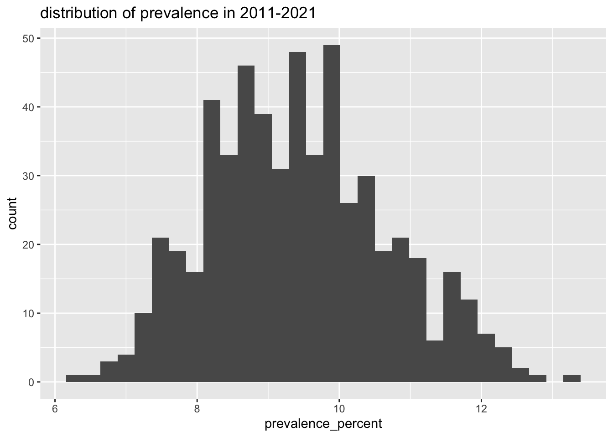
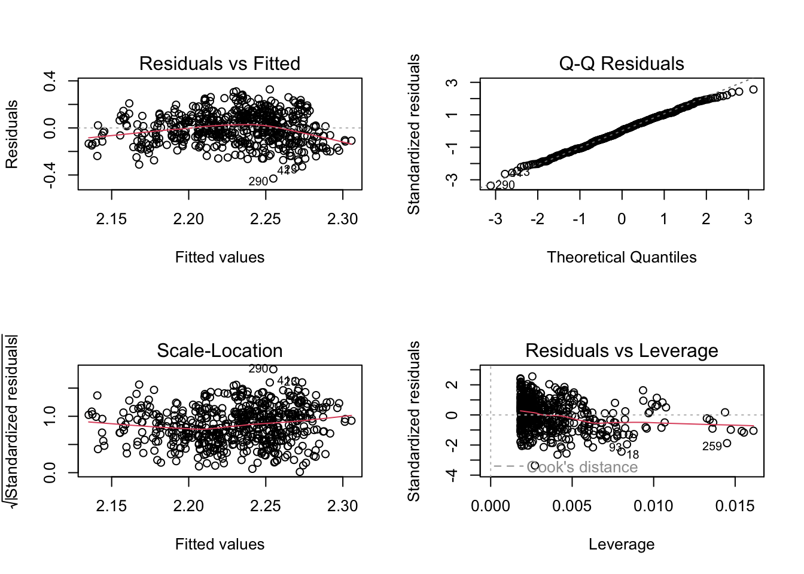

Untitled
Adeena Moghni
2024-11-25
##Weather data
state_codes = c("AL", "AK", "AZ", "AR", "CA", "CO", "CT", "DE", "FL", "GA", "HI", "ID", "IL", "IN", "IA", "KS", "KY", "LA", "ME", "MD", "MA", "MI", "MN", "MS", "MO", "MT", "NE", "NV", "NH", "NJ", "NM", "NY", "NC", "ND", "OH", "OK", "OR", "PA", "RI", "SC", "SD", "TN", "TX", "UT", "VT", "VA", "WA", "WV", "WI", "WY")
year = 2011:2021
state_stations = ghcnd_stations() %>%
filter(state %in% state_codes) %>%
select(id, state) %>%
group_by(state) %>%
sample_n(30) %>%
ungroup()## using cached file: /Users/suwa/Library/Caches/org.R-project.R/R/rnoaa/noaa_ghcnd/ghcnd-stations.rds## date created (size, mb): 2024-12-04 22:49:09.764671 (2.307)temp_func <- function(monitor_id, state) {
avg_temp <- meteo_pull_monitors(
monitors = monitor_id,
var = c("TMAX", "TMIN"),
date_min = "2011-01-01",
date_max = "2021-12-31"
)
if ("tmin" %in% colnames(avg_temp) && "tmax" %in% colnames(avg_temp)) {
avg_temp = avg_temp %>%
mutate(
state = state,
tmin = tmin / 10,
tmax = tmax / 10,
tavg_daily = (tmin + tmax) / 2,
date = as.character(date)
) %>%
separate(date, into = c("year", "month", "day"), sep = "-") %>%
mutate(
across(c(year, month, day), as.numeric),
season = case_when(
month %in% c(12, 1, 2) ~ "Winter",
month %in% c(3, 4, 5) ~ "Spring",
month %in% c(6, 7, 8) ~ "Summer",
month %in% c(9, 10, 11) ~ "Fall"
)
) %>%
drop_na()
return(avg_temp)
} else {
return(NULL)
}
}plan(multisession, workers = parallel::detectCores() - 1)
temp_data_list =
future_map2(state_stations$id,
state_stations$state,
temp_func,
.options = furrr_options(seed = TRUE))## file min/max dates: 1941-03-01 / 1970-01-31## file min/max dates: 1971-11-01 / 1989-04-30## file min/max dates: 2005-07-01 / 2024-12-31## file min/max dates: 1998-07-01 / 2024-12-31## file min/max dates: 1917-11-01 / 2024-06-30## file min/max dates: 1953-07-01 / 1985-01-31## file min/max dates: 2006-06-01 / 2024-12-31## file min/max dates: 2008-10-01 / 2010-04-30## Warning in meteo_pull_monitors(monitors = monitor_id, var = c("TMAX", "TMIN"), : The following stations could not be pulled from the GHCN ftp:
## US1AKBC0003
## Any other monitors were successfully pulled from GHCN.## file min/max dates: 1902-08-01 / 1904-08-31## file min/max dates: 1979-08-01 / 2003-12-31## file min/max dates: 1911-05-01 / 2024-12-31## file min/max dates: 2003-05-01 / 2021-10-31## file min/max dates: 1962-08-01 / 1996-09-30## file min/max dates: 1920-08-01 / 2024-12-31## file min/max dates: 1917-06-01 / 2024-12-31## file min/max dates: 1942-04-01 / 1954-05-31## file min/max dates: 1999-06-01 / 2024-12-31## file min/max dates: 1971-06-01 / 1974-01-31## file min/max dates: 1955-01-01 / 1960-09-30## file min/max dates: 2011-01-01 / 2024-12-31## file min/max dates: 1911-07-01 / 1974-10-31## file min/max dates: 1941-09-01 / 2024-12-31## file min/max dates: 1900-08-01 / 2024-12-31## file min/max dates: 2006-12-01 / 2008-03-31## file min/max dates: 1997-06-01 / 2024-12-31## file min/max dates: 1972-09-01 / 1977-04-30## file min/max dates: 1901-11-01 / 2024-12-31## file min/max dates: 1989-09-01 / 2024-08-31## file min/max dates: 1941-09-01 / 1943-11-30## Warning in meteo_pull_monitors(monitors = monitor_id, var = c("TMAX", "TMIN"), : The following stations could not be pulled from the GHCN ftp:
## USC00505726
## Any other monitors were successfully pulled from GHCN.## file min/max dates: 1970-10-01 / 1980-06-30## file min/max dates: 2017-03-01 / 2024-11-30## Warning in meteo_pull_monitors(monitors = monitor_id, var = c("TMAX", "TMIN"), : The following stations could not be pulled from the GHCN ftp:
## US1ALDK0018
## Any other monitors were successfully pulled from GHCN.## file min/max dates: 1948-08-01 / 1948-10-31## file min/max dates: 1893-12-01 / 1907-05-31## file min/max dates: 2021-06-01 / 2022-02-28## Warning in meteo_pull_monitors(monitors = monitor_id, var = c("TMAX", "TMIN"), : The following stations could not be pulled from the GHCN ftp:
## US1ALJF0078
## Any other monitors were successfully pulled from GHCN.## file min/max dates: 2022-02-01 / 2024-05-31## Warning in meteo_pull_monitors(monitors = monitor_id, var = c("TMAX", "TMIN"), : The following stations could not be pulled from the GHCN ftp:
## US1ALLS0038
## Any other monitors were successfully pulled from GHCN.## file min/max dates: 2007-11-01 / 2024-11-30## Warning in meteo_pull_monitors(monitors = monitor_id, var = c("TMAX", "TMIN"), : The following stations could not be pulled from the GHCN ftp:
## US1ALCT0001
## Any other monitors were successfully pulled from GHCN.## file min/max dates: 2013-01-01 / 2024-11-30## Warning in meteo_pull_monitors(monitors = monitor_id, var = c("TMAX", "TMIN"), : The following stations could not be pulled from the GHCN ftp:
## US1ALLD0039
## Any other monitors were successfully pulled from GHCN.## file min/max dates: 1961-09-01 / 2001-12-31## file min/max dates: 1959-01-01 / 1962-03-31## Warning in meteo_pull_monitors(monitors = monitor_id, var = c("TMAX", "TMIN"), : The following stations could not be pulled from the GHCN ftp:
## USC00012600
## Any other monitors were successfully pulled from GHCN.## file min/max dates: 2023-01-01 / 2024-12-31## Warning in meteo_pull_monitors(monitors = monitor_id, var = c("TMAX", "TMIN"), : The following stations could not be pulled from the GHCN ftp:
## US1ALBR0007
## Any other monitors were successfully pulled from GHCN.## file min/max dates: 2021-04-01 / 2022-12-31## Warning in meteo_pull_monitors(monitors = monitor_id, var = c("TMAX", "TMIN"), : The following stations could not be pulled from the GHCN ftp:
## US1ALEL0033
## Any other monitors were successfully pulled from GHCN.## file min/max dates: 1948-01-01 / 2024-12-31## file min/max dates: 2008-05-01 / 2010-12-31## Warning in meteo_pull_monitors(monitors = monitor_id, var = c("TMAX", "TMIN"), : The following stations could not be pulled from the GHCN ftp:
## US1ALEL0017
## Any other monitors were successfully pulled from GHCN.## file min/max dates: 2017-03-01 / 2020-08-31## Warning in meteo_pull_monitors(monitors = monitor_id, var = c("TMAX", "TMIN"), : The following stations could not be pulled from the GHCN ftp:
## US1ALJF0064
## Any other monitors were successfully pulled from GHCN.## file min/max dates: 2010-09-01 / 2013-08-31## Warning in meteo_pull_monitors(monitors = monitor_id, var = c("TMAX", "TMIN"), : The following stations could not be pulled from the GHCN ftp:
## US1ALBW0057
## Any other monitors were successfully pulled from GHCN.## file min/max dates: 2021-05-01 / 2023-01-31## Warning in meteo_pull_monitors(monitors = monitor_id, var = c("TMAX", "TMIN"), : The following stations could not be pulled from the GHCN ftp:
## US1ALJF0068
## Any other monitors were successfully pulled from GHCN.## file min/max dates: 2007-11-01 / 2012-04-30## Warning in meteo_pull_monitors(monitors = monitor_id, var = c("TMAX", "TMIN"), : The following stations could not be pulled from the GHCN ftp:
## US1ALCS0002
## Any other monitors were successfully pulled from GHCN.## file min/max dates: 1938-03-01 / 2014-04-30## Warning in meteo_pull_monitors(monitors = monitor_id, var = c("TMAX", "TMIN"), : The following stations could not be pulled from the GHCN ftp:
## USC00011377
## Any other monitors were successfully pulled from GHCN.## file min/max dates: 1893-01-01 / 1977-04-30## file min/max dates: 1916-12-01 / 1973-09-30## file min/max dates: 2007-11-01 / 2010-06-30## Warning in meteo_pull_monitors(monitors = monitor_id, var = c("TMAX", "TMIN"), : The following stations could not be pulled from the GHCN ftp:
## US1ALJF0033
## Any other monitors were successfully pulled from GHCN.## file min/max dates: 2007-11-01 / 2009-08-31## Warning in meteo_pull_monitors(monitors = monitor_id, var = c("TMAX", "TMIN"), : The following stations could not be pulled from the GHCN ftp:
## US1ALSM0001
## Any other monitors were successfully pulled from GHCN.## file min/max dates: 1950-02-01 / 2024-12-31## file min/max dates: 2007-11-01 / 2024-12-31## Warning in meteo_pull_monitors(monitors = monitor_id, var = c("TMAX", "TMIN"), : The following stations could not be pulled from the GHCN ftp:
## US1ALTP0007
## Any other monitors were successfully pulled from GHCN.## file min/max dates: 1940-03-01 / 2024-11-30## file min/max dates: 1912-10-01 / 2018-01-31## using cached file: /Users/suwa/Library/Caches/org.R-project.R/R/rnoaa/noaa_ghcnd/USC00010252.dly## date created (size, mb): 2024-12-05 17:01:29.828822 (2.678)## file min/max dates: 1912-10-01 / 2018-01-31## file min/max dates: 2016-12-01 / 2021-11-30## Warning in meteo_pull_monitors(monitors = monitor_id, var = c("TMAX", "TMIN"), : The following stations could not be pulled from the GHCN ftp:
## US1ALCC0001
## Any other monitors were successfully pulled from GHCN.## file min/max dates: 1888-02-01 / 2024-12-31## file min/max dates: 2022-05-01 / 2024-12-31## Warning in meteo_pull_monitors(monitors = monitor_id, var = c("TMAX", "TMIN"), : The following stations could not be pulled from the GHCN ftp:
## US1ALBL0026
## Any other monitors were successfully pulled from GHCN.## file min/max dates: 1884-04-01 / 2024-12-31## file min/max dates: 1892-09-01 / 2024-09-30## file min/max dates: 1897-04-01 / 1987-12-31## file min/max dates: 1948-10-01 / 1987-08-31## Warning in meteo_pull_monitors(monitors = monitor_id, var = c("TMAX", "TMIN"), : The following stations could not be pulled from the GHCN ftp:
## USC00031010
## Any other monitors were successfully pulled from GHCN.## file min/max dates: 2017-09-01 / 2024-08-31## Warning in meteo_pull_monitors(monitors = monitor_id, var = c("TMAX", "TMIN"), : The following stations could not be pulled from the GHCN ftp:
## US1ARPS0080
## Any other monitors were successfully pulled from GHCN.## file min/max dates: 1949-07-01 / 2024-12-31## file min/max dates: 2012-07-01 / 2021-01-31## Warning in meteo_pull_monitors(monitors = monitor_id, var = c("TMAX", "TMIN"), : The following stations could not be pulled from the GHCN ftp:
## US1ARLN0004
## Any other monitors were successfully pulled from GHCN.## file min/max dates: 2010-05-01 / 2013-06-30## Warning in meteo_pull_monitors(monitors = monitor_id, var = c("TMAX", "TMIN"), : The following stations could not be pulled from the GHCN ftp:
## US1ARCG0005
## Any other monitors were successfully pulled from GHCN.## file min/max dates: 1976-11-01 / 2024-12-31## file min/max dates: 2000-07-01 / 2024-12-31## Warning in meteo_pull_monitors(monitors = monitor_id, var = c("TMAX", "TMIN"), : The following stations could not be pulled from the GHCN ftp:
## USC00034936
## Any other monitors were successfully pulled from GHCN.## file min/max dates: 2011-01-01 / 2017-01-31## Warning in meteo_pull_monitors(monitors = monitor_id, var = c("TMAX", "TMIN"), : The following stations could not be pulled from the GHCN ftp:
## US1ARMT0004
## Any other monitors were successfully pulled from GHCN.## file min/max dates: 1940-03-01 / 2024-11-30## file min/max dates: 2012-08-01 / 2019-10-31## Warning in meteo_pull_monitors(monitors = monitor_id, var = c("TMAX", "TMIN"), : The following stations could not be pulled from the GHCN ftp:
## US1ARBX0026
## Any other monitors were successfully pulled from GHCN.## file min/max dates: 1919-05-01 / 1957-04-30## file min/max dates: 1946-03-01 / 2021-01-31## Warning in meteo_pull_monitors(monitors = monitor_id, var = c("TMAX", "TMIN"), : The following stations could not be pulled from the GHCN ftp:
## USC00031666
## Any other monitors were successfully pulled from GHCN.## file min/max dates: 1998-09-01 / 2014-09-30## file min/max dates: 1977-03-01 / 2024-12-31## file min/max dates: 2005-05-01 / 2007-03-31## file min/max dates: 1892-01-01 / 1975-02-28## file min/max dates: 1893-01-01 / 2024-12-31## file min/max dates: 2015-12-01 / 2018-07-31## Warning in meteo_pull_monitors(monitors = monitor_id, var = c("TMAX", "TMIN"), : The following stations could not be pulled from the GHCN ftp:
## US1ARCR0014
## Any other monitors were successfully pulled from GHCN.## file min/max dates: 2012-07-01 / 2024-12-31## Warning in meteo_pull_monitors(monitors = monitor_id, var = c("TMAX", "TMIN"), : The following stations could not be pulled from the GHCN ftp:
## US1ARFK0016
## Any other monitors were successfully pulled from GHCN.## file min/max dates: 1948-01-01 / 2024-12-31## file min/max dates: 1916-06-01 / 2024-11-30## Warning in meteo_pull_monitors(monitors = monitor_id, var = c("TMAX", "TMIN"), : The following stations could not be pulled from the GHCN ftp:
## USC00031834
## Any other monitors were successfully pulled from GHCN.## file min/max dates: 1999-10-01 / 2024-11-30## Warning in meteo_pull_monitors(monitors = monitor_id, var = c("TMAX", "TMIN"), : The following stations could not be pulled from the GHCN ftp:
## USC00037383
## Any other monitors were successfully pulled from GHCN.## file min/max dates: 1935-11-01 / 2018-10-31## Warning in meteo_pull_monitors(monitors = monitor_id, var = c("TMAX", "TMIN"), : The following stations could not be pulled from the GHCN ftp:
## USC00032842
## Any other monitors were successfully pulled from GHCN.## file min/max dates: 2014-11-01 / 2021-01-31## Warning in meteo_pull_monitors(monitors = monitor_id, var = c("TMAX", "TMIN"), : The following stations could not be pulled from the GHCN ftp:
## USC00035840
## Any other monitors were successfully pulled from GHCN.## file min/max dates: 1899-03-01 / 2024-12-31## file min/max dates: 1995-11-01 / 2024-11-30## Warning in meteo_pull_monitors(monitors = monitor_id, var = c("TMAX", "TMIN"), : The following stations could not be pulled from the GHCN ftp:
## USC00031310
## Any other monitors were successfully pulled from GHCN.## file min/max dates: 1904-10-01 / 1961-05-31## Warning in meteo_pull_monitors(monitors = monitor_id, var = c("TMAX", "TMIN"), : The following stations could not be pulled from the GHCN ftp:
## USC00037812
## Any other monitors were successfully pulled from GHCN.## file min/max dates: 1996-07-01 / 2024-12-31## file min/max dates: 2009-09-01 / 2013-11-30## Warning in meteo_pull_monitors(monitors = monitor_id, var = c("TMAX", "TMIN"), : The following stations could not be pulled from the GHCN ftp:
## US1AZSC0006
## Any other monitors were successfully pulled from GHCN.## file min/max dates: 2009-09-01 / 2015-09-30## Warning in meteo_pull_monitors(monitors = monitor_id, var = c("TMAX", "TMIN"), : The following stations could not be pulled from the GHCN ftp:
## US1AZGL0003
## Any other monitors were successfully pulled from GHCN.## file min/max dates: 2009-12-01 / 2011-06-30## Warning in meteo_pull_monitors(monitors = monitor_id, var = c("TMAX", "TMIN"), : The following stations could not be pulled from the GHCN ftp:
## US1AZGH0003
## Any other monitors were successfully pulled from GHCN.## file min/max dates: 2011-05-01 / 2014-03-31## file min/max dates: 1903-09-01 / 1957-08-31## file min/max dates: 1998-06-01 / 2024-12-31## Warning in meteo_pull_monitors(monitors = monitor_id, var = c("TMAX", "TMIN"), : The following stations could not be pulled from the GHCN ftp:
## US1AZNV0010
## Any other monitors were successfully pulled from GHCN.## file min/max dates: 2013-01-01 / 2024-05-31## Warning in meteo_pull_monitors(monitors = monitor_id, var = c("TMAX", "TMIN"), : The following stations could not be pulled from the GHCN ftp:
## US1AZPN0053
## Any other monitors were successfully pulled from GHCN.## file min/max dates: 1915-09-01 / 2005-05-31## file min/max dates: 2001-07-01 / 2018-10-31## Warning in meteo_pull_monitors(monitors = monitor_id, var = c("TMAX", "TMIN"), : The following stations could not be pulled from the GHCN ftp:
## US1AZPM0085
## Any other monitors were successfully pulled from GHCN.## file min/max dates: 1950-01-01 / 1985-01-31## file min/max dates: 2016-04-01 / 2021-01-31## Warning in meteo_pull_monitors(monitors = monitor_id, var = c("TMAX", "TMIN"), : The following stations could not be pulled from the GHCN ftp:
## US1AZYV0122
## Any other monitors were successfully pulled from GHCN.## file min/max dates: 1895-03-01 / 1973-05-31## Warning in meteo_pull_monitors(monitors = monitor_id, var = c("TMAX", "TMIN"), : The following stations could not be pulled from the GHCN ftp:
## USC00026561
## Any other monitors were successfully pulled from GHCN.## file min/max dates: 2023-07-01 / 2024-12-31## Warning in meteo_pull_monitors(monitors = monitor_id, var = c("TMAX", "TMIN"), : The following stations could not be pulled from the GHCN ftp:
## US1AZMR0626
## Any other monitors were successfully pulled from GHCN.## file min/max dates: 1892-12-01 / 1983-06-30## file min/max dates: 2016-01-01 / 2024-12-31## Warning in meteo_pull_monitors(monitors = monitor_id, var = c("TMAX", "TMIN"), : The following stations could not be pulled from the GHCN ftp:
## US1AZYV0063
## Any other monitors were successfully pulled from GHCN.## file min/max dates: 2020-07-01 / 2023-05-31## Warning in meteo_pull_monitors(monitors = monitor_id, var = c("TMAX", "TMIN"), : The following stations could not be pulled from the GHCN ftp:
## US1AZCN0164
## Any other monitors were successfully pulled from GHCN.## file min/max dates: 1928-12-01 / 1982-03-31## Warning in meteo_pull_monitors(monitors = monitor_id, var = c("TMAX", "TMIN"), : The following stations could not be pulled from the GHCN ftp:
## USC00028206
## Any other monitors were successfully pulled from GHCN.## file min/max dates: 1898-05-01 / 2024-12-31## file min/max dates: 1962-05-01 / 1992-09-30## file min/max dates: 1987-05-01 / 2024-12-31## file min/max dates: 1948-07-01 / 1950-01-31## file min/max dates: 1901-05-01 / 2024-10-31## file min/max dates: 2016-06-01 / 2018-07-31## Warning in meteo_pull_monitors(monitors = monitor_id, var = c("TMAX", "TMIN"), : The following stations could not be pulled from the GHCN ftp:
## US1AZYV0131
## Any other monitors were successfully pulled from GHCN.## file min/max dates: 1998-09-01 / 2024-12-31## file min/max dates: 2009-11-01 / 2015-07-31## Warning in meteo_pull_monitors(monitors = monitor_id, var = c("TMAX", "TMIN"), : The following stations could not be pulled from the GHCN ftp:
## US1AZPM0110
## Any other monitors were successfully pulled from GHCN.## file min/max dates: 2002-01-01 / 2024-12-31## file min/max dates: 1974-08-01 / 1977-12-31## file min/max dates: 1941-03-01 / 1991-12-31## file min/max dates: 1948-07-01 / 1951-09-30## Warning in meteo_pull_monitors(monitors = monitor_id, var = c("TMAX", "TMIN"), : The following stations could not be pulled from the GHCN ftp:
## USC00029534
## Any other monitors were successfully pulled from GHCN.## file min/max dates: 1894-05-01 / 2008-01-31## file min/max dates: 1960-07-01 / 1977-06-30## Warning in meteo_pull_monitors(monitors = monitor_id, var = c("TMAX", "TMIN"), : The following stations could not be pulled from the GHCN ftp:
## USC00043387
## Any other monitors were successfully pulled from GHCN.## file min/max dates: 1943-12-01 / 2024-12-31## file min/max dates: 1948-10-01 / 1972-02-29## file min/max dates: 1962-03-01 / 2024-09-30## file min/max dates: 1937-10-01 / 2024-12-31## file min/max dates: 1979-12-01 / 2001-06-30## file min/max dates: 2008-12-01 / 2016-09-30## Warning in meteo_pull_monitors(monitors = monitor_id, var = c("TMAX", "TMIN"), : The following stations could not be pulled from the GHCN ftp:
## US1CASJ0007
## Any other monitors were successfully pulled from GHCN.## file min/max dates: 1990-05-01 / 2024-12-31## file min/max dates: 1949-01-01 / 1970-12-31## file min/max dates: 1998-07-01 / 2024-12-31## file min/max dates: 1997-06-01 / 2024-12-31## file min/max dates: 1918-10-01 / 2014-09-30## Warning in meteo_pull_monitors(monitors = monitor_id, var = c("TMAX", "TMIN"), : The following stations could not be pulled from the GHCN ftp:
## USC00040014
## Any other monitors were successfully pulled from GHCN.## file min/max dates: 1998-04-01 / 2024-12-31## file min/max dates: 1910-06-01 / 1948-11-30## Warning in meteo_pull_monitors(monitors = monitor_id, var = c("TMAX", "TMIN"), : The following stations could not be pulled from the GHCN ftp:
## USC00045131
## Any other monitors were successfully pulled from GHCN.## file min/max dates: 2009-09-01 / 2012-04-30## Warning in meteo_pull_monitors(monitors = monitor_id, var = c("TMAX", "TMIN"), : The following stations could not be pulled from the GHCN ftp:
## US1CALA0013
## Any other monitors were successfully pulled from GHCN.## file min/max dates: 1951-06-01 / 2024-11-30## file min/max dates: 2017-12-01 / 2024-02-29## Warning in meteo_pull_monitors(monitors = monitor_id, var = c("TMAX", "TMIN"), : The following stations could not be pulled from the GHCN ftp:
## US1CASR0063
## Any other monitors were successfully pulled from GHCN.## file min/max dates: 1917-01-01 / 2021-11-30## file min/max dates: 1998-04-01 / 2024-12-31## file min/max dates: 1960-04-01 / 2024-12-31## file min/max dates: 1932-01-01 / 2024-12-31## file min/max dates: 2009-09-01 / 2024-09-30## file min/max dates: 2016-01-01 / 2020-03-31## Warning in meteo_pull_monitors(monitors = monitor_id, var = c("TMAX", "TMIN"), : The following stations could not be pulled from the GHCN ftp:
## US1CARV0045
## Any other monitors were successfully pulled from GHCN.## file min/max dates: 1941-12-01 / 2024-12-31## file min/max dates: 1906-01-01 / 1977-03-31## file min/max dates: 1905-01-01 / 1977-12-31## file min/max dates: 1955-02-01 / 2007-04-30## file min/max dates: 1948-01-01 / 2024-12-31## using cached file: /Users/suwa/Library/Caches/org.R-project.R/R/rnoaa/noaa_ghcnd/USW00023273.dly## date created (size, mb): 2024-12-05 17:18:38.931177 (5.917)## file min/max dates: 1948-01-01 / 2024-12-31## file min/max dates: 1893-01-01 / 1974-06-30## file min/max dates: 2004-01-01 / 2009-08-31## Warning in meteo_pull_monitors(monitors = monitor_id, var = c("TMAX", "TMIN"), : The following stations could not be pulled from the GHCN ftp:
## US1COPH0019
## Any other monitors were successfully pulled from GHCN.## file min/max dates: 2017-06-01 / 2024-12-31## Warning in meteo_pull_monitors(monitors = monitor_id, var = c("TMAX", "TMIN"), : The following stations could not be pulled from the GHCN ftp:
## US1COBO0476
## Any other monitors were successfully pulled from GHCN.## file min/max dates: 2010-05-01 / 2018-03-31## file min/max dates: 2018-10-01 / 2020-07-31## Warning in meteo_pull_monitors(monitors = monitor_id, var = c("TMAX", "TMIN"), : The following stations could not be pulled from the GHCN ftp:
## US1COJF0488
## Any other monitors were successfully pulled from GHCN.## file min/max dates: 1989-08-01 / 2024-12-31## file min/max dates: 2007-09-01 / 2024-12-31## file min/max dates: 2015-06-01 / 2024-11-30## Warning in meteo_pull_monitors(monitors = monitor_id, var = c("TMAX", "TMIN"), : The following stations could not be pulled from the GHCN ftp:
## US1COLR1070
## Any other monitors were successfully pulled from GHCN.## file min/max dates: 1970-04-01 / 1988-05-31## file min/max dates: 2003-11-01 / 2006-12-31## Warning in meteo_pull_monitors(monitors = monitor_id, var = c("TMAX", "TMIN"), : The following stations could not be pulled from the GHCN ftp:
## US1COPK0035
## Any other monitors were successfully pulled from GHCN.## file min/max dates: 2010-07-01 / 2024-11-30## Warning in meteo_pull_monitors(monitors = monitor_id, var = c("TMAX", "TMIN"), : The following stations could not be pulled from the GHCN ftp:
## US1CODG0157
## Any other monitors were successfully pulled from GHCN.## file min/max dates: 2005-04-01 / 2015-12-31## Warning in meteo_pull_monitors(monitors = monitor_id, var = c("TMAX", "TMIN"), : The following stations could not be pulled from the GHCN ftp:
## US1COPT0005
## Any other monitors were successfully pulled from GHCN.## file min/max dates: 1975-07-01 / 2024-12-31## file min/max dates: 2003-08-01 / 2004-10-31## Warning in meteo_pull_monitors(monitors = monitor_id, var = c("TMAX", "TMIN"), : The following stations could not be pulled from the GHCN ftp:
## US1COLR0055
## Any other monitors were successfully pulled from GHCN.## file min/max dates: 1947-07-01 / 1980-01-31## file min/max dates: 2005-05-01 / 2008-09-30## Warning in meteo_pull_monitors(monitors = monitor_id, var = c("TMAX", "TMIN"), : The following stations could not be pulled from the GHCN ftp:
## US1COMZ0036
## Any other monitors were successfully pulled from GHCN.## file min/max dates: 2017-06-01 / 2020-11-30## Warning in meteo_pull_monitors(monitors = monitor_id, var = c("TMAX", "TMIN"), : The following stations could not be pulled from the GHCN ftp:
## US1COBO0441
## Any other monitors were successfully pulled from GHCN.## file min/max dates: 1961-05-01 / 2024-12-31## file min/max dates: 2002-05-01 / 2006-09-30## Warning in meteo_pull_monitors(monitors = monitor_id, var = c("TMAX", "TMIN"), : The following stations could not be pulled from the GHCN ftp:
## US1CODG0009
## Any other monitors were successfully pulled from GHCN.## file min/max dates: 2000-05-01 / 2001-12-31## Warning in meteo_pull_monitors(monitors = monitor_id, var = c("TMAX", "TMIN"), : The following stations could not be pulled from the GHCN ftp:
## US1COLR0217
## Any other monitors were successfully pulled from GHCN.## file min/max dates: 2013-10-01 / 2024-11-30## Warning in meteo_pull_monitors(monitors = monitor_id, var = c("TMAX", "TMIN"), : The following stations could not be pulled from the GHCN ftp:
## US1COBO0367
## Any other monitors were successfully pulled from GHCN.## file min/max dates: 2024-01-01 / 2024-05-31## file min/max dates: 2005-11-01 / 2007-01-31## Warning in meteo_pull_monitors(monitors = monitor_id, var = c("TMAX", "TMIN"), : The following stations could not be pulled from the GHCN ftp:
## US1COPK0077
## Any other monitors were successfully pulled from GHCN.## file min/max dates: 2011-07-01 / 2024-12-31## Warning in meteo_pull_monitors(monitors = monitor_id, var = c("TMAX", "TMIN"), : The following stations could not be pulled from the GHCN ftp:
## US1COAR0225
## Any other monitors were successfully pulled from GHCN.## file min/max dates: 2009-11-01 / 2014-11-30## Warning in meteo_pull_monitors(monitors = monitor_id, var = c("TMAX", "TMIN"), : The following stations could not be pulled from the GHCN ftp:
## US1COAD0129
## Any other monitors were successfully pulled from GHCN.## file min/max dates: 2019-05-01 / 2020-04-30## Warning in meteo_pull_monitors(monitors = monitor_id, var = c("TMAX", "TMIN"), : The following stations could not be pulled from the GHCN ftp:
## US1COAR0371
## Any other monitors were successfully pulled from GHCN.## file min/max dates: 2007-10-01 / 2022-05-31## Warning in meteo_pull_monitors(monitors = monitor_id, var = c("TMAX", "TMIN"), : The following stations could not be pulled from the GHCN ftp:
## US1COME0067
## Any other monitors were successfully pulled from GHCN.## file min/max dates: 2003-07-01 / 2007-12-31## Warning in meteo_pull_monitors(monitors = monitor_id, var = c("TMAX", "TMIN"), : The following stations could not be pulled from the GHCN ftp:
## US1COLA0005
## Any other monitors were successfully pulled from GHCN.## file min/max dates: 2011-10-01 / 2024-12-31## file min/max dates: 2004-04-01 / 2007-10-31## Warning in meteo_pull_monitors(monitors = monitor_id, var = c("TMAX", "TMIN"), : The following stations could not be pulled from the GHCN ftp:
## US1CORB0003
## Any other monitors were successfully pulled from GHCN.## file min/max dates: 1948-06-01 / 1960-06-30## Warning in meteo_pull_monitors(monitors = monitor_id, var = c("TMAX", "TMIN"), : The following stations could not be pulled from the GHCN ftp:
## USC00063583
## Any other monitors were successfully pulled from GHCN.## file min/max dates: 1999-08-01 / 2024-12-31## file min/max dates: 2012-05-01 / 2018-09-30## Warning in meteo_pull_monitors(monitors = monitor_id, var = c("TMAX", "TMIN"), : The following stations could not be pulled from the GHCN ftp:
## US1CTMD0005
## Any other monitors were successfully pulled from GHCN.## file min/max dates: 1942-08-01 / 1953-10-31## file min/max dates: 1948-06-01 / 1960-06-30## Warning in meteo_pull_monitors(monitors = monitor_id, var = c("TMAX", "TMIN"), : The following stations could not be pulled from the GHCN ftp:
## USC00068441
## Any other monitors were successfully pulled from GHCN.## file min/max dates: 2017-06-01 / 2023-10-31## Warning in meteo_pull_monitors(monitors = monitor_id, var = c("TMAX", "TMIN"), : The following stations could not be pulled from the GHCN ftp:
## US1CTNH0041
## Any other monitors were successfully pulled from GHCN.## file min/max dates: 2016-10-01 / 2018-07-31## Warning in meteo_pull_monitors(monitors = monitor_id, var = c("TMAX", "TMIN"), : The following stations could not be pulled from the GHCN ftp:
## US1CTMD0012
## Any other monitors were successfully pulled from GHCN.## file min/max dates: 2021-04-01 / 2022-09-30## Warning in meteo_pull_monitors(monitors = monitor_id, var = c("TMAX", "TMIN"), : The following stations could not be pulled from the GHCN ftp:
## US1CTNH0079
## Any other monitors were successfully pulled from GHCN.## file min/max dates: 1950-05-01 / 1983-11-30## file min/max dates: 2023-04-01 / 2024-10-31## Warning in meteo_pull_monitors(monitors = monitor_id, var = c("TMAX", "TMIN"), : The following stations could not be pulled from the GHCN ftp:
## US1CTHR0134
## Any other monitors were successfully pulled from GHCN.## using cached file: /Users/suwa/Library/Caches/org.R-project.R/R/rnoaa/noaa_ghcnd/USC00060918.dly## date created (size, mb): 2024-12-05 16:52:59.193429 (0.834)## file min/max dates: 1950-05-01 / 1983-11-30## file min/max dates: 1916-02-01 / 2014-03-31## file min/max dates: 2017-04-01 / 2024-12-31## Warning in meteo_pull_monitors(monitors = monitor_id, var = c("TMAX", "TMIN"), : The following stations could not be pulled from the GHCN ftp:
## US1CTLT0018
## Any other monitors were successfully pulled from GHCN.## file min/max dates: 1868-01-01 / 1997-01-31## file min/max dates: 2020-06-01 / 2021-11-30## Warning in meteo_pull_monitors(monitors = monitor_id, var = c("TMAX", "TMIN"), : The following stations could not be pulled from the GHCN ftp:
## US1CTFR0084
## Any other monitors were successfully pulled from GHCN.## file min/max dates: 1932-09-01 / 2024-10-31## file min/max dates: 1932-09-01 / 1964-04-30## Warning in meteo_pull_monitors(monitors = monitor_id, var = c("TMAX", "TMIN"), : The following stations could not be pulled from the GHCN ftp:
## USC00069174
## Any other monitors were successfully pulled from GHCN.## file min/max dates: 1948-01-01 / 2024-12-31## file min/max dates: 1948-06-01 / 1975-11-30## Warning in meteo_pull_monitors(monitors = monitor_id, var = c("TMAX", "TMIN"), : The following stations could not be pulled from the GHCN ftp:
## USC00068488
## Any other monitors were successfully pulled from GHCN.## file min/max dates: 1893-08-01 / 1951-03-31## file min/max dates: 2017-03-01 / 2017-12-31## Warning in meteo_pull_monitors(monitors = monitor_id, var = c("TMAX", "TMIN"), : The following stations could not be pulled from the GHCN ftp:
## US1CTMD0015
## Any other monitors were successfully pulled from GHCN.## file min/max dates: 2021-02-01 / 2021-11-30## Warning in meteo_pull_monitors(monitors = monitor_id, var = c("TMAX", "TMIN"), : The following stations could not be pulled from the GHCN ftp:
## US1CTNL0053
## Any other monitors were successfully pulled from GHCN.## using cached file: /Users/suwa/Library/Caches/org.R-project.R/R/rnoaa/noaa_ghcnd/USW00014758.dly## date created (size, mb): 2024-12-05 16:54:53.366304 (2.676)## file min/max dates: 1948-01-01 / 2024-12-31## file min/max dates: 2019-04-01 / 2024-12-31## Warning in meteo_pull_monitors(monitors = monitor_id, var = c("TMAX", "TMIN"), : The following stations could not be pulled from the GHCN ftp:
## US1CTNH0056
## Any other monitors were successfully pulled from GHCN.## file min/max dates: 1934-09-01 / 1962-11-30## file min/max dates: 2002-08-01 / 2024-12-31## file min/max dates: 2016-09-01 / 2019-10-31## Warning in meteo_pull_monitors(monitors = monitor_id, var = c("TMAX", "TMIN"), : The following stations could not be pulled from the GHCN ftp:
## US1CTNH0031
## Any other monitors were successfully pulled from GHCN.## file min/max dates: 1893-01-01 / 1954-03-31## file min/max dates: 1955-12-01 / 2021-07-31## file min/max dates: 1932-11-01 / 1934-08-31## file min/max dates: 2016-05-01 / 2020-03-31## Warning in meteo_pull_monitors(monitors = monitor_id, var = c("TMAX", "TMIN"), : The following stations could not be pulled from the GHCN ftp:
## US1DEKN0025
## Any other monitors were successfully pulled from GHCN.## file min/max dates: 1946-09-01 / 1997-05-31## file min/max dates: 1931-04-01 / 2024-12-31## file min/max dates: 2016-03-01 / 2017-06-30## Warning in meteo_pull_monitors(monitors = monitor_id, var = c("TMAX", "TMIN"), : The following stations could not be pulled from the GHCN ftp:
## US1DESS0055
## Any other monitors were successfully pulled from GHCN.## file min/max dates: 2022-05-01 / 2024-11-30## Warning in meteo_pull_monitors(monitors = monitor_id, var = c("TMAX", "TMIN"), : The following stations could not be pulled from the GHCN ftp:
## US1DESS0084
## Any other monitors were successfully pulled from GHCN.## file min/max dates: 2002-11-01 / 2015-02-28## file min/max dates: 2016-03-01 / 2021-01-31## Warning in meteo_pull_monitors(monitors = monitor_id, var = c("TMAX", "TMIN"), : The following stations could not be pulled from the GHCN ftp:
## US1DENC0025
## Any other monitors were successfully pulled from GHCN.## using cached file: /Users/suwa/Library/Caches/org.R-project.R/R/rnoaa/noaa_ghcnd/USW00013781.dly## date created (size, mb): 2024-12-05 16:57:49.539775 (8.334)## file min/max dates: 1931-04-01 / 2024-12-31## file min/max dates: 2016-03-01 / 2024-12-31## Warning in meteo_pull_monitors(monitors = monitor_id, var = c("TMAX", "TMIN"), : The following stations could not be pulled from the GHCN ftp:
## US1DENC0034
## Any other monitors were successfully pulled from GHCN.## file min/max dates: 2009-09-01 / 2024-12-31## Warning in meteo_pull_monitors(monitors = monitor_id, var = c("TMAX", "TMIN"), : The following stations could not be pulled from the GHCN ftp:
## US1DEKN0001
## Any other monitors were successfully pulled from GHCN.## file min/max dates: 2020-09-01 / 2024-12-31## Warning in meteo_pull_monitors(monitors = monitor_id, var = c("TMAX", "TMIN"), : The following stations could not be pulled from the GHCN ftp:
## US1DEKN0032
## Any other monitors were successfully pulled from GHCN.## file min/max dates: 2016-03-01 / 2024-03-31## Warning in meteo_pull_monitors(monitors = monitor_id, var = c("TMAX", "TMIN"), : The following stations could not be pulled from the GHCN ftp:
## US1DEKN0022
## Any other monitors were successfully pulled from GHCN.## file min/max dates: 1938-10-01 / 1949-03-31## file min/max dates: 1893-01-01 / 1954-01-31## file min/max dates: 1986-01-01 / 2010-06-30## using cached file: /Users/suwa/Library/Caches/org.R-project.R/R/rnoaa/noaa_ghcnd/USW00013781.dly## date created (size, mb): 2024-12-05 16:57:49.539775 (8.334)## file min/max dates: 1931-04-01 / 2024-12-31## using cached file: /Users/suwa/Library/Caches/org.R-project.R/R/rnoaa/noaa_ghcnd/USW00013781.dly## date created (size, mb): 2024-12-05 16:57:49.539775 (8.334)## file min/max dates: 1931-04-01 / 2024-12-31## file min/max dates: 1894-04-01 / 2024-08-31## file min/max dates: 2003-02-01 / 2012-12-31## file min/max dates: 2009-09-01 / 2014-11-30## Warning in meteo_pull_monitors(monitors = monitor_id, var = c("TMAX", "TMIN"), : The following stations could not be pulled from the GHCN ftp:
## US1DENC0006
## Any other monitors were successfully pulled from GHCN.## file min/max dates: 1902-11-01 / 1954-04-30## using cached file: /Users/suwa/Library/Caches/org.R-project.R/R/rnoaa/noaa_ghcnd/USC00076410.dly## date created (size, mb): 2024-12-05 16:58:59.555894 (3.029)## file min/max dates: 1894-04-01 / 2024-08-31## using cached file: /Users/suwa/Library/Caches/org.R-project.R/R/rnoaa/noaa_ghcnd/USC00073570.dly## date created (size, mb): 2024-12-05 16:56:35.349303 (2.254)## file min/max dates: 1946-09-01 / 1997-05-31## using cached file: /Users/suwa/Library/Caches/org.R-project.R/R/rnoaa/noaa_ghcnd/USW00013781.dly## date created (size, mb): 2024-12-05 16:57:49.539775 (8.334)## file min/max dates: 1931-04-01 / 2024-12-31## file min/max dates: 2009-03-01 / 2024-12-31## Warning in meteo_pull_monitors(monitors = monitor_id, var = c("TMAX", "TMIN"), : The following stations could not be pulled from the GHCN ftp:
## US1DESS0006
## Any other monitors were successfully pulled from GHCN.## file min/max dates: 2009-09-01 / 2015-07-31## Warning in meteo_pull_monitors(monitors = monitor_id, var = c("TMAX", "TMIN"), : The following stations could not be pulled from the GHCN ftp:
## US1DENC0007
## Any other monitors were successfully pulled from GHCN.## file min/max dates: 2014-10-01 / 2024-02-29## Warning in meteo_pull_monitors(monitors = monitor_id, var = c("TMAX", "TMIN"), : The following stations could not be pulled from the GHCN ftp:
## US1DENC0020
## Any other monitors were successfully pulled from GHCN.## file min/max dates: 2022-08-01 / 2024-12-31## Warning in meteo_pull_monitors(monitors = monitor_id, var = c("TMAX", "TMIN"), : The following stations could not be pulled from the GHCN ftp:
## US1DESS0086
## Any other monitors were successfully pulled from GHCN.## file min/max dates: 2016-03-01 / 2017-12-31## Warning in meteo_pull_monitors(monitors = monitor_id, var = c("TMAX", "TMIN"), : The following stations could not be pulled from the GHCN ftp:
## US1DESS0056
## Any other monitors were successfully pulled from GHCN.## file min/max dates: 2022-06-01 / 2024-12-31## Warning in meteo_pull_monitors(monitors = monitor_id, var = c("TMAX", "TMIN"), : The following stations could not be pulled from the GHCN ftp:
## US1DESS0085
## Any other monitors were successfully pulled from GHCN.## file min/max dates: 2012-02-01 / 2024-11-30## Warning in meteo_pull_monitors(monitors = monitor_id, var = c("TMAX", "TMIN"), : The following stations could not be pulled from the GHCN ftp:
## US1FLBW0067
## Any other monitors were successfully pulled from GHCN.## file min/max dates: 1892-11-01 / 1959-07-31## file min/max dates: 2007-11-01 / 2010-05-31## Warning in meteo_pull_monitors(monitors = monitor_id, var = c("TMAX", "TMIN"), : The following stations could not be pulled from the GHCN ftp:
## US1FLSS0003
## Any other monitors were successfully pulled from GHCN.## file min/max dates: 2022-10-01 / 2024-11-30## Warning in meteo_pull_monitors(monitors = monitor_id, var = c("TMAX", "TMIN"), : The following stations could not be pulled from the GHCN ftp:
## US1FLBW0170
## Any other monitors were successfully pulled from GHCN.## file min/max dates: 1952-05-01 / 2024-12-31## file min/max dates: 2007-10-01 / 2024-12-31## Warning in meteo_pull_monitors(monitors = monitor_id, var = c("TMAX", "TMIN"), : The following stations could not be pulled from the GHCN ftp:
## US1FLWT0003
## Any other monitors were successfully pulled from GHCN.## file min/max dates: 1943-08-01 / 2024-09-30## file min/max dates: 1955-07-01 / 1956-11-30## file min/max dates: 1948-07-01 / 2003-06-30## file min/max dates: 1947-03-01 / 1998-12-31## file min/max dates: 2017-06-01 / 2018-10-31## Warning in meteo_pull_monitors(monitors = monitor_id, var = c("TMAX", "TMIN"), : The following stations could not be pulled from the GHCN ftp:
## US1FLVL0050
## Any other monitors were successfully pulled from GHCN.## file min/max dates: 2019-03-01 / 2024-10-31## Warning in meteo_pull_monitors(monitors = monitor_id, var = c("TMAX", "TMIN"), : The following stations could not be pulled from the GHCN ftp:
## US1FLPN0094
## Any other monitors were successfully pulled from GHCN.## file min/max dates: 2007-10-01 / 2024-05-31## Warning in meteo_pull_monitors(monitors = monitor_id, var = c("TMAX", "TMIN"), : The following stations could not be pulled from the GHCN ftp:
## US1FLPS0007
## Any other monitors were successfully pulled from GHCN.## file min/max dates: 2023-03-01 / 2024-12-31## Warning in meteo_pull_monitors(monitors = monitor_id, var = c("TMAX", "TMIN"), : The following stations could not be pulled from the GHCN ftp:
## US1FLHB0184
## Any other monitors were successfully pulled from GHCN.## file min/max dates: 2022-03-01 / 2024-11-30## Warning in meteo_pull_monitors(monitors = monitor_id, var = c("TMAX", "TMIN"), : The following stations could not be pulled from the GHCN ftp:
## US1FLSM0044
## Any other monitors were successfully pulled from GHCN.## file min/max dates: 2022-03-01 / 2024-12-31## Warning in meteo_pull_monitors(monitors = monitor_id, var = c("TMAX", "TMIN"), : The following stations could not be pulled from the GHCN ftp:
## US1FLBV0136
## Any other monitors were successfully pulled from GHCN.## file min/max dates: 2018-05-01 / 2024-12-31## Warning in meteo_pull_monitors(monitors = monitor_id, var = c("TMAX", "TMIN"), : The following stations could not be pulled from the GHCN ftp:
## US1FLMA0029
## Any other monitors were successfully pulled from GHCN.## file min/max dates: 2017-10-01 / 2024-12-31## Warning in meteo_pull_monitors(monitors = monitor_id, var = c("TMAX", "TMIN"), : The following stations could not be pulled from the GHCN ftp:
## US1FLGD0007
## Any other monitors were successfully pulled from GHCN.## file min/max dates: 2018-05-01 / 2024-01-31## Warning in meteo_pull_monitors(monitors = monitor_id, var = c("TMAX", "TMIN"), : The following stations could not be pulled from the GHCN ftp:
## US1FLBY0019
## Any other monitors were successfully pulled from GHCN.## file min/max dates: 2022-09-01 / 2024-11-30## Warning in meteo_pull_monitors(monitors = monitor_id, var = c("TMAX", "TMIN"), : The following stations could not be pulled from the GHCN ftp:
## US1FLHS0005
## Any other monitors were successfully pulled from GHCN.## file min/max dates: 2018-05-01 / 2024-12-31## Warning in meteo_pull_monitors(monitors = monitor_id, var = c("TMAX", "TMIN"), : The following stations could not be pulled from the GHCN ftp:
## US1FLLN0074
## Any other monitors were successfully pulled from GHCN.## file min/max dates: 1907-10-01 / 1976-06-30## file min/max dates: 1998-06-01 / 2024-12-31## Warning in meteo_pull_monitors(monitors = monitor_id, var = c("TMAX", "TMIN"), : The following stations could not be pulled from the GHCN ftp:
## US1FLBW0079
## Any other monitors were successfully pulled from GHCN.## file min/max dates: 2014-07-01 / 2014-12-31## Warning in meteo_pull_monitors(monitors = monitor_id, var = c("TMAX", "TMIN"), : The following stations could not be pulled from the GHCN ftp:
## US1FLJK0005
## Any other monitors were successfully pulled from GHCN.## file min/max dates: 2019-06-01 / 2024-12-31## Warning in meteo_pull_monitors(monitors = monitor_id, var = c("TMAX", "TMIN"), : The following stations could not be pulled from the GHCN ftp:
## US1FLWT0022
## Any other monitors were successfully pulled from GHCN.## file min/max dates: 2020-04-01 / 2023-09-30## Warning in meteo_pull_monitors(monitors = monitor_id, var = c("TMAX", "TMIN"), : The following stations could not be pulled from the GHCN ftp:
## US1FLMD0100
## Any other monitors were successfully pulled from GHCN.## file min/max dates: 2013-11-01 / 2019-01-31## Warning in meteo_pull_monitors(monitors = monitor_id, var = c("TMAX", "TMIN"), : The following stations could not be pulled from the GHCN ftp:
## US1FLLE0039
## Any other monitors were successfully pulled from GHCN.## file min/max dates: 2001-11-01 / 2005-12-31## file min/max dates: 1948-07-01 / 1973-09-30## file min/max dates: 2011-01-01 / 2024-12-31## file min/max dates: 1918-07-01 / 2015-12-31## file min/max dates: 2008-08-01 / 2024-01-31## Warning in meteo_pull_monitors(monitors = monitor_id, var = c("TMAX", "TMIN"), : The following stations could not be pulled from the GHCN ftp:
## US1GAGW0016
## Any other monitors were successfully pulled from GHCN.## file min/max dates: 2008-05-01 / 2021-08-31## Warning in meteo_pull_monitors(monitors = monitor_id, var = c("TMAX", "TMIN"), : The following stations could not be pulled from the GHCN ftp:
## US1GACE0001
## Any other monitors were successfully pulled from GHCN.## file min/max dates: 2008-06-01 / 2019-07-31## Warning in meteo_pull_monitors(monitors = monitor_id, var = c("TMAX", "TMIN"), : The following stations could not be pulled from the GHCN ftp:
## US1GACY0002
## Any other monitors were successfully pulled from GHCN.## file min/max dates: 1891-10-01 / 2017-08-31## file min/max dates: 1941-10-01 / 2024-12-31## file min/max dates: 2008-05-01 / 2024-11-30## Warning in meteo_pull_monitors(monitors = monitor_id, var = c("TMAX", "TMIN"), : The following stations could not be pulled from the GHCN ftp:
## US1GALW0004
## Any other monitors were successfully pulled from GHCN.## file min/max dates: 1971-06-01 / 2013-07-31## file min/max dates: 2008-06-01 / 2024-12-31## Warning in meteo_pull_monitors(monitors = monitor_id, var = c("TMAX", "TMIN"), : The following stations could not be pulled from the GHCN ftp:
## US1GAFN0001
## Any other monitors were successfully pulled from GHCN.## file min/max dates: 1892-05-01 / 1969-02-28## file min/max dates: 2012-01-01 / 2017-12-31## Warning in meteo_pull_monitors(monitors = monitor_id, var = c("TMAX", "TMIN"), : The following stations could not be pulled from the GHCN ftp:
## US1GAFL0013
## Any other monitors were successfully pulled from GHCN.## file min/max dates: 1898-05-01 / 1910-11-30## file min/max dates: 2008-04-01 / 2016-12-31## Warning in meteo_pull_monitors(monitors = monitor_id, var = c("TMAX", "TMIN"), : The following stations could not be pulled from the GHCN ftp:
## US1GAFL0002
## Any other monitors were successfully pulled from GHCN.## file min/max dates: 1900-03-01 / 1904-01-31## file min/max dates: 1889-09-01 / 2013-09-30## file min/max dates: 1940-06-01 / 2004-11-30## file min/max dates: 1910-05-01 / 2005-11-30## Warning in meteo_pull_monitors(monitors = monitor_id, var = c("TMAX", "TMIN"), : The following stations could not be pulled from the GHCN ftp:
## USC00096407
## Any other monitors were successfully pulled from GHCN.## file min/max dates: 2001-11-01 / 2009-07-31## Warning in meteo_pull_monitors(monitors = monitor_id, var = c("TMAX", "TMIN"), : The following stations could not be pulled from the GHCN ftp:
## US1GAWL0004
## Any other monitors were successfully pulled from GHCN.## file min/max dates: 2011-12-01 / 2020-02-29## Warning in meteo_pull_monitors(monitors = monitor_id, var = c("TMAX", "TMIN"), : The following stations could not be pulled from the GHCN ftp:
## US1GAFN0004
## Any other monitors were successfully pulled from GHCN.## file min/max dates: 1972-09-01 / 2005-06-30## file min/max dates: 2013-09-01 / 2024-12-31## Warning in meteo_pull_monitors(monitors = monitor_id, var = c("TMAX", "TMIN"), : The following stations could not be pulled from the GHCN ftp:
## US1GACT0037
## Any other monitors were successfully pulled from GHCN.## using cached file: /Users/suwa/Library/Caches/org.R-project.R/R/rnoaa/noaa_ghcnd/US1GAFN0004.dly## date created (size, mb): 2024-12-05 17:06:39.756774 (0.09)## file min/max dates: 2011-12-01 / 2020-02-29## Warning in meteo_pull_monitors(monitors = monitor_id, var = c("TMAX", "TMIN"), : The following stations could not be pulled from the GHCN ftp:
## US1GAFN0004
## Any other monitors were successfully pulled from GHCN.## file min/max dates: 1892-04-01 / 2014-07-31## file min/max dates: 2008-06-01 / 2024-12-31## Warning in meteo_pull_monitors(monitors = monitor_id, var = c("TMAX", "TMIN"), : The following stations could not be pulled from the GHCN ftp:
## US1GACM0004
## Any other monitors were successfully pulled from GHCN.## file min/max dates: 2014-03-01 / 2018-07-31## Warning in meteo_pull_monitors(monitors = monitor_id, var = c("TMAX", "TMIN"), : The following stations could not be pulled from the GHCN ftp:
## US1GADK0035
## Any other monitors were successfully pulled from GHCN.## file min/max dates: 1892-04-01 / 1986-03-31## file min/max dates: 2008-06-01 / 2020-02-29## Warning in meteo_pull_monitors(monitors = monitor_id, var = c("TMAX", "TMIN"), : The following stations could not be pulled from the GHCN ftp:
## US1GACS0002
## Any other monitors were successfully pulled from GHCN.## file min/max dates: 1897-04-01 / 1902-05-31## file min/max dates: 2008-12-01 / 2013-06-30## Warning in meteo_pull_monitors(monitors = monitor_id, var = c("TMAX", "TMIN"), : The following stations could not be pulled from the GHCN ftp:
## US1GADK0015
## Any other monitors were successfully pulled from GHCN.## file min/max dates: 2020-11-01 / 2024-11-30## Warning in meteo_pull_monitors(monitors = monitor_id, var = c("TMAX", "TMIN"), : The following stations could not be pulled from the GHCN ftp:
## US1GACW0025
## Any other monitors were successfully pulled from GHCN.## file min/max dates: 1976-04-01 / 1979-05-31## file min/max dates: 1999-12-01 / 2010-12-31## Warning in meteo_pull_monitors(monitors = monitor_id, var = c("TMAX", "TMIN"), : The following stations could not be pulled from the GHCN ftp:
## USC00514171
## Any other monitors were successfully pulled from GHCN.## file min/max dates: 1963-05-01 / 2010-12-31## Warning in meteo_pull_monitors(monitors = monitor_id, var = c("TMAX", "TMIN"), : The following stations could not be pulled from the GHCN ftp:
## USC00516012
## Any other monitors were successfully pulled from GHCN.## file min/max dates: 1907-05-01 / 1937-12-31## Warning in meteo_pull_monitors(monitors = monitor_id, var = c("TMAX", "TMIN"), : The following stations could not be pulled from the GHCN ftp:
## USC00515032
## Any other monitors were successfully pulled from GHCN.## file min/max dates: 2021-09-01 / 2024-12-31## Warning in meteo_pull_monitors(monitors = monitor_id, var = c("TMAX", "TMIN"), : The following stations could not be pulled from the GHCN ftp:
## US1HIHN0035
## Any other monitors were successfully pulled from GHCN.## file min/max dates: 1949-10-01 / 1963-04-30## Warning in meteo_pull_monitors(monitors = monitor_id, var = c("TMAX", "TMIN"), : The following stations could not be pulled from the GHCN ftp:
## USC00518275
## Any other monitors were successfully pulled from GHCN.## file min/max dates: 1950-02-01 / 2024-12-31## file min/max dates: 1985-11-01 / 1989-12-31## file min/max dates: 1989-11-01 / 2012-10-31## file min/max dates: 1950-01-01 / 1955-03-31## Warning in meteo_pull_monitors(monitors = monitor_id, var = c("TMAX", "TMIN"), : The following stations could not be pulled from the GHCN ftp:
## USC00513043
## Any other monitors were successfully pulled from GHCN.## file min/max dates: 1925-03-01 / 1949-12-31## file min/max dates: 2011-06-01 / 2013-01-31## Warning in meteo_pull_monitors(monitors = monitor_id, var = c("TMAX", "TMIN"), : The following stations could not be pulled from the GHCN ftp:
## US1HIHN0009
## Any other monitors were successfully pulled from GHCN.## file min/max dates: 1964-05-01 / 1999-09-30## Warning in meteo_pull_monitors(monitors = monitor_id, var = c("TMAX", "TMIN"), : The following stations could not be pulled from the GHCN ftp:
## USC00511552
## Any other monitors were successfully pulled from GHCN.## file min/max dates: 1958-01-01 / 1986-11-30## Warning in meteo_pull_monitors(monitors = monitor_id, var = c("TMAX", "TMIN"), : The following stations could not be pulled from the GHCN ftp:
## USC00510040
## Any other monitors were successfully pulled from GHCN.## file min/max dates: 1942-01-01 / 1999-01-31## Warning in meteo_pull_monitors(monitors = monitor_id, var = c("TMAX", "TMIN"), : The following stations could not be pulled from the GHCN ftp:
## USC00512327
## Any other monitors were successfully pulled from GHCN.## file min/max dates: 1949-10-01 / 2024-12-31## file min/max dates: 1921-01-01 / 1963-10-31## file min/max dates: 1905-01-01 / 1952-03-31## file min/max dates: 1905-01-01 / 2022-06-30## file min/max dates: 1942-01-01 / 2000-10-31## Warning in meteo_pull_monitors(monitors = monitor_id, var = c("TMAX", "TMIN"), : The following stations could not be pulled from the GHCN ftp:
## USC00512161
## Any other monitors were successfully pulled from GHCN.## file min/max dates: 1919-01-01 / 2018-12-31## file min/max dates: 1986-06-01 / 2024-09-30## file min/max dates: 1905-01-01 / 1961-06-30## file min/max dates: 2000-08-01 / 2024-12-31## Warning in meteo_pull_monitors(monitors = monitor_id, var = c("TMAX", "TMIN"), : The following stations could not be pulled from the GHCN ftp:
## USC00513376
## Any other monitors were successfully pulled from GHCN.## file min/max dates: 1938-01-01 / 2023-10-31## Warning in meteo_pull_monitors(monitors = monitor_id, var = c("TMAX", "TMIN"), : The following stations could not be pulled from the GHCN ftp:
## USC00511665
## Any other monitors were successfully pulled from GHCN.## file min/max dates: 1919-09-01 / 2024-09-30## file min/max dates: 1940-07-01 / 1978-04-30## Warning in meteo_pull_monitors(monitors = monitor_id, var = c("TMAX", "TMIN"), : The following stations could not be pulled from the GHCN ftp:
## USC00513159
## Any other monitors were successfully pulled from GHCN.## file min/max dates: 1949-10-01 / 2010-08-31## Warning in meteo_pull_monitors(monitors = monitor_id, var = c("TMAX", "TMIN"), : The following stations could not be pulled from the GHCN ftp:
## USC00512047
## Any other monitors were successfully pulled from GHCN.## file min/max dates: 1939-01-01 / 2024-11-30## file min/max dates: 1942-07-01 / 1963-11-30## Warning in meteo_pull_monitors(monitors = monitor_id, var = c("TMAX", "TMIN"), : The following stations could not be pulled from the GHCN ftp:
## USC00514245
## Any other monitors were successfully pulled from GHCN.## using cached file: /Users/suwa/Library/Caches/org.R-project.R/R/rnoaa/noaa_ghcnd/USW00014933.dly## date created (size, mb): 2024-12-05 16:56:24.081059 (9.316)## file min/max dates: 1945-07-01 / 2024-12-31## file min/max dates: 2015-03-01 / 2024-12-31## Warning in meteo_pull_monitors(monitors = monitor_id, var = c("TMAX", "TMIN"), : The following stations could not be pulled from the GHCN ftp:
## US1IALN0027
## Any other monitors were successfully pulled from GHCN.## file min/max dates: 1919-10-01 / 2024-11-30## file min/max dates: 1904-04-01 / 1910-04-30## file min/max dates: 1951-01-01 / 1980-01-31## Warning in meteo_pull_monitors(monitors = monitor_id, var = c("TMAX", "TMIN"), : The following stations could not be pulled from the GHCN ftp:
## USC00134898
## Any other monitors were successfully pulled from GHCN.## file min/max dates: 1938-03-01 / 2024-12-31## file min/max dates: 1893-01-01 / 2024-12-31## file min/max dates: 2014-12-01 / 2024-11-30## Warning in meteo_pull_monitors(monitors = monitor_id, var = c("TMAX", "TMIN"), : The following stations could not be pulled from the GHCN ftp:
## US1IATY0004
## Any other monitors were successfully pulled from GHCN.## file min/max dates: 2011-08-01 / 2024-12-31## Warning in meteo_pull_monitors(monitors = monitor_id, var = c("TMAX", "TMIN"), : The following stations could not be pulled from the GHCN ftp:
## USC00137363
## Any other monitors were successfully pulled from GHCN.## file min/max dates: 1934-01-01 / 1950-11-30## file min/max dates: 1893-01-01 / 2008-08-31## file min/max dates: 2011-06-01 / 2013-06-30## Warning in meteo_pull_monitors(monitors = monitor_id, var = c("TMAX", "TMIN"), : The following stations could not be pulled from the GHCN ftp:
## US1IAVB0004
## Any other monitors were successfully pulled from GHCN.## file min/max dates: 1984-07-01 / 1989-07-31## file min/max dates: 2023-10-01 / 2024-12-31## Warning in meteo_pull_monitors(monitors = monitor_id, var = c("TMAX", "TMIN"), : The following stations could not be pulled from the GHCN ftp:
## US1IASX0014
## Any other monitors were successfully pulled from GHCN.## file min/max dates: 1948-08-01 / 2024-12-31## Warning in meteo_pull_monitors(monitors = monitor_id, var = c("TMAX", "TMIN"), : The following stations could not be pulled from the GHCN ftp:
## USC00138009
## Any other monitors were successfully pulled from GHCN.## file min/max dates: 1901-01-01 / 1984-05-31## file min/max dates: 1946-09-01 / 2021-07-31## file min/max dates: 1945-07-01 / 2024-12-31## file min/max dates: 1895-02-01 / 2024-12-31## file min/max dates: 1948-01-01 / 2024-12-31## file min/max dates: 2007-08-01 / 2012-10-31## Warning in meteo_pull_monitors(monitors = monitor_id, var = c("TMAX", "TMIN"), : The following stations could not be pulled from the GHCN ftp:
## US1IAPK0027
## Any other monitors were successfully pulled from GHCN.## file min/max dates: 2013-06-01 / 2024-12-31## Warning in meteo_pull_monitors(monitors = monitor_id, var = c("TMAX", "TMIN"), : The following stations could not be pulled from the GHCN ftp:
## US1IAVB0008
## Any other monitors were successfully pulled from GHCN.## file min/max dates: 1997-06-01 / 2009-04-30## file min/max dates: 2007-08-01 / 2013-05-31## Warning in meteo_pull_monitors(monitors = monitor_id, var = c("TMAX", "TMIN"), : The following stations could not be pulled from the GHCN ftp:
## US1IAMA0002
## Any other monitors were successfully pulled from GHCN.## file min/max dates: 1948-04-01 / 1949-02-28## Warning in meteo_pull_monitors(monitors = monitor_id, var = c("TMAX", "TMIN"), : The following stations could not be pulled from the GHCN ftp:
## USC00137738
## Any other monitors were successfully pulled from GHCN.## file min/max dates: 2007-08-01 / 2011-08-31## Warning in meteo_pull_monitors(monitors = monitor_id, var = c("TMAX", "TMIN"), : The following stations could not be pulled from the GHCN ftp:
## US1IAPK0028
## Any other monitors were successfully pulled from GHCN.## file min/max dates: 1893-01-01 / 1981-03-31## file min/max dates: 2018-06-01 / 2024-12-31## Warning in meteo_pull_monitors(monitors = monitor_id, var = c("TMAX", "TMIN"), : The following stations could not be pulled from the GHCN ftp:
## US1IAPK0095
## Any other monitors were successfully pulled from GHCN.## file min/max dates: 2007-07-01 / 2024-12-31## Warning in meteo_pull_monitors(monitors = monitor_id, var = c("TMAX", "TMIN"), : The following stations could not be pulled from the GHCN ftp:
## US1IAST0003
## Any other monitors were successfully pulled from GHCN.## file min/max dates: 2017-04-01 / 2019-12-31## Warning in meteo_pull_monitors(monitors = monitor_id, var = c("TMAX", "TMIN"), : The following stations could not be pulled from the GHCN ftp:
## US1IADB0019
## Any other monitors were successfully pulled from GHCN.## file min/max dates: 1913-11-01 / 1962-12-31## file min/max dates: 1907-05-01 / 2024-12-31## file min/max dates: 1905-05-01 / 2024-12-31## file min/max dates: 1940-07-01 / 1987-08-31## file min/max dates: 1966-06-01 / 2017-11-30## file min/max dates: 1948-08-01 / 2024-12-31## file min/max dates: 1892-07-01 / 2024-12-31## file min/max dates: 2001-09-01 / 2024-12-31## file min/max dates: 1906-10-01 / 2024-11-30## file min/max dates: 1921-11-01 / 1980-01-31## file min/max dates: 1963-10-01 / 1983-05-31## file min/max dates: 2009-06-01 / 2017-11-30## Warning in meteo_pull_monitors(monitors = monitor_id, var = c("TMAX", "TMIN"), : The following stations could not be pulled from the GHCN ftp:
## US1IDTF0003
## Any other monitors were successfully pulled from GHCN.## file min/max dates: 1948-10-01 / 2024-11-30## file min/max dates: 1894-02-01 / 1955-12-31## file min/max dates: 1958-04-01 / 2024-12-31## file min/max dates: 1985-01-01 / 2024-12-31## file min/max dates: 1971-04-01 / 2013-04-30## file min/max dates: 2014-12-01 / 2021-01-31## Warning in meteo_pull_monitors(monitors = monitor_id, var = c("TMAX", "TMIN"), : The following stations could not be pulled from the GHCN ftp:
## US1IDCY0017
## Any other monitors were successfully pulled from GHCN.## file min/max dates: 1984-11-01 / 2018-06-30## file min/max dates: 1910-01-01 / 1917-11-30## file min/max dates: 1907-08-01 / 2024-09-30## file min/max dates: 1952-01-01 / 2022-11-30## file min/max dates: 1914-01-01 / 2024-12-31## file min/max dates: 2014-06-01 / 2023-08-31## Warning in meteo_pull_monitors(monitors = monitor_id, var = c("TMAX", "TMIN"), : The following stations could not be pulled from the GHCN ftp:
## US1IDBK0010
## Any other monitors were successfully pulled from GHCN.## file min/max dates: 1909-09-01 / 1997-09-30## file min/max dates: 1990-05-01 / 2024-12-31## file min/max dates: 1905-10-01 / 1913-04-30## file min/max dates: 1902-01-01 / 1943-08-31## file min/max dates: 1939-01-01 / 2024-12-31## file min/max dates: 1893-10-01 / 2024-12-31## file min/max dates: 2016-05-01 / 2017-12-31## Warning in meteo_pull_monitors(monitors = monitor_id, var = c("TMAX", "TMIN"), : The following stations could not be pulled from the GHCN ftp:
## US1ILSH0004
## Any other monitors were successfully pulled from GHCN.## file min/max dates: 2012-11-01 / 2021-07-31## Warning in meteo_pull_monitors(monitors = monitor_id, var = c("TMAX", "TMIN"), : The following stations could not be pulled from the GHCN ftp:
## US1ILFD0011
## Any other monitors were successfully pulled from GHCN.## file min/max dates: 2020-03-01 / 2024-12-31## Warning in meteo_pull_monitors(monitors = monitor_id, var = c("TMAX", "TMIN"), : The following stations could not be pulled from the GHCN ftp:
## US1ILPR0020
## Any other monitors were successfully pulled from GHCN.## file min/max dates: 1895-07-01 / 2024-12-31## file min/max dates: 2007-05-01 / 2024-12-31## Warning in meteo_pull_monitors(monitors = monitor_id, var = c("TMAX", "TMIN"), : The following stations could not be pulled from the GHCN ftp:
## US1ILCN0004
## Any other monitors were successfully pulled from GHCN.## file min/max dates: 2007-04-01 / 2010-11-30## Warning in meteo_pull_monitors(monitors = monitor_id, var = c("TMAX", "TMIN"), : The following stations could not be pulled from the GHCN ftp:
## US1ILLW0001
## Any other monitors were successfully pulled from GHCN.## file min/max dates: 1943-05-01 / 2024-12-31## file min/max dates: 1895-08-01 / 2022-01-31## file min/max dates: 1893-01-01 / 2024-12-31## file min/max dates: 1975-03-01 / 2019-12-31## Warning in meteo_pull_monitors(monitors = monitor_id, var = c("TMAX", "TMIN"), : The following stations could not be pulled from the GHCN ftp:
## USC00116642
## Any other monitors were successfully pulled from GHCN.## file min/max dates: 2021-04-01 / 2024-12-31## Warning in meteo_pull_monitors(monitors = monitor_id, var = c("TMAX", "TMIN"), : The following stations could not be pulled from the GHCN ftp:
## US1ILMU0008
## Any other monitors were successfully pulled from GHCN.## file min/max dates: 1895-09-01 / 1896-09-30## file min/max dates: 2019-05-01 / 2024-04-30## Warning in meteo_pull_monitors(monitors = monitor_id, var = c("TMAX", "TMIN"), : The following stations could not be pulled from the GHCN ftp:
## US1ILIR0020
## Any other monitors were successfully pulled from GHCN.## file min/max dates: 2007-10-01 / 2010-12-31## Warning in meteo_pull_monitors(monitors = monitor_id, var = c("TMAX", "TMIN"), : The following stations could not be pulled from the GHCN ftp:
## US1ILMD0015
## Any other monitors were successfully pulled from GHCN.## using cached file: /Users/suwa/Library/Caches/org.R-project.R/R/rnoaa/noaa_ghcnd/USC00110338.dly## date created (size, mb): 2024-12-05 17:11:57.15414 (5.428)## file min/max dates: 1893-01-01 / 2024-12-31## file min/max dates: 2007-01-01 / 2024-12-31## Warning in meteo_pull_monitors(monitors = monitor_id, var = c("TMAX", "TMIN"), : The following stations could not be pulled from the GHCN ftp:
## US1ILMCL004
## Any other monitors were successfully pulled from GHCN.## file min/max dates: 2021-04-01 / 2024-11-30## Warning in meteo_pull_monitors(monitors = monitor_id, var = c("TMAX", "TMIN"), : The following stations could not be pulled from the GHCN ftp:
## US1ILKN0132
## Any other monitors were successfully pulled from GHCN.## file min/max dates: 2007-09-01 / 2018-09-30## Warning in meteo_pull_monitors(monitors = monitor_id, var = c("TMAX", "TMIN"), : The following stations could not be pulled from the GHCN ftp:
## US1ILMCD005
## Any other monitors were successfully pulled from GHCN.## file min/max dates: 2022-03-01 / 2024-11-30## Warning in meteo_pull_monitors(monitors = monitor_id, var = c("TMAX", "TMIN"), : The following stations could not be pulled from the GHCN ftp:
## US1ILMD0047
## Any other monitors were successfully pulled from GHCN.## file min/max dates: 2007-03-01 / 2014-10-31## Warning in meteo_pull_monitors(monitors = monitor_id, var = c("TMAX", "TMIN"), : The following stations could not be pulled from the GHCN ftp:
## US1ILLK0012
## Any other monitors were successfully pulled from GHCN.## file min/max dates: 1941-01-01 / 2010-02-28## file min/max dates: 1895-05-01 / 2024-11-30## file min/max dates: 2019-02-01 / 2024-12-31## Warning in meteo_pull_monitors(monitors = monitor_id, var = c("TMAX", "TMIN"), : The following stations could not be pulled from the GHCN ftp:
## US1ILJK0031
## Any other monitors were successfully pulled from GHCN.## file min/max dates: 2013-08-01 / 2023-01-31## Warning in meteo_pull_monitors(monitors = monitor_id, var = c("TMAX", "TMIN"), : The following stations could not be pulled from the GHCN ftp:
## US1ILMD0028
## Any other monitors were successfully pulled from GHCN.## file min/max dates: 2014-03-01 / 2014-07-31## Warning in meteo_pull_monitors(monitors = monitor_id, var = c("TMAX", "TMIN"), : The following stations could not be pulled from the GHCN ftp:
## US1ILWL0112
## Any other monitors were successfully pulled from GHCN.## file min/max dates: 2007-08-01 / 2008-11-30## Warning in meteo_pull_monitors(monitors = monitor_id, var = c("TMAX", "TMIN"), : The following stations could not be pulled from the GHCN ftp:
## US1ILCK0027
## Any other monitors were successfully pulled from GHCN.## file min/max dates: 2007-01-01 / 2010-07-31## Warning in meteo_pull_monitors(monitors = monitor_id, var = c("TMAX", "TMIN"), : The following stations could not be pulled from the GHCN ftp:
## US1ILOG0003
## Any other monitors were successfully pulled from GHCN.## file min/max dates: 2018-01-01 / 2024-12-31## Warning in meteo_pull_monitors(monitors = monitor_id, var = c("TMAX", "TMIN"), : The following stations could not be pulled from the GHCN ftp:
## US1ILVR0033
## Any other monitors were successfully pulled from GHCN.## file min/max dates: 1893-04-01 / 2021-11-30## file min/max dates: 2009-09-01 / 2012-07-31## Warning in meteo_pull_monitors(monitors = monitor_id, var = c("TMAX", "TMIN"), : The following stations could not be pulled from the GHCN ftp:
## US1ILLS0031
## Any other monitors were successfully pulled from GHCN.## file min/max dates: 1925-10-01 / 1972-06-30## file min/max dates: 1939-08-01 / 2024-12-31## file min/max dates: 2014-02-01 / 2021-01-31## Warning in meteo_pull_monitors(monitors = monitor_id, var = c("TMAX", "TMIN"), : The following stations could not be pulled from the GHCN ftp:
## US1INRN0009
## Any other monitors were successfully pulled from GHCN.## file min/max dates: 2020-04-01 / 2024-05-31## Warning in meteo_pull_monitors(monitors = monitor_id, var = c("TMAX", "TMIN"), : The following stations could not be pulled from the GHCN ftp:
## US1INHM0071
## Any other monitors were successfully pulled from GHCN.## file min/max dates: 2018-08-01 / 2024-12-31## Warning in meteo_pull_monitors(monitors = monitor_id, var = c("TMAX", "TMIN"), : The following stations could not be pulled from the GHCN ftp:
## USC00124165
## Any other monitors were successfully pulled from GHCN.## file min/max dates: 2013-05-01 / 2024-12-31## Warning in meteo_pull_monitors(monitors = monitor_id, var = c("TMAX", "TMIN"), : The following stations could not be pulled from the GHCN ftp:
## US1INBW0016
## Any other monitors were successfully pulled from GHCN.## file min/max dates: 2010-05-01 / 2024-12-31## Warning in meteo_pull_monitors(monitors = monitor_id, var = c("TMAX", "TMIN"), : The following stations could not be pulled from the GHCN ftp:
## US1INHR0017
## Any other monitors were successfully pulled from GHCN.## file min/max dates: 1948-07-01 / 1951-09-30## Warning in meteo_pull_monitors(monitors = monitor_id, var = c("TMAX", "TMIN"), : The following stations could not be pulled from the GHCN ftp:
## USC00129276
## Any other monitors were successfully pulled from GHCN.## file min/max dates: 1998-11-01 / 2018-01-31## Warning in meteo_pull_monitors(monitors = monitor_id, var = c("TMAX", "TMIN"), : The following stations could not be pulled from the GHCN ftp:
## USC00124613
## Any other monitors were successfully pulled from GHCN.## file min/max dates: 2021-08-01 / 2024-08-31## Warning in meteo_pull_monitors(monitors = monitor_id, var = c("TMAX", "TMIN"), : The following stations could not be pulled from the GHCN ftp:
## US1INLP0076
## Any other monitors were successfully pulled from GHCN.## file min/max dates: 2014-03-01 / 2017-11-30## Warning in meteo_pull_monitors(monitors = monitor_id, var = c("TMAX", "TMIN"), : The following stations could not be pulled from the GHCN ftp:
## US1INWK0020
## Any other monitors were successfully pulled from GHCN.## file min/max dates: 1896-04-01 / 1902-09-30## file min/max dates: 2023-04-01 / 2024-10-31## Warning in meteo_pull_monitors(monitors = monitor_id, var = c("TMAX", "TMIN"), : The following stations could not be pulled from the GHCN ftp:
## US1INCR0012
## Any other monitors were successfully pulled from GHCN.## file min/max dates: 2006-04-01 / 2007-01-31## Warning in meteo_pull_monitors(monitors = monitor_id, var = c("TMAX", "TMIN"), : The following stations could not be pulled from the GHCN ftp:
## US1INPM0001
## Any other monitors were successfully pulled from GHCN.## file min/max dates: 1893-01-01 / 1962-09-30## file min/max dates: 2023-04-01 / 2024-12-31## Warning in meteo_pull_monitors(monitors = monitor_id, var = c("TMAX", "TMIN"), : The following stations could not be pulled from the GHCN ftp:
## US1INSJ0079
## Any other monitors were successfully pulled from GHCN.## file min/max dates: 1942-06-01 / 2012-02-29## file min/max dates: 1981-12-01 / 2024-12-31## file min/max dates: 2006-11-01 / 2015-09-30## Warning in meteo_pull_monitors(monitors = monitor_id, var = c("TMAX", "TMIN"), : The following stations could not be pulled from the GHCN ftp:
## US1INKS0006
## Any other monitors were successfully pulled from GHCN.## file min/max dates: 1962-07-01 / 1994-11-30## file min/max dates: 1997-12-01 / 2019-03-31## Warning in meteo_pull_monitors(monitors = monitor_id, var = c("TMAX", "TMIN"), : The following stations could not be pulled from the GHCN ftp:
## USC00126437
## Any other monitors were successfully pulled from GHCN.## file min/max dates: 2007-11-01 / 2010-12-31## Warning in meteo_pull_monitors(monitors = monitor_id, var = c("TMAX", "TMIN"), : The following stations could not be pulled from the GHCN ftp:
## US1INFD0004
## Any other monitors were successfully pulled from GHCN.## file min/max dates: 2012-03-01 / 2015-09-30## Warning in meteo_pull_monitors(monitors = monitor_id, var = c("TMAX", "TMIN"), : The following stations could not be pulled from the GHCN ftp:
## US1INGB0014
## Any other monitors were successfully pulled from GHCN.## file min/max dates: 2009-11-01 / 2024-12-31## Warning in meteo_pull_monitors(monitors = monitor_id, var = c("TMAX", "TMIN"), : The following stations could not be pulled from the GHCN ftp:
## US1INPT0079
## Any other monitors were successfully pulled from GHCN.## file min/max dates: 2020-05-01 / 2024-12-31## Warning in meteo_pull_monitors(monitors = monitor_id, var = c("TMAX", "TMIN"), : The following stations could not be pulled from the GHCN ftp:
## US1INMR0173
## Any other monitors were successfully pulled from GHCN.## file min/max dates: 2008-01-01 / 2024-12-31## Warning in meteo_pull_monitors(monitors = monitor_id, var = c("TMAX", "TMIN"), : The following stations could not be pulled from the GHCN ftp:
## US1INWS0008
## Any other monitors were successfully pulled from GHCN.## file min/max dates: 2017-10-01 / 2019-01-31## Warning in meteo_pull_monitors(monitors = monitor_id, var = c("TMAX", "TMIN"), : The following stations could not be pulled from the GHCN ftp:
## US1INDV0021
## Any other monitors were successfully pulled from GHCN.## file min/max dates: 2017-07-01 / 2024-12-31## Warning in meteo_pull_monitors(monitors = monitor_id, var = c("TMAX", "TMIN"), : The following stations could not be pulled from the GHCN ftp:
## US1INGR0032
## Any other monitors were successfully pulled from GHCN.## file min/max dates: 1990-06-01 / 2008-11-30## Warning in meteo_pull_monitors(monitors = monitor_id, var = c("TMAX", "TMIN"), : The following stations could not be pulled from the GHCN ftp:
## USC00127083
## Any other monitors were successfully pulled from GHCN.## file min/max dates: 1893-01-01 / 2024-11-30## file min/max dates: 1893-04-01 / 1931-03-31## file min/max dates: 2018-04-01 / 2023-11-30## Warning in meteo_pull_monitors(monitors = monitor_id, var = c("TMAX", "TMIN"), : The following stations could not be pulled from the GHCN ftp:
## US1KSFR0021
## Any other monitors were successfully pulled from GHCN.## file min/max dates: 1895-10-01 / 1911-02-28## file min/max dates: 2005-10-01 / 2024-11-30## Warning in meteo_pull_monitors(monitors = monitor_id, var = c("TMAX", "TMIN"), : The following stations could not be pulled from the GHCN ftp:
## USC00145632
## Any other monitors were successfully pulled from GHCN.## file min/max dates: 1955-07-01 / 1961-06-30## Warning in meteo_pull_monitors(monitors = monitor_id, var = c("TMAX", "TMIN"), : The following stations could not be pulled from the GHCN ftp:
## USC00143812
## Any other monitors were successfully pulled from GHCN.## file min/max dates: 2007-03-01 / 2009-06-30## Warning in meteo_pull_monitors(monitors = monitor_id, var = c("TMAX", "TMIN"), : The following stations could not be pulled from the GHCN ftp:
## US1KSFI0011
## Any other monitors were successfully pulled from GHCN.## file min/max dates: 2008-05-01 / 2022-11-30## file min/max dates: 1943-07-01 / 2024-11-30## Warning in meteo_pull_monitors(monitors = monitor_id, var = c("TMAX", "TMIN"), : The following stations could not be pulled from the GHCN ftp:
## USC00140190
## Any other monitors were successfully pulled from GHCN.## file min/max dates: 2009-04-01 / 2015-05-31## Warning in meteo_pull_monitors(monitors = monitor_id, var = c("TMAX", "TMIN"), : The following stations could not be pulled from the GHCN ftp:
## US1KSJO0028
## Any other monitors were successfully pulled from GHCN.## file min/max dates: 1893-01-01 / 2024-12-31## file min/max dates: 2008-02-01 / 2022-09-30## Warning in meteo_pull_monitors(monitors = monitor_id, var = c("TMAX", "TMIN"), : The following stations could not be pulled from the GHCN ftp:
## US1KSLY0003
## Any other monitors were successfully pulled from GHCN.## file min/max dates: 1893-04-01 / 2024-11-30## file min/max dates: 2014-05-01 / 2024-11-30## Warning in meteo_pull_monitors(monitors = monitor_id, var = c("TMAX", "TMIN"), : The following stations could not be pulled from the GHCN ftp:
## US1KSDP0005
## Any other monitors were successfully pulled from GHCN.## file min/max dates: 2015-07-01 / 2024-11-30## Warning in meteo_pull_monitors(monitors = monitor_id, var = c("TMAX", "TMIN"), : The following stations could not be pulled from the GHCN ftp:
## US1KSRP0009
## Any other monitors were successfully pulled from GHCN.## file min/max dates: 1857-04-01 / 2024-12-31## file min/max dates: 1893-01-01 / 1898-04-30## file min/max dates: 1962-03-01 / 1998-10-31## Warning in meteo_pull_monitors(monitors = monitor_id, var = c("TMAX", "TMIN"), : The following stations could not be pulled from the GHCN ftp:
## USC00147075
## Any other monitors were successfully pulled from GHCN.## file min/max dates: 2005-05-01 / 2024-11-30## Warning in meteo_pull_monitors(monitors = monitor_id, var = c("TMAX", "TMIN"), : The following stations could not be pulled from the GHCN ftp:
## US1KSFI0003
## Any other monitors were successfully pulled from GHCN.## file min/max dates: 2008-03-01 / 2022-10-31## Warning in meteo_pull_monitors(monitors = monitor_id, var = c("TMAX", "TMIN"), : The following stations could not be pulled from the GHCN ftp:
## US1KSRS0012
## Any other monitors were successfully pulled from GHCN.## file min/max dates: 2008-03-01 / 2009-07-31## Warning in meteo_pull_monitors(monitors = monitor_id, var = c("TMAX", "TMIN"), : The following stations could not be pulled from the GHCN ftp:
## US1KSFI0016
## Any other monitors were successfully pulled from GHCN.## file min/max dates: 1930-01-01 / 2024-11-30## Warning in meteo_pull_monitors(monitors = monitor_id, var = c("TMAX", "TMIN"), : The following stations could not be pulled from the GHCN ftp:
## USC00141536
## Any other monitors were successfully pulled from GHCN.## file min/max dates: 1971-07-01 / 2024-12-31## Warning in meteo_pull_monitors(monitors = monitor_id, var = c("TMAX", "TMIN"), : The following stations could not be pulled from the GHCN ftp:
## USC00140676
## Any other monitors were successfully pulled from GHCN.## file min/max dates: 1945-04-01 / 2000-05-31## file min/max dates: 1955-07-01 / 1958-07-31## Warning in meteo_pull_monitors(monitors = monitor_id, var = c("TMAX", "TMIN"), : The following stations could not be pulled from the GHCN ftp:
## USC00142877
## Any other monitors were successfully pulled from GHCN.## file min/max dates: 1951-09-01 / 1993-07-31## Warning in meteo_pull_monitors(monitors = monitor_id, var = c("TMAX", "TMIN"), : The following stations could not be pulled from the GHCN ftp:
## USC00140673
## Any other monitors were successfully pulled from GHCN.## file min/max dates: 2023-05-01 / 2024-11-30## Warning in meteo_pull_monitors(monitors = monitor_id, var = c("TMAX", "TMIN"), : The following stations could not be pulled from the GHCN ftp:
## US1KSEL0113
## Any other monitors were successfully pulled from GHCN.## file min/max dates: 2011-10-01 / 2017-10-31## Warning in meteo_pull_monitors(monitors = monitor_id, var = c("TMAX", "TMIN"), : The following stations could not be pulled from the GHCN ftp:
## US1KSHV0021
## Any other monitors were successfully pulled from GHCN.## file min/max dates: 2011-05-01 / 2024-08-31## Warning in meteo_pull_monitors(monitors = monitor_id, var = c("TMAX", "TMIN"), : The following stations could not be pulled from the GHCN ftp:
## US1KSEL0060
## Any other monitors were successfully pulled from GHCN.## file min/max dates: 1955-09-01 / 2024-12-31## file min/max dates: 1948-08-01 / 1970-02-28## file min/max dates: 1896-07-01 / 1937-12-31## file min/max dates: 1950-02-01 / 2024-12-31## Warning in meteo_pull_monitors(monitors = monitor_id, var = c("TMAX", "TMIN"), : The following stations could not be pulled from the GHCN ftp:
## USC00153714
## Any other monitors were successfully pulled from GHCN.## file min/max dates: 2008-04-01 / 2009-12-31## Warning in meteo_pull_monitors(monitors = monitor_id, var = c("TMAX", "TMIN"), : The following stations could not be pulled from the GHCN ftp:
## US1KYWF0002
## Any other monitors were successfully pulled from GHCN.## file min/max dates: 2010-12-01 / 2016-11-30## Warning in meteo_pull_monitors(monitors = monitor_id, var = c("TMAX", "TMIN"), : The following stations could not be pulled from the GHCN ftp:
## US1KYCH0004
## Any other monitors were successfully pulled from GHCN.## file min/max dates: 1893-01-01 / 1916-09-30## file min/max dates: 2018-08-01 / 2024-12-31## Warning in meteo_pull_monitors(monitors = monitor_id, var = c("TMAX", "TMIN"), : The following stations could not be pulled from the GHCN ftp:
## US1KYHD0015
## Any other monitors were successfully pulled from GHCN.## file min/max dates: 2016-01-01 / 2024-12-31## Warning in meteo_pull_monitors(monitors = monitor_id, var = c("TMAX", "TMIN"), : The following stations could not be pulled from the GHCN ftp:
## US1KYLG0004
## Any other monitors were successfully pulled from GHCN.## file min/max dates: 1894-05-01 / 2010-07-31## using cached file: /Users/suwa/Library/Caches/org.R-project.R/R/rnoaa/noaa_ghcnd/USC00153929.dly## date created (size, mb): 2024-12-05 16:52:06.960683 (1.993)## file min/max dates: 1948-08-01 / 2024-07-31## file min/max dates: 2012-06-01 / 2016-11-30## Warning in meteo_pull_monitors(monitors = monitor_id, var = c("TMAX", "TMIN"), : The following stations could not be pulled from the GHCN ftp:
## US1KYMN0017
## Any other monitors were successfully pulled from GHCN.## file min/max dates: 2023-07-01 / 2024-10-31## Warning in meteo_pull_monitors(monitors = monitor_id, var = c("TMAX", "TMIN"), : The following stations could not be pulled from the GHCN ftp:
## US1KYHD0030
## Any other monitors were successfully pulled from GHCN.## file min/max dates: 1996-12-01 / 2024-12-31## file min/max dates: 2010-03-01 / 2024-11-30## Warning in meteo_pull_monitors(monitors = monitor_id, var = c("TMAX", "TMIN"), : The following stations could not be pulled from the GHCN ftp:
## US1KYWS0002
## Any other monitors were successfully pulled from GHCN.## file min/max dates: 2005-05-01 / 2021-03-31## file min/max dates: 1940-03-01 / 1941-12-31## Warning in meteo_pull_monitors(monitors = monitor_id, var = c("TMAX", "TMIN"), : The following stations could not be pulled from the GHCN ftp:
## USC00155668
## Any other monitors were successfully pulled from GHCN.## file min/max dates: 1916-09-01 / 1985-07-31## file min/max dates: 2010-02-01 / 2011-08-31## Warning in meteo_pull_monitors(monitors = monitor_id, var = c("TMAX", "TMIN"), : The following stations could not be pulled from the GHCN ftp:
## US1KYJS0005
## Any other monitors were successfully pulled from GHCN.## file min/max dates: 2019-03-01 / 2022-09-30## Warning in meteo_pull_monitors(monitors = monitor_id, var = c("TMAX", "TMIN"), : The following stations could not be pulled from the GHCN ftp:
## US1KYBH0003
## Any other monitors were successfully pulled from GHCN.## file min/max dates: 2007-11-01 / 2024-12-31## Warning in meteo_pull_monitors(monitors = monitor_id, var = c("TMAX", "TMIN"), : The following stations could not be pulled from the GHCN ftp:
## US1KYUN0001
## Any other monitors were successfully pulled from GHCN.## file min/max dates: 2024-02-01 / 2024-12-31## Warning in meteo_pull_monitors(monitors = monitor_id, var = c("TMAX", "TMIN"), : The following stations could not be pulled from the GHCN ftp:
## US1KYBN0032
## Any other monitors were successfully pulled from GHCN.## file min/max dates: 1978-05-01 / 1990-12-31## Warning in meteo_pull_monitors(monitors = monitor_id, var = c("TMAX", "TMIN"), : The following stations could not be pulled from the GHCN ftp:
## USC00157161
## Any other monitors were successfully pulled from GHCN.## file min/max dates: 2023-05-01 / 2024-12-31## Warning in meteo_pull_monitors(monitors = monitor_id, var = c("TMAX", "TMIN"), : The following stations could not be pulled from the GHCN ftp:
## US1KYBU0003
## Any other monitors were successfully pulled from GHCN.## file min/max dates: 2016-03-01 / 2018-03-31## Warning in meteo_pull_monitors(monitors = monitor_id, var = c("TMAX", "TMIN"), : The following stations could not be pulled from the GHCN ftp:
## US1KYPR0005
## Any other monitors were successfully pulled from GHCN.## file min/max dates: 2012-01-01 / 2015-10-31## Warning in meteo_pull_monitors(monitors = monitor_id, var = c("TMAX", "TMIN"), : The following stations could not be pulled from the GHCN ftp:
## US1KYFR0016
## Any other monitors were successfully pulled from GHCN.## file min/max dates: 1948-08-01 / 2024-07-31## file min/max dates: 1950-10-01 / 1951-12-31## file min/max dates: 2007-11-01 / 2011-08-31## file min/max dates: 2021-06-01 / 2024-12-31## Warning in meteo_pull_monitors(monitors = monitor_id, var = c("TMAX", "TMIN"), : The following stations could not be pulled from the GHCN ftp:
## US1KYAL0020
## Any other monitors were successfully pulled from GHCN.## file min/max dates: 1902-03-01 / 1956-06-30## file min/max dates: 1970-03-01 / 1984-03-31## file min/max dates: 1939-04-01 / 2020-05-31## file min/max dates: 1943-11-01 / 1951-08-31## Warning in meteo_pull_monitors(monitors = monitor_id, var = c("TMAX", "TMIN"), : The following stations could not be pulled from the GHCN ftp:
## USC00169583
## Any other monitors were successfully pulled from GHCN.## file min/max dates: 1893-03-01 / 2010-08-31## file min/max dates: 2020-06-01 / 2024-11-30## Warning in meteo_pull_monitors(monitors = monitor_id, var = c("TMAX", "TMIN"), : The following stations could not be pulled from the GHCN ftp:
## US1LAST0026
## Any other monitors were successfully pulled from GHCN.## file min/max dates: 1912-09-01 / 1968-08-31## file min/max dates: 2020-03-01 / 2024-12-31## Warning in meteo_pull_monitors(monitors = monitor_id, var = c("TMAX", "TMIN"), : The following stations could not be pulled from the GHCN ftp:
## US1LADS0006
## Any other monitors were successfully pulled from GHCN.## file min/max dates: 2013-01-01 / 2020-07-31## Warning in meteo_pull_monitors(monitors = monitor_id, var = c("TMAX", "TMIN"), : The following stations could not be pulled from the GHCN ftp:
## US1LACD0013
## Any other monitors were successfully pulled from GHCN.## file min/max dates: 2011-02-01 / 2016-10-31## Warning in meteo_pull_monitors(monitors = monitor_id, var = c("TMAX", "TMIN"), : The following stations could not be pulled from the GHCN ftp:
## USC00164878
## Any other monitors were successfully pulled from GHCN.## file min/max dates: 1997-06-01 / 2024-12-31## file min/max dates: 1907-03-01 / 1965-02-28## file min/max dates: 1945-10-01 / 2024-12-31## file min/max dates: 1941-08-01 / 1975-06-30## file min/max dates: 2007-12-01 / 2011-11-30## Warning in meteo_pull_monitors(monitors = monitor_id, var = c("TMAX", "TMIN"), : The following stations could not be pulled from the GHCN ftp:
## US1LAOC0002
## Any other monitors were successfully pulled from GHCN.## file min/max dates: 2023-07-01 / 2024-11-30## Warning in meteo_pull_monitors(monitors = monitor_id, var = c("TMAX", "TMIN"), : The following stations could not be pulled from the GHCN ftp:
## US1LAWB0003
## Any other monitors were successfully pulled from GHCN.## file min/max dates: 1968-07-01 / 1993-12-31## file min/max dates: 1892-12-01 / 1999-03-31## file min/max dates: 1948-06-01 / 1951-09-30## Warning in meteo_pull_monitors(monitors = monitor_id, var = c("TMAX", "TMIN"), : The following stations could not be pulled from the GHCN ftp:
## USC00164316
## Any other monitors were successfully pulled from GHCN.## file min/max dates: 2010-02-01 / 2013-05-31## file min/max dates: 1943-11-01 / 2009-10-31## using cached file: /Users/suwa/Library/Caches/org.R-project.R/R/rnoaa/noaa_ghcnd/US1LAOC0002.dly## date created (size, mb): 2024-12-05 16:55:33.70939 (0.04)## file min/max dates: 2007-12-01 / 2011-11-30## Warning in meteo_pull_monitors(monitors = monitor_id, var = c("TMAX", "TMIN"), : The following stations could not be pulled from the GHCN ftp:
## US1LAOC0002
## Any other monitors were successfully pulled from GHCN.## file min/max dates: 1981-01-01 / 1989-12-31## file min/max dates: 2019-08-01 / 2024-11-30## Warning in meteo_pull_monitors(monitors = monitor_id, var = c("TMAX", "TMIN"), : The following stations could not be pulled from the GHCN ftp:
## US1LALV0012
## Any other monitors were successfully pulled from GHCN.## file min/max dates: 1948-06-01 / 1951-09-30## Warning in meteo_pull_monitors(monitors = monitor_id, var = c("TMAX", "TMIN"), : The following stations could not be pulled from the GHCN ftp:
## USC00161894
## Any other monitors were successfully pulled from GHCN.## file min/max dates: 1954-07-01 / 1982-06-30## using cached file: /Users/suwa/Library/Caches/org.R-project.R/R/rnoaa/noaa_ghcnd/USC00161703.dly## date created (size, mb): 2024-12-05 16:55:32.72492 (1.109)## file min/max dates: 1941-08-01 / 1975-06-30## file min/max dates: 2017-04-01 / 2022-08-31## Warning in meteo_pull_monitors(monitors = monitor_id, var = c("TMAX", "TMIN"), : The following stations could not be pulled from the GHCN ftp:
## US1LACD0027
## Any other monitors were successfully pulled from GHCN.## file min/max dates: 1948-06-01 / 2012-08-31## file min/max dates: 1992-01-01 / 1993-06-30## Warning in meteo_pull_monitors(monitors = monitor_id, var = c("TMAX", "TMIN"), : The following stations could not be pulled from the GHCN ftp:
## USC00169027
## Any other monitors were successfully pulled from GHCN.## file min/max dates: 1896-06-01 / 1953-06-30## file min/max dates: 1905-01-01 / 2021-01-31## file min/max dates: 1911-05-01 / 1958-07-31## file min/max dates: 1962-08-01 / 2024-12-31## file min/max dates: 1996-07-01 / 2024-12-31## file min/max dates: 2007-07-01 / 2024-12-31## Warning in meteo_pull_monitors(monitors = monitor_id, var = c("TMAX", "TMIN"), : The following stations could not be pulled from the GHCN ftp:
## USC00193402
## Any other monitors were successfully pulled from GHCN.## file min/max dates: 2009-03-01 / 2024-11-30## Warning in meteo_pull_monitors(monitors = monitor_id, var = c("TMAX", "TMIN"), : The following stations could not be pulled from the GHCN ftp:
## US1MAES0004
## Any other monitors were successfully pulled from GHCN.## file min/max dates: 2018-09-01 / 2024-11-30## Warning in meteo_pull_monitors(monitors = monitor_id, var = c("TMAX", "TMIN"), : The following stations could not be pulled from the GHCN ftp:
## US1MAFR0022
## Any other monitors were successfully pulled from GHCN.## file min/max dates: 1893-01-01 / 1935-12-31## file min/max dates: 2011-01-01 / 2024-12-31## Warning in meteo_pull_monitors(monitors = monitor_id, var = c("TMAX", "TMIN"), : The following stations could not be pulled from the GHCN ftp:
## US1MABA0011
## Any other monitors were successfully pulled from GHCN.## using cached file: /Users/suwa/Library/Caches/org.R-project.R/R/rnoaa/noaa_ghcnd/USW00054756.dly## date created (size, mb): 2024-12-05 16:58:10.10949 (1.813)## file min/max dates: 1996-07-01 / 2024-12-31## file min/max dates: 1898-05-01 / 1918-09-30## file min/max dates: 1998-04-01 / 2024-08-31## file min/max dates: 1889-01-01 / 1889-12-31## file min/max dates: 1885-01-01 / 1900-05-31## file min/max dates: 2022-08-01 / 2024-12-31## Warning in meteo_pull_monitors(monitors = monitor_id, var = c("TMAX", "TMIN"), : The following stations could not be pulled from the GHCN ftp:
## US1MABA0099
## Any other monitors were successfully pulled from GHCN.## file min/max dates: 1991-02-01 / 2002-08-31## Warning in meteo_pull_monitors(monitors = monitor_id, var = c("TMAX", "TMIN"), : The following stations could not be pulled from the GHCN ftp:
## USC00193405
## Any other monitors were successfully pulled from GHCN.## file min/max dates: 1948-10-01 / 1972-06-30## file min/max dates: 1893-01-01 / 2015-07-31## file min/max dates: 2021-02-01 / 2024-01-31## Warning in meteo_pull_monitors(monitors = monitor_id, var = c("TMAX", "TMIN"), : The following stations could not be pulled from the GHCN ftp:
## US1MANF0064
## Any other monitors were successfully pulled from GHCN.## file min/max dates: 2020-04-01 / 2024-08-31## Warning in meteo_pull_monitors(monitors = monitor_id, var = c("TMAX", "TMIN"), : The following stations could not be pulled from the GHCN ftp:
## US1MAHD0032
## Any other monitors were successfully pulled from GHCN.## file min/max dates: 1962-12-01 / 1988-12-31## file min/max dates: 2010-10-01 / 2024-12-31## Warning in meteo_pull_monitors(monitors = monitor_id, var = c("TMAX", "TMIN"), : The following stations could not be pulled from the GHCN ftp:
## US1MAWR0008
## Any other monitors were successfully pulled from GHCN.## file min/max dates: 2020-09-01 / 2024-12-31## Warning in meteo_pull_monitors(monitors = monitor_id, var = c("TMAX", "TMIN"), : The following stations could not be pulled from the GHCN ftp:
## US1MAFR0036
## Any other monitors were successfully pulled from GHCN.## file min/max dates: 2003-04-01 / 2024-12-31## file min/max dates: 1893-01-01 / 2024-11-30## file min/max dates: 1996-07-01 / 2024-12-31## file min/max dates: 1890-01-01 / 1896-06-30## file min/max dates: 2016-04-01 / 2024-11-30## Warning in meteo_pull_monitors(monitors = monitor_id, var = c("TMAX", "TMIN"), : The following stations could not be pulled from the GHCN ftp:
## US1MAHD0022
## Any other monitors were successfully pulled from GHCN.## file min/max dates: 1913-04-01 / 2024-12-31## file min/max dates: 2018-08-01 / 2024-12-31## Warning in meteo_pull_monitors(monitors = monitor_id, var = c("TMAX", "TMIN"), : The following stations could not be pulled from the GHCN ftp:
## US1MABA0072
## Any other monitors were successfully pulled from GHCN.## file min/max dates: 2009-03-01 / 2017-12-31## Warning in meteo_pull_monitors(monitors = monitor_id, var = c("TMAX", "TMIN"), : The following stations could not be pulled from the GHCN ftp:
## US1MAES0003
## Any other monitors were successfully pulled from GHCN.## file min/max dates: 2010-04-01 / 2024-12-31## Warning in meteo_pull_monitors(monitors = monitor_id, var = c("TMAX", "TMIN"), : The following stations could not be pulled from the GHCN ftp:
## US1MDAA0043
## Any other monitors were successfully pulled from GHCN.## file min/max dates: 2018-09-01 / 2024-11-30## Warning in meteo_pull_monitors(monitors = monitor_id, var = c("TMAX", "TMIN"), : The following stations could not be pulled from the GHCN ftp:
## US1MDBL0045
## Any other monitors were successfully pulled from GHCN.## file min/max dates: 1898-04-01 / 1960-08-31## file min/max dates: 1972-04-01 / 2024-12-31## file min/max dates: 1948-08-01 / 1950-07-31## file min/max dates: 2005-12-01 / 2009-05-31## Warning in meteo_pull_monitors(monitors = monitor_id, var = c("TMAX", "TMIN"), : The following stations could not be pulled from the GHCN ftp:
## US1MDCH0013
## Any other monitors were successfully pulled from GHCN.## file min/max dates: 2007-03-01 / 2008-03-31## Warning in meteo_pull_monitors(monitors = monitor_id, var = c("TMAX", "TMIN"), : The following stations could not be pulled from the GHCN ftp:
## US1MDSM0007
## Any other monitors were successfully pulled from GHCN.## file min/max dates: 2005-12-01 / 2024-12-31## Warning in meteo_pull_monitors(monitors = monitor_id, var = c("TMAX", "TMIN"), : The following stations could not be pulled from the GHCN ftp:
## US1MDWH0001
## Any other monitors were successfully pulled from GHCN.## file min/max dates: 2014-04-01 / 2015-07-31## Warning in meteo_pull_monitors(monitors = monitor_id, var = c("TMAX", "TMIN"), : The following stations could not be pulled from the GHCN ftp:
## US1MDPG0067
## Any other monitors were successfully pulled from GHCN.## file min/max dates: 2006-09-01 / 2019-07-31## Warning in meteo_pull_monitors(monitors = monitor_id, var = c("TMAX", "TMIN"), : The following stations could not be pulled from the GHCN ftp:
## US1MDCR0006
## Any other monitors were successfully pulled from GHCN.## file min/max dates: 1937-10-01 / 1944-11-30## file min/max dates: 1907-07-01 / 1996-08-31## file min/max dates: 2005-12-01 / 2009-01-31## Warning in meteo_pull_monitors(monitors = monitor_id, var = c("TMAX", "TMIN"), : The following stations could not be pulled from the GHCN ftp:
## US1MDMG0014
## Any other monitors were successfully pulled from GHCN.## file min/max dates: 1998-06-01 / 2014-06-30## Warning in meteo_pull_monitors(monitors = monitor_id, var = c("TMAX", "TMIN"), : The following stations could not be pulled from the GHCN ftp:
## US1MDPG0008
## Any other monitors were successfully pulled from GHCN.## file min/max dates: 1998-10-01 / 2024-12-31## file min/max dates: 1939-07-01 / 2024-12-31## file min/max dates: 1951-05-01 / 1996-02-29## file min/max dates: 1909-04-01 / 1947-12-31## file min/max dates: 2007-06-01 / 2024-12-31## Warning in meteo_pull_monitors(monitors = monitor_id, var = c("TMAX", "TMIN"), : The following stations could not be pulled from the GHCN ftp:
## US1MDWC0004
## Any other monitors were successfully pulled from GHCN.## file min/max dates: 1922-03-01 / 1924-01-31## file min/max dates: 1924-05-01 / 1957-04-30## file min/max dates: 2008-09-01 / 2024-12-31## Warning in meteo_pull_monitors(monitors = monitor_id, var = c("TMAX", "TMIN"), : The following stations could not be pulled from the GHCN ftp:
## US1MDFR0010
## Any other monitors were successfully pulled from GHCN.## file min/max dates: 1941-08-01 / 1976-11-30## file min/max dates: 1998-05-01 / 2024-12-31## file min/max dates: 2022-03-01 / 2023-03-31## Warning in meteo_pull_monitors(monitors = monitor_id, var = c("TMAX", "TMIN"), : The following stations could not be pulled from the GHCN ftp:
## US1MDKN0009
## Any other monitors were successfully pulled from GHCN.## file min/max dates: 1899-04-01 / 1949-01-31## file min/max dates: 1926-12-01 / 2024-12-31## file min/max dates: 2005-10-01 / 2016-04-30## Warning in meteo_pull_monitors(monitors = monitor_id, var = c("TMAX", "TMIN"), : The following stations could not be pulled from the GHCN ftp:
## US1MDPG0007
## Any other monitors were successfully pulled from GHCN.## file min/max dates: 1894-07-01 / 2020-09-30## file min/max dates: 2005-10-01 / 2024-12-31## Warning in meteo_pull_monitors(monitors = monitor_id, var = c("TMAX", "TMIN"), : The following stations could not be pulled from the GHCN ftp:
## US1MDMG0005
## Any other monitors were successfully pulled from GHCN.## file min/max dates: 1947-05-01 / 2024-12-31## file min/max dates: 1963-06-01 / 2024-12-31## file min/max dates: 2023-11-01 / 2024-12-31## file min/max dates: 1921-01-01 / 1956-08-31## file min/max dates: 2020-04-01 / 2024-03-31## Warning in meteo_pull_monitors(monitors = monitor_id, var = c("TMAX", "TMIN"), : The following stations could not be pulled from the GHCN ftp:
## US1MEKB0052
## Any other monitors were successfully pulled from GHCN.## file min/max dates: 2018-09-01 / 2020-01-31## Warning in meteo_pull_monitors(monitors = monitor_id, var = c("TMAX", "TMIN"), : The following stations could not be pulled from the GHCN ftp:
## US1MECM0130
## Any other monitors were successfully pulled from GHCN.## file min/max dates: 1944-12-01 / 2024-12-31## file min/max dates: 1940-11-01 / 2024-12-31## file min/max dates: 1902-04-01 / 1935-09-30## file min/max dates: 2009-12-01 / 2010-08-31## Warning in meteo_pull_monitors(monitors = monitor_id, var = c("TMAX", "TMIN"), : The following stations could not be pulled from the GHCN ftp:
## US1MECM0042
## Any other monitors were successfully pulled from GHCN.## file min/max dates: 1996-07-01 / 2024-12-31## file min/max dates: 1948-06-01 / 2024-12-31## file min/max dates: 2016-06-01 / 2017-08-31## Warning in meteo_pull_monitors(monitors = monitor_id, var = c("TMAX", "TMIN"), : The following stations could not be pulled from the GHCN ftp:
## US1MECM0116
## Any other monitors were successfully pulled from GHCN.## file min/max dates: 1899-01-01 / 1959-04-30## file min/max dates: 1961-11-01 / 1969-10-31## file min/max dates: 1943-05-01 / 1971-09-30## file min/max dates: 1928-07-01 / 1929-09-30## file min/max dates: 1943-05-01 / 1949-10-31## using cached file: /Users/suwa/Library/Caches/org.R-project.R/R/rnoaa/noaa_ghcnd/USC00178965.dly## date created (size, mb): 2024-12-05 17:06:42.295747 (2.05)## file min/max dates: 1963-06-01 / 2024-12-31## file min/max dates: 1991-07-01 / 2009-08-31## file min/max dates: 1998-10-01 / 2014-03-31## file min/max dates: 2018-01-01 / 2018-11-30## Warning in meteo_pull_monitors(monitors = monitor_id, var = c("TMAX", "TMIN"), : The following stations could not be pulled from the GHCN ftp:
## US1MEKX0017
## Any other monitors were successfully pulled from GHCN.## file min/max dates: 1910-11-01 / 1922-07-31## file min/max dates: 2015-03-01 / 2020-03-31## Warning in meteo_pull_monitors(monitors = monitor_id, var = c("TMAX", "TMIN"), : The following stations could not be pulled from the GHCN ftp:
## US1MEAR0023
## Any other monitors were successfully pulled from GHCN.## file min/max dates: 2004-12-01 / 2013-06-30## Warning in meteo_pull_monitors(monitors = monitor_id, var = c("TMAX", "TMIN"), : The following stations could not be pulled from the GHCN ftp:
## USC00176060
## Any other monitors were successfully pulled from GHCN.## using cached file: /Users/suwa/Library/Caches/org.R-project.R/R/rnoaa/noaa_ghcnd/USW00014610.dly## date created (size, mb): 2024-12-05 17:07:25.126405 (3.404)## file min/max dates: 1944-12-01 / 2024-12-31## file min/max dates: 1958-07-01 / 2024-12-31## file min/max dates: 1939-01-01 / 2024-12-31## file min/max dates: 1965-06-01 / 2024-09-30## using cached file: /Users/suwa/Library/Caches/org.R-project.R/R/rnoaa/noaa_ghcnd/USW00014764.dly## date created (size, mb): 2024-12-05 17:08:49.389994 (9.431)## file min/max dates: 1940-11-01 / 2024-12-31## file min/max dates: 2009-08-01 / 2012-09-30## Warning in meteo_pull_monitors(monitors = monitor_id, var = c("TMAX", "TMIN"), : The following stations could not be pulled from the GHCN ftp:
## US1MIOK0036
## Any other monitors were successfully pulled from GHCN.## file min/max dates: 1974-01-01 / 1987-11-30## file min/max dates: 1948-05-01 / 1948-05-31## file min/max dates: 1898-01-01 / 2024-12-31## file min/max dates: 1996-07-01 / 2024-12-31## file min/max dates: 1888-11-01 / 2024-12-31## file min/max dates: 2018-10-01 / 2020-09-30## Warning in meteo_pull_monitors(monitors = monitor_id, var = c("TMAX", "TMIN"), : The following stations could not be pulled from the GHCN ftp:
## US1MIOK0116
## Any other monitors were successfully pulled from GHCN.## file min/max dates: 1959-05-01 / 2024-12-31## file min/max dates: 1940-05-01 / 1997-04-30## file min/max dates: 1929-01-01 / 1967-02-28## file min/max dates: 2014-06-01 / 2020-06-30## Warning in meteo_pull_monitors(monitors = monitor_id, var = c("TMAX", "TMIN"), : The following stations could not be pulled from the GHCN ftp:
## US1MIEM0009
## Any other monitors were successfully pulled from GHCN.## file min/max dates: 1931-01-01 / 2024-12-31## file min/max dates: 2004-12-01 / 2024-12-31## file min/max dates: 1953-09-01 / 1968-07-31## file min/max dates: 2007-03-01 / 2007-06-30## Warning in meteo_pull_monitors(monitors = monitor_id, var = c("TMAX", "TMIN"), : The following stations could not be pulled from the GHCN ftp:
## USC00207110
## Any other monitors were successfully pulled from GHCN.## file min/max dates: 2000-06-01 / 2000-10-31## file min/max dates: 1959-10-01 / 2024-12-31## file min/max dates: 1889-05-01 / 1965-12-31## file min/max dates: 2021-11-01 / 2024-12-31## Warning in meteo_pull_monitors(monitors = monitor_id, var = c("TMAX", "TMIN"), : The following stations could not be pulled from the GHCN ftp:
## US1MIAG0009
## Any other monitors were successfully pulled from GHCN.## file min/max dates: 1913-04-01 / 1922-06-30## file min/max dates: 2008-07-01 / 2013-08-31## Warning in meteo_pull_monitors(monitors = monitor_id, var = c("TMAX", "TMIN"), : The following stations could not be pulled from the GHCN ftp:
## US1MIOT0005
## Any other monitors were successfully pulled from GHCN.## file min/max dates: 2009-05-01 / 2013-07-31## Warning in meteo_pull_monitors(monitors = monitor_id, var = c("TMAX", "TMIN"), : The following stations could not be pulled from the GHCN ftp:
## US1MIME0003
## Any other monitors were successfully pulled from GHCN.## file min/max dates: 2012-04-01 / 2018-08-31## Warning in meteo_pull_monitors(monitors = monitor_id, var = c("TMAX", "TMIN"), : The following stations could not be pulled from the GHCN ftp:
## US1MIKN0064
## Any other monitors were successfully pulled from GHCN.## file min/max dates: 1938-12-01 / 1968-12-31## Warning in meteo_pull_monitors(monitors = monitor_id, var = c("TMAX", "TMIN"), : The following stations could not be pulled from the GHCN ftp:
## USC00208032
## Any other monitors were successfully pulled from GHCN.## file min/max dates: 2012-03-01 / 2013-01-31## Warning in meteo_pull_monitors(monitors = monitor_id, var = c("TMAX", "TMIN"), : The following stations could not be pulled from the GHCN ftp:
## US1MISC0005
## Any other monitors were successfully pulled from GHCN.## file min/max dates: 2009-10-01 / 2024-12-31## Warning in meteo_pull_monitors(monitors = monitor_id, var = c("TMAX", "TMIN"), : The following stations could not be pulled from the GHCN ftp:
## US1MICX0004
## Any other monitors were successfully pulled from GHCN.## file min/max dates: 2008-05-01 / 2024-12-31## Warning in meteo_pull_monitors(monitors = monitor_id, var = c("TMAX", "TMIN"), : The following stations could not be pulled from the GHCN ftp:
## USC00205406
## Any other monitors were successfully pulled from GHCN.## file min/max dates: 2020-06-01 / 2024-08-31## Warning in meteo_pull_monitors(monitors = monitor_id, var = c("TMAX", "TMIN"), : The following stations could not be pulled from the GHCN ftp:
## US1MISC0018
## Any other monitors were successfully pulled from GHCN.## file min/max dates: 2013-05-01 / 2021-10-31## Warning in meteo_pull_monitors(monitors = monitor_id, var = c("TMAX", "TMIN"), : The following stations could not be pulled from the GHCN ftp:
## US1MICT0010
## Any other monitors were successfully pulled from GHCN.## file min/max dates: 1926-09-01 / 2020-12-31## file min/max dates: 2022-02-01 / 2024-11-30## Warning in meteo_pull_monitors(monitors = monitor_id, var = c("TMAX", "TMIN"), : The following stations could not be pulled from the GHCN ftp:
## US1MNML0013
## Any other monitors were successfully pulled from GHCN.## file min/max dates: 2013-07-01 / 2018-11-30## Warning in meteo_pull_monitors(monitors = monitor_id, var = c("TMAX", "TMIN"), : The following stations could not be pulled from the GHCN ftp:
## US1MNRM0039
## Any other monitors were successfully pulled from GHCN.## file min/max dates: 1972-11-01 / 2019-06-30## file min/max dates: 2006-07-01 / 2024-12-31## file min/max dates: 2017-08-01 / 2021-05-31## Warning in meteo_pull_monitors(monitors = monitor_id, var = c("TMAX", "TMIN"), : The following stations could not be pulled from the GHCN ftp:
## US1MNOL0034
## Any other monitors were successfully pulled from GHCN.## file min/max dates: 2020-05-01 / 2024-12-31## Warning in meteo_pull_monitors(monitors = monitor_id, var = c("TMAX", "TMIN"), : The following stations could not be pulled from the GHCN ftp:
## US1MNKD0020
## Any other monitors were successfully pulled from GHCN.## file min/max dates: 1939-07-01 / 1943-03-31## file min/max dates: 1893-01-01 / 2013-09-30## file min/max dates: 1942-01-01 / 2024-12-31## file min/max dates: 1977-12-01 / 2024-12-31## file min/max dates: 1893-01-01 / 2024-12-31## file min/max dates: 1915-01-01 / 2024-11-30## file min/max dates: 1960-10-01 / 2024-12-31## file min/max dates: 1959-09-01 / 2024-09-30## file min/max dates: 2018-04-01 / 2024-12-31## Warning in meteo_pull_monitors(monitors = monitor_id, var = c("TMAX", "TMIN"), : The following stations could not be pulled from the GHCN ftp:
## US1MNDK0104
## Any other monitors were successfully pulled from GHCN.## file min/max dates: 2013-12-01 / 2024-12-31## using cached file: /Users/suwa/Library/Caches/org.R-project.R/R/rnoaa/noaa_ghcnd/USC00218692.dly## date created (size, mb): 2024-12-05 16:54:37.006948 (5.504)## file min/max dates: 1915-01-01 / 2024-11-30## file min/max dates: 2020-08-01 / 2024-11-30## Warning in meteo_pull_monitors(monitors = monitor_id, var = c("TMAX", "TMIN"), : The following stations could not be pulled from the GHCN ftp:
## US1MNRM0130
## Any other monitors were successfully pulled from GHCN.## file min/max dates: 2021-04-01 / 2024-11-30## Warning in meteo_pull_monitors(monitors = monitor_id, var = c("TMAX", "TMIN"), : The following stations could not be pulled from the GHCN ftp:
## US1MNSL0203
## Any other monitors were successfully pulled from GHCN.## file min/max dates: 1948-08-01 / 1951-11-30## Warning in meteo_pull_monitors(monitors = monitor_id, var = c("TMAX", "TMIN"), : The following stations could not be pulled from the GHCN ftp:
## USC00218713
## Any other monitors were successfully pulled from GHCN.## file min/max dates: 1926-01-01 / 1954-07-31## file min/max dates: 1940-05-01 / 2024-12-31## file min/max dates: 2020-04-01 / 2024-11-30## Warning in meteo_pull_monitors(monitors = monitor_id, var = c("TMAX", "TMIN"), : The following stations could not be pulled from the GHCN ftp:
## US1MNRM0108
## Any other monitors were successfully pulled from GHCN.## file min/max dates: 2010-03-01 / 2013-02-28## Warning in meteo_pull_monitors(monitors = monitor_id, var = c("TMAX", "TMIN"), : The following stations could not be pulled from the GHCN ftp:
## US1MNSE0990
## Any other monitors were successfully pulled from GHCN.## file min/max dates: 2022-05-01 / 2024-11-30## Warning in meteo_pull_monitors(monitors = monitor_id, var = c("TMAX", "TMIN"), : The following stations could not be pulled from the GHCN ftp:
## US1MNWG0140
## Any other monitors were successfully pulled from GHCN.## file min/max dates: 1997-11-01 / 2024-12-31## file min/max dates: 2021-10-01 / 2024-06-30## Warning in meteo_pull_monitors(monitors = monitor_id, var = c("TMAX", "TMIN"), : The following stations could not be pulled from the GHCN ftp:
## US1MNHN0361
## Any other monitors were successfully pulled from GHCN.## file min/max dates: 2023-05-01 / 2024-11-30## Warning in meteo_pull_monitors(monitors = monitor_id, var = c("TMAX", "TMIN"), : The following stations could not be pulled from the GHCN ftp:
## US1MNHN0516
## Any other monitors were successfully pulled from GHCN.## file min/max dates: 1911-05-01 / 2024-12-31## file min/max dates: 1998-06-01 / 2024-12-31## Warning in meteo_pull_monitors(monitors = monitor_id, var = c("TMAX", "TMIN"), : The following stations could not be pulled from the GHCN ftp:
## US1MNWC0008
## Any other monitors were successfully pulled from GHCN.## file min/max dates: 1950-09-01 / 1983-10-31## file min/max dates: 2022-04-01 / 2024-12-31## Warning in meteo_pull_monitors(monitors = monitor_id, var = c("TMAX", "TMIN"), : The following stations could not be pulled from the GHCN ftp:
## US1MONW0023
## Any other monitors were successfully pulled from GHCN.## file min/max dates: 1966-06-01 / 2009-10-31## file min/max dates: 1917-04-01 / 1980-09-30## file min/max dates: 2021-07-01 / 2024-11-30## Warning in meteo_pull_monitors(monitors = monitor_id, var = c("TMAX", "TMIN"), : The following stations could not be pulled from the GHCN ftp:
## US1MOBC0015
## Any other monitors were successfully pulled from GHCN.## file min/max dates: 2008-03-01 / 2014-04-30## Warning in meteo_pull_monitors(monitors = monitor_id, var = c("TMAX", "TMIN"), : The following stations could not be pulled from the GHCN ftp:
## US1MOTX0018
## Any other monitors were successfully pulled from GHCN.## file min/max dates: 2008-08-01 / 2008-11-30## Warning in meteo_pull_monitors(monitors = monitor_id, var = c("TMAX", "TMIN"), : The following stations could not be pulled from the GHCN ftp:
## US1MOGR0054
## Any other monitors were successfully pulled from GHCN.## file min/max dates: 1960-12-01 / 2024-11-30## file min/max dates: 2017-08-01 / 2024-11-30## Warning in meteo_pull_monitors(monitors = monitor_id, var = c("TMAX", "TMIN"), : The following stations could not be pulled from the GHCN ftp:
## US1MOTX0041
## Any other monitors were successfully pulled from GHCN.## file min/max dates: 2007-08-01 / 2024-12-31## Warning in meteo_pull_monitors(monitors = monitor_id, var = c("TMAX", "TMIN"), : The following stations could not be pulled from the GHCN ftp:
## US1MORN0004
## Any other monitors were successfully pulled from GHCN.## file min/max dates: 2011-11-01 / 2022-12-31## Warning in meteo_pull_monitors(monitors = monitor_id, var = c("TMAX", "TMIN"), : The following stations could not be pulled from the GHCN ftp:
## USC00237064
## Any other monitors were successfully pulled from GHCN.## file min/max dates: 2018-07-01 / 2018-12-31## Warning in meteo_pull_monitors(monitors = monitor_id, var = c("TMAX", "TMIN"), : The following stations could not be pulled from the GHCN ftp:
## US1MOPT0020
## Any other monitors were successfully pulled from GHCN.## file min/max dates: 1989-07-01 / 2024-07-31## file min/max dates: 1893-01-01 / 2024-12-31## file min/max dates: 1948-07-01 / 1949-04-30## Warning in meteo_pull_monitors(monitors = monitor_id, var = c("TMAX", "TMIN"), : The following stations could not be pulled from the GHCN ftp:
## USC00236667
## Any other monitors were successfully pulled from GHCN.## file min/max dates: 1935-07-01 / 1957-05-31## Warning in meteo_pull_monitors(monitors = monitor_id, var = c("TMAX", "TMIN"), : The following stations could not be pulled from the GHCN ftp:
## USC00232294
## Any other monitors were successfully pulled from GHCN.## file min/max dates: 2008-03-01 / 2016-10-31## Warning in meteo_pull_monitors(monitors = monitor_id, var = c("TMAX", "TMIN"), : The following stations could not be pulled from the GHCN ftp:
## US1MOHC0006
## Any other monitors were successfully pulled from GHCN.## file min/max dates: 2008-11-01 / 2009-10-31## file min/max dates: 1910-03-01 / 2024-12-31## Warning in meteo_pull_monitors(monitors = monitor_id, var = c("TMAX", "TMIN"), : The following stations could not be pulled from the GHCN ftp:
## USC00236563
## Any other monitors were successfully pulled from GHCN.## file min/max dates: 1893-01-01 / 1915-04-30## file min/max dates: 1938-04-01 / 2024-12-31## file min/max dates: 2013-05-01 / 2024-11-30## Warning in meteo_pull_monitors(monitors = monitor_id, var = c("TMAX", "TMIN"), : The following stations could not be pulled from the GHCN ftp:
## US1MOLW0028
## Any other monitors were successfully pulled from GHCN.## file min/max dates: 2006-06-01 / 2020-06-30## Warning in meteo_pull_monitors(monitors = monitor_id, var = c("TMAX", "TMIN"), : The following stations could not be pulled from the GHCN ftp:
## US1MOND0002
## Any other monitors were successfully pulled from GHCN.## file min/max dates: 2021-01-01 / 2024-12-31## Warning in meteo_pull_monitors(monitors = monitor_id, var = c("TMAX", "TMIN"), : The following stations could not be pulled from the GHCN ftp:
## US1MOJH0011
## Any other monitors were successfully pulled from GHCN.## file min/max dates: 2014-09-01 / 2024-11-30## Warning in meteo_pull_monitors(monitors = monitor_id, var = c("TMAX", "TMIN"), : The following stations could not be pulled from the GHCN ftp:
## US1MOSL0062
## Any other monitors were successfully pulled from GHCN.## file min/max dates: 2010-01-01 / 2024-11-30## file min/max dates: 2015-10-01 / 2024-12-31## Warning in meteo_pull_monitors(monitors = monitor_id, var = c("TMAX", "TMIN"), : The following stations could not be pulled from the GHCN ftp:
## US1MOCE0017
## Any other monitors were successfully pulled from GHCN.## file min/max dates: 2006-01-01 / 2021-10-31## file min/max dates: 2008-08-01 / 2013-11-30## Warning in meteo_pull_monitors(monitors = monitor_id, var = c("TMAX", "TMIN"), : The following stations could not be pulled from the GHCN ftp:
## US1MOGR0056
## Any other monitors were successfully pulled from GHCN.## file min/max dates: 1894-06-01 / 1994-05-31## file min/max dates: 1948-01-01 / 2017-12-31## file min/max dates: 1901-06-01 / 1929-12-31## file min/max dates: 1904-08-01 / 1922-12-31## file min/max dates: 1912-12-01 / 2017-01-31## file min/max dates: 1893-01-01 / 1899-05-31## file min/max dates: 1893-01-01 / 2020-02-29## file min/max dates: 1938-07-01 / 2024-12-31## Warning in meteo_pull_monitors(monitors = monitor_id, var = c("TMAX", "TMIN"), : The following stations could not be pulled from the GHCN ftp:
## USC00229326
## Any other monitors were successfully pulled from GHCN.## file min/max dates: 1980-11-01 / 2024-11-30## Warning in meteo_pull_monitors(monitors = monitor_id, var = c("TMAX", "TMIN"), : The following stations could not be pulled from the GHCN ftp:
## USC00223700
## Any other monitors were successfully pulled from GHCN.## file min/max dates: 1948-01-01 / 1951-09-30## Warning in meteo_pull_monitors(monitors = monitor_id, var = c("TMAX", "TMIN"), : The following stations could not be pulled from the GHCN ftp:
## USC00226719
## Any other monitors were successfully pulled from GHCN.## file min/max dates: 1942-03-01 / 2024-12-31## file min/max dates: 1962-11-01 / 2024-12-31## using cached file: /Users/suwa/Library/Caches/org.R-project.R/R/rnoaa/noaa_ghcnd/USW00093862.dly## date created (size, mb): 2024-12-05 17:05:28.472049 (6.051)## file min/max dates: 1962-11-01 / 2024-12-31## file min/max dates: 1930-01-01 / 2012-12-31## file min/max dates: 2000-07-01 / 2024-12-31## file min/max dates: 1895-08-01 / 2024-11-30## file min/max dates: 1961-08-01 / 2024-12-31## using cached file: /Users/suwa/Library/Caches/org.R-project.R/R/rnoaa/noaa_ghcnd/USC00221962.dly## date created (size, mb): 2024-12-05 17:06:57.370583 (3.567)## file min/max dates: 1895-08-01 / 2024-11-30## file min/max dates: 1909-05-01 / 2015-12-31## file min/max dates: 1940-05-01 / 2024-08-31## Warning in meteo_pull_monitors(monitors = monitor_id, var = c("TMAX", "TMIN"), : The following stations could not be pulled from the GHCN ftp:
## USC00227172
## Any other monitors were successfully pulled from GHCN.## file min/max dates: 2011-04-01 / 2022-06-30## Warning in meteo_pull_monitors(monitors = monitor_id, var = c("TMAX", "TMIN"), : The following stations could not be pulled from the GHCN ftp:
## US1MSGD0009
## Any other monitors were successfully pulled from GHCN.## file min/max dates: 2008-07-01 / 2024-12-31## Warning in meteo_pull_monitors(monitors = monitor_id, var = c("TMAX", "TMIN"), : The following stations could not be pulled from the GHCN ftp:
## US1MSRN0002
## Any other monitors were successfully pulled from GHCN.## file min/max dates: 1903-01-01 / 2016-02-29## file min/max dates: 1943-05-01 / 2011-05-31## Warning in meteo_pull_monitors(monitors = monitor_id, var = c("TMAX", "TMIN"), : The following stations could not be pulled from the GHCN ftp:
## USC00229159
## Any other monitors were successfully pulled from GHCN.## file min/max dates: 1900-01-01 / 1968-03-31## file min/max dates: 2008-08-01 / 2015-10-31## Warning in meteo_pull_monitors(monitors = monitor_id, var = c("TMAX", "TMIN"), : The following stations could not be pulled from the GHCN ftp:
## US1MSWR0003
## Any other monitors were successfully pulled from GHCN.## using cached file: /Users/suwa/Library/Caches/org.R-project.R/R/rnoaa/noaa_ghcnd/USC00229159.dly## date created (size, mb): 2024-12-05 17:09:07.218877 (1.358)## file min/max dates: 1943-05-01 / 2011-05-31## Warning in meteo_pull_monitors(monitors = monitor_id, var = c("TMAX", "TMIN"), : The following stations could not be pulled from the GHCN ftp:
## USC00229159
## Any other monitors were successfully pulled from GHCN.## file min/max dates: 1948-08-01 / 2023-05-31## file min/max dates: 1893-05-01 / 1953-12-31## using cached file: /Users/suwa/Library/Caches/org.R-project.R/R/rnoaa/noaa_ghcnd/USC00223605.dly## date created (size, mb): 2024-12-05 17:08:54.445235 (3.782)## file min/max dates: 1903-01-01 / 2016-02-29## file min/max dates: 1892-12-01 / 1977-01-31## file min/max dates: 2009-10-01 / 2014-06-30## Warning in meteo_pull_monitors(monitors = monitor_id, var = c("TMAX", "TMIN"), : The following stations could not be pulled from the GHCN ftp:
## US1MTSW0009
## Any other monitors were successfully pulled from GHCN.## file min/max dates: 1952-04-01 / 2011-09-30## Warning in meteo_pull_monitors(monitors = monitor_id, var = c("TMAX", "TMIN"), : The following stations could not be pulled from the GHCN ftp:
## USC00245608
## Any other monitors were successfully pulled from GHCN.## using cached file: /Users/suwa/Library/Caches/org.R-project.R/R/rnoaa/noaa_ghcnd/USC00245608.dly## date created (size, mb): 2024-12-05 17:10:43.696761 (0.725)## file min/max dates: 1952-04-01 / 2011-09-30## Warning in meteo_pull_monitors(monitors = monitor_id, var = c("TMAX", "TMIN"), : The following stations could not be pulled from the GHCN ftp:
## USC00245608
## Any other monitors were successfully pulled from GHCN.## file min/max dates: 2013-06-01 / 2024-12-31## Warning in meteo_pull_monitors(monitors = monitor_id, var = c("TMAX", "TMIN"), : The following stations could not be pulled from the GHCN ftp:
## US1MTLC0014
## Any other monitors were successfully pulled from GHCN.## file min/max dates: 2007-04-01 / 2018-10-31## Warning in meteo_pull_monitors(monitors = monitor_id, var = c("TMAX", "TMIN"), : The following stations could not be pulled from the GHCN ftp:
## US1MTLK0005
## Any other monitors were successfully pulled from GHCN.## file min/max dates: 1903-01-01 / 2024-12-31## file min/max dates: 1896-11-01 / 2024-12-31## file min/max dates: 1914-01-01 / 1955-09-30## file min/max dates: 1898-11-01 / 1953-03-31## file min/max dates: 1993-05-01 / 1994-10-31## file min/max dates: 1927-04-01 / 1964-12-31## file min/max dates: 2009-11-01 / 2013-08-31## file min/max dates: 1948-07-01 / 2012-10-31## file min/max dates: 1956-05-01 / 1974-07-31## file min/max dates: 1962-04-01 / 1993-07-31## file min/max dates: 2010-08-01 / 2024-12-31## file min/max dates: 1958-07-01 / 1988-08-31## file min/max dates: 1924-03-01 / 1954-09-30## file min/max dates: 1904-06-01 / 1978-10-31## file min/max dates: 2010-10-01 / 2024-12-31## Warning in meteo_pull_monitors(monitors = monitor_id, var = c("TMAX", "TMIN"), : The following stations could not be pulled from the GHCN ftp:
## US1MTRB0009
## Any other monitors were successfully pulled from GHCN.## file min/max dates: 1941-01-01 / 1998-04-30## file min/max dates: 1949-05-01 / 2024-12-31## file min/max dates: 2010-06-01 / 2022-08-31## file min/max dates: 2010-05-01 / 2016-02-29## Warning in meteo_pull_monitors(monitors = monitor_id, var = c("TMAX", "TMIN"), : The following stations could not be pulled from the GHCN ftp:
## US1MTGN0008
## Any other monitors were successfully pulled from GHCN.## file min/max dates: 1966-09-01 / 2024-12-31## file min/max dates: 1999-02-01 / 2000-03-31## file min/max dates: 1910-07-01 / 2024-09-30## Warning in meteo_pull_monitors(monitors = monitor_id, var = c("TMAX", "TMIN"), : The following stations could not be pulled from the GHCN ftp:
## USC00241231
## Any other monitors were successfully pulled from GHCN.## file min/max dates: 1909-01-01 / 2024-11-30## file min/max dates: 1950-04-01 / 2018-02-28## file min/max dates: 2009-11-01 / 2018-09-30## Warning in meteo_pull_monitors(monitors = monitor_id, var = c("TMAX", "TMIN"), : The following stations could not be pulled from the GHCN ftp:
## US1MTPK0010
## Any other monitors were successfully pulled from GHCN.## file min/max dates: 2011-11-01 / 2023-08-31## Warning in meteo_pull_monitors(monitors = monitor_id, var = c("TMAX", "TMIN"), : The following stations could not be pulled from the GHCN ftp:
## US1NCCD0014
## Any other monitors were successfully pulled from GHCN.## file min/max dates: 2018-11-01 / 2024-12-31## Warning in meteo_pull_monitors(monitors = monitor_id, var = c("TMAX", "TMIN"), : The following stations could not be pulled from the GHCN ftp:
## US1NCBC0147
## Any other monitors were successfully pulled from GHCN.## file min/max dates: 2011-02-01 / 2024-12-31## Warning in meteo_pull_monitors(monitors = monitor_id, var = c("TMAX", "TMIN"), : The following stations could not be pulled from the GHCN ftp:
## US1NCNH0010
## Any other monitors were successfully pulled from GHCN.## file min/max dates: 2007-10-01 / 2011-03-31## Warning in meteo_pull_monitors(monitors = monitor_id, var = c("TMAX", "TMIN"), : The following stations could not be pulled from the GHCN ftp:
## US1NCWN0004
## Any other monitors were successfully pulled from GHCN.## file min/max dates: 2014-03-01 / 2024-11-30## Warning in meteo_pull_monitors(monitors = monitor_id, var = c("TMAX", "TMIN"), : The following stations could not be pulled from the GHCN ftp:
## US1NCPT0057
## Any other monitors were successfully pulled from GHCN.## file min/max dates: 2016-03-01 / 2024-12-31## Warning in meteo_pull_monitors(monitors = monitor_id, var = c("TMAX", "TMIN"), : The following stations could not be pulled from the GHCN ftp:
## US1NCNH0058
## Any other monitors were successfully pulled from GHCN.## file min/max dates: 2019-12-01 / 2024-12-31## Warning in meteo_pull_monitors(monitors = monitor_id, var = c("TMAX", "TMIN"), : The following stations could not be pulled from the GHCN ftp:
## US1NCCD0027
## Any other monitors were successfully pulled from GHCN.## file min/max dates: 2009-07-01 / 2024-11-30## Warning in meteo_pull_monitors(monitors = monitor_id, var = c("TMAX", "TMIN"), : The following stations could not be pulled from the GHCN ftp:
## US1NCBC0028
## Any other monitors were successfully pulled from GHCN.## file min/max dates: 2013-06-01 / 2024-12-31## Warning in meteo_pull_monitors(monitors = monitor_id, var = c("TMAX", "TMIN"), : The following stations could not be pulled from the GHCN ftp:
## US1NCNS0021
## Any other monitors were successfully pulled from GHCN.## file min/max dates: 1892-01-01 / 2024-09-30## file min/max dates: 1945-03-01 / 1945-07-31## file min/max dates: 1951-01-01 / 1962-03-31## Warning in meteo_pull_monitors(monitors = monitor_id, var = c("TMAX", "TMIN"), : The following stations could not be pulled from the GHCN ftp:
## USC00312120
## Any other monitors were successfully pulled from GHCN.## file min/max dates: 1948-01-01 / 2024-12-31## file min/max dates: 1909-08-01 / 2005-09-30## file min/max dates: 1940-02-01 / 2024-12-31## file min/max dates: 1972-11-01 / 2024-11-30## file min/max dates: 2011-08-01 / 2024-12-31## Warning in meteo_pull_monitors(monitors = monitor_id, var = c("TMAX", "TMIN"), : The following stations could not be pulled from the GHCN ftp:
## US1NCPT0017
## Any other monitors were successfully pulled from GHCN.## file min/max dates: 2005-05-01 / 2024-12-31## file min/max dates: 2011-01-01 / 2024-12-31## file min/max dates: 1917-01-01 / 2024-12-31## file min/max dates: 2019-10-01 / 2023-05-31## Warning in meteo_pull_monitors(monitors = monitor_id, var = c("TMAX", "TMIN"), : The following stations could not be pulled from the GHCN ftp:
## US1NCRG0017
## Any other monitors were successfully pulled from GHCN.## file min/max dates: 1953-10-01 / 1965-06-30## file min/max dates: 2009-02-01 / 2019-01-31## Warning in meteo_pull_monitors(monitors = monitor_id, var = c("TMAX", "TMIN"), : The following stations could not be pulled from the GHCN ftp:
## US1NCCK0006
## Any other monitors were successfully pulled from GHCN.## file min/max dates: 1998-11-01 / 2009-06-30## file min/max dates: 1872-03-01 / 2024-12-31## file min/max dates: 2023-07-01 / 2024-12-31## file min/max dates: 2019-08-01 / 2022-05-31## Warning in meteo_pull_monitors(monitors = monitor_id, var = c("TMAX", "TMIN"), : The following stations could not be pulled from the GHCN ftp:
## US1NCHN0060
## Any other monitors were successfully pulled from GHCN.## file min/max dates: 2024-01-01 / 2024-12-31## Warning in meteo_pull_monitors(monitors = monitor_id, var = c("TMAX", "TMIN"), : The following stations could not be pulled from the GHCN ftp:
## US1NCCT0058
## Any other monitors were successfully pulled from GHCN.## file min/max dates: 2013-03-01 / 2016-04-30## Warning in meteo_pull_monitors(monitors = monitor_id, var = c("TMAX", "TMIN"), : The following stations could not be pulled from the GHCN ftp:
## US1NCDP0012
## Any other monitors were successfully pulled from GHCN.## file min/max dates: 2017-03-01 / 2019-09-30## Warning in meteo_pull_monitors(monitors = monitor_id, var = c("TMAX", "TMIN"), : The following stations could not be pulled from the GHCN ftp:
## US1NCOR0046
## Any other monitors were successfully pulled from GHCN.## file min/max dates: 1904-05-01 / 2024-09-30## file min/max dates: 1901-03-01 / 1935-09-30## file min/max dates: 1948-08-01 / 1997-06-30## file min/max dates: 1982-09-01 / 2024-11-30## Warning in meteo_pull_monitors(monitors = monitor_id, var = c("TMAX", "TMIN"), : The following stations could not be pulled from the GHCN ftp:
## USC00322588
## Any other monitors were successfully pulled from GHCN.## file min/max dates: 2013-06-01 / 2014-09-30## Warning in meteo_pull_monitors(monitors = monitor_id, var = c("TMAX", "TMIN"), : The following stations could not be pulled from the GHCN ftp:
## US1NDSL0001
## Any other monitors were successfully pulled from GHCN.## file min/max dates: 1949-11-01 / 1957-08-31## Warning in meteo_pull_monitors(monitors = monitor_id, var = c("TMAX", "TMIN"), : The following stations could not be pulled from the GHCN ftp:
## USC00325610
## Any other monitors were successfully pulled from GHCN.## file min/max dates: 1893-01-01 / 1906-05-31## file min/max dates: 1906-01-01 / 1908-09-30## file min/max dates: 1894-03-01 / 2024-09-30## file min/max dates: 2001-08-01 / 2024-12-31## Warning in meteo_pull_monitors(monitors = monitor_id, var = c("TMAX", "TMIN"), : The following stations could not be pulled from the GHCN ftp:
## US1NDCS0025
## Any other monitors were successfully pulled from GHCN.## file min/max dates: 1913-07-01 / 2024-10-31## file min/max dates: 1893-01-01 / 2019-08-31## file min/max dates: 1948-07-01 / 2024-12-31## file min/max dates: 1903-04-01 / 2024-12-31## file min/max dates: 1948-09-01 / 2024-11-30## file min/max dates: 1948-07-01 / 2022-02-28## file min/max dates: 1948-08-01 / 1951-09-30## Warning in meteo_pull_monitors(monitors = monitor_id, var = c("TMAX", "TMIN"), : The following stations could not be pulled from the GHCN ftp:
## USC00325720
## Any other monitors were successfully pulled from GHCN.## file min/max dates: 2018-01-01 / 2021-06-30## Warning in meteo_pull_monitors(monitors = monitor_id, var = c("TMAX", "TMIN"), : The following stations could not be pulled from the GHCN ftp:
## US1NDRC0015
## Any other monitors were successfully pulled from GHCN.## file min/max dates: 1952-04-01 / 2024-09-30## file min/max dates: 1894-01-01 / 2019-10-31## file min/max dates: 1914-01-01 / 1920-07-31## file min/max dates: 2007-05-01 / 2012-03-31## file min/max dates: 1938-01-01 / 2017-02-28## file min/max dates: 1908-03-01 / 1914-04-30## file min/max dates: 1898-01-01 / 1930-04-30## file min/max dates: 2008-11-01 / 2024-11-30## Warning in meteo_pull_monitors(monitors = monitor_id, var = c("TMAX", "TMIN"), : The following stations could not be pulled from the GHCN ftp:
## US1NDBH0006
## Any other monitors were successfully pulled from GHCN.## file min/max dates: 2010-03-01 / 2017-12-31## Warning in meteo_pull_monitors(monitors = monitor_id, var = c("TMAX", "TMIN"), : The following stations could not be pulled from the GHCN ftp:
## US1NDCS0020
## Any other monitors were successfully pulled from GHCN.## file min/max dates: 1979-01-01 / 2022-12-31## file min/max dates: 2006-02-01 / 2010-06-30## file min/max dates: 2015-05-01 / 2024-02-29## Warning in meteo_pull_monitors(monitors = monitor_id, var = c("TMAX", "TMIN"), : The following stations could not be pulled from the GHCN ftp:
## US1NDST0003
## Any other monitors were successfully pulled from GHCN.## file min/max dates: 1951-09-01 / 2013-07-31## file min/max dates: 1943-07-01 / 2024-09-30## file min/max dates: 1893-01-01 / 1950-08-31## file min/max dates: 1894-09-01 / 2024-09-30## file min/max dates: 2024-01-01 / 2024-12-31## Warning in meteo_pull_monitors(monitors = monitor_id, var = c("TMAX", "TMIN"), : The following stations could not be pulled from the GHCN ftp:
## US1NEBU0003
## Any other monitors were successfully pulled from GHCN.## file min/max dates: 1894-11-01 / 1895-03-31## file min/max dates: 1900-04-01 / 2024-12-31## file min/max dates: 1989-09-01 / 2024-12-31## file min/max dates: 2006-06-01 / 2014-10-31## Warning in meteo_pull_monitors(monitors = monitor_id, var = c("TMAX", "TMIN"), : The following stations could not be pulled from the GHCN ftp:
## US10john010
## Any other monitors were successfully pulled from GHCN.## file min/max dates: 1893-01-01 / 2024-12-31## file min/max dates: 2015-08-01 / 2016-12-31## Warning in meteo_pull_monitors(monitors = monitor_id, var = c("TMAX", "TMIN"), : The following stations could not be pulled from the GHCN ftp:
## US10cass011
## Any other monitors were successfully pulled from GHCN.## file min/max dates: 1948-01-01 / 2024-12-31## file min/max dates: 2014-09-01 / 2017-02-28## Warning in meteo_pull_monitors(monitors = monitor_id, var = c("TMAX", "TMIN"), : The following stations could not be pulled from the GHCN ftp:
## US1NECA0003
## Any other monitors were successfully pulled from GHCN.## file min/max dates: 1894-11-01 / 2008-05-31## file min/max dates: 1911-06-01 / 2009-02-28## file min/max dates: 1893-03-01 / 2020-01-31## file min/max dates: 1938-08-01 / 2024-12-31## file min/max dates: 1894-11-01 / 2024-12-31## file min/max dates: 2007-05-01 / 2007-10-31## Warning in meteo_pull_monitors(monitors = monitor_id, var = c("TMAX", "TMIN"), : The following stations could not be pulled from the GHCN ftp:
## US10holt019
## Any other monitors were successfully pulled from GHCN.## file min/max dates: 1921-07-01 / 2000-10-31## Warning in meteo_pull_monitors(monitors = monitor_id, var = c("TMAX", "TMIN"), : The following stations could not be pulled from the GHCN ftp:
## USC00252935
## Any other monitors were successfully pulled from GHCN.## file min/max dates: 1893-01-01 / 2024-09-30## using cached file: /Users/suwa/Library/Caches/org.R-project.R/R/rnoaa/noaa_ghcnd/USW00024032.dly## date created (size, mb): 2024-12-05 16:55:42.599388 (6.851)## file min/max dates: 1948-01-01 / 2024-12-31## file min/max dates: 1913-07-01 / 1983-10-31## file min/max dates: 1893-01-01 / 2003-04-30## file min/max dates: 2004-01-01 / 2024-11-30## Warning in meteo_pull_monitors(monitors = monitor_id, var = c("TMAX", "TMIN"), : The following stations could not be pulled from the GHCN ftp:
## US10nuck002
## Any other monitors were successfully pulled from GHCN.## file min/max dates: 2006-06-01 / 2021-08-31## Warning in meteo_pull_monitors(monitors = monitor_id, var = c("TMAX", "TMIN"), : The following stations could not be pulled from the GHCN ftp:
## US10cumi005
## Any other monitors were successfully pulled from GHCN.## file min/max dates: 1894-11-01 / 2008-10-31## Warning in meteo_pull_monitors(monitors = monitor_id, var = c("TMAX", "TMIN"), : The following stations could not be pulled from the GHCN ftp:
## USC00253825
## Any other monitors were successfully pulled from GHCN.## file min/max dates: 1964-01-01 / 2018-10-31## file min/max dates: 2004-05-01 / 2024-11-30## Warning in meteo_pull_monitors(monitors = monitor_id, var = c("TMAX", "TMIN"), : The following stations could not be pulled from the GHCN ftp:
## US10hook002
## Any other monitors were successfully pulled from GHCN.## file min/max dates: 1925-07-01 / 1976-04-30## file min/max dates: 1962-09-01 / 2024-12-31## file min/max dates: 2009-08-01 / 2010-06-30## Warning in meteo_pull_monitors(monitors = monitor_id, var = c("TMAX", "TMIN"), : The following stations could not be pulled from the GHCN ftp:
## US1NHGR0007
## Any other monitors were successfully pulled from GHCN.## file min/max dates: 1950-07-01 / 1951-10-31## file min/max dates: 2000-11-01 / 2024-12-31## file min/max dates: 2022-07-01 / 2023-04-30## Warning in meteo_pull_monitors(monitors = monitor_id, var = c("TMAX", "TMIN"), : The following stations could not be pulled from the GHCN ftp:
## US1NHMR0073
## Any other monitors were successfully pulled from GHCN.## file min/max dates: 1931-01-01 / 2005-12-31## file min/max dates: 1885-02-01 / 1999-03-31## file min/max dates: 1973-12-01 / 1993-11-30## file min/max dates: 2011-09-01 / 2013-04-30## Warning in meteo_pull_monitors(monitors = monitor_id, var = c("TMAX", "TMIN"), : The following stations could not be pulled from the GHCN ftp:
## US1NHCH0015
## Any other monitors were successfully pulled from GHCN.## file min/max dates: 1893-01-01 / 2024-08-31## file min/max dates: 1998-06-01 / 2024-12-31## Warning in meteo_pull_monitors(monitors = monitor_id, var = c("TMAX", "TMIN"), : The following stations could not be pulled from the GHCN ftp:
## US1NHHL0025
## Any other monitors were successfully pulled from GHCN.## file min/max dates: 1942-08-01 / 1947-12-31## file min/max dates: 1992-08-01 / 2013-08-31## file min/max dates: 2009-07-01 / 2021-05-31## Warning in meteo_pull_monitors(monitors = monitor_id, var = c("TMAX", "TMIN"), : The following stations could not be pulled from the GHCN ftp:
## US1NHCS0004
## Any other monitors were successfully pulled from GHCN.## file min/max dates: 2010-09-01 / 2024-12-31## Warning in meteo_pull_monitors(monitors = monitor_id, var = c("TMAX", "TMIN"), : The following stations could not be pulled from the GHCN ftp:
## US1NHMR0025
## Any other monitors were successfully pulled from GHCN.## file min/max dates: 1941-12-01 / 1972-01-31## file min/max dates: 1900-10-01 / 1971-05-31## file min/max dates: 1901-05-01 / 1905-04-30## file min/max dates: 1997-10-01 / 1999-02-28## file min/max dates: 1941-06-01 / 2011-11-30## file min/max dates: 2009-07-01 / 2023-09-30## Warning in meteo_pull_monitors(monitors = monitor_id, var = c("TMAX", "TMIN"), : The following stations could not be pulled from the GHCN ftp:
## US1NHCS0003
## Any other monitors were successfully pulled from GHCN.## file min/max dates: 2011-01-01 / 2024-12-31## using cached file: /Users/suwa/Library/Caches/org.R-project.R/R/rnoaa/noaa_ghcnd/USC00270706.dly## date created (size, mb): 2024-12-05 17:02:37.037673 (1.014)## file min/max dates: 1992-08-01 / 2013-08-31## file min/max dates: 1947-03-01 / 1950-09-30## file min/max dates: 2015-09-01 / 2018-06-30## Warning in meteo_pull_monitors(monitors = monitor_id, var = c("TMAX", "TMIN"), : The following stations could not be pulled from the GHCN ftp:
## US1NHBK0024
## Any other monitors were successfully pulled from GHCN.## file min/max dates: 2009-08-01 / 2012-11-30## file min/max dates: 2012-01-01 / 2014-02-28## Warning in meteo_pull_monitors(monitors = monitor_id, var = c("TMAX", "TMIN"), : The following stations could not be pulled from the GHCN ftp:
## US1NHMR0036
## Any other monitors were successfully pulled from GHCN.## file min/max dates: 2015-10-01 / 2017-03-31## Warning in meteo_pull_monitors(monitors = monitor_id, var = c("TMAX", "TMIN"), : The following stations could not be pulled from the GHCN ftp:
## US1NHSL0014
## Any other monitors were successfully pulled from GHCN.## file min/max dates: 2016-08-01 / 2024-12-31## file min/max dates: 1938-01-01 / 1948-05-31## Warning in meteo_pull_monitors(monitors = monitor_id, var = c("TMAX", "TMIN"), : The following stations could not be pulled from the GHCN ftp:
## USC00270496
## Any other monitors were successfully pulled from GHCN.## file min/max dates: 2008-09-01 / 2010-02-28## Warning in meteo_pull_monitors(monitors = monitor_id, var = c("TMAX", "TMIN"), : The following stations could not be pulled from the GHCN ftp:
## US1NJMN0022
## Any other monitors were successfully pulled from GHCN.## file min/max dates: 1902-04-01 / 2002-02-28## file min/max dates: 2014-02-01 / 2024-12-31## Warning in meteo_pull_monitors(monitors = monitor_id, var = c("TMAX", "TMIN"), : The following stations could not be pulled from the GHCN ftp:
## US1NJCM0034
## Any other monitors were successfully pulled from GHCN.## file min/max dates: 1898-05-01 / 2009-02-28## file min/max dates: 2014-10-01 / 2017-08-31## Warning in meteo_pull_monitors(monitors = monitor_id, var = c("TMAX", "TMIN"), : The following stations could not be pulled from the GHCN ftp:
## US1NJSM0062
## Any other monitors were successfully pulled from GHCN.## file min/max dates: 1916-03-01 / 1960-04-30## file min/max dates: 1947-01-01 / 2024-12-31## file min/max dates: 2009-05-01 / 2010-06-30## Warning in meteo_pull_monitors(monitors = monitor_id, var = c("TMAX", "TMIN"), : The following stations could not be pulled from the GHCN ftp:
## US1NJMS0017
## Any other monitors were successfully pulled from GHCN.## file min/max dates: 2008-08-01 / 2024-12-31## Warning in meteo_pull_monitors(monitors = monitor_id, var = c("TMAX", "TMIN"), : The following stations could not be pulled from the GHCN ftp:
## US1NJBG0015
## Any other monitors were successfully pulled from GHCN.## file min/max dates: 2009-08-01 / 2024-12-31## Warning in meteo_pull_monitors(monitors = monitor_id, var = c("TMAX", "TMIN"), : The following stations could not be pulled from the GHCN ftp:
## US1NJPS0012
## Any other monitors were successfully pulled from GHCN.## file min/max dates: 2008-02-01 / 2017-11-30## Warning in meteo_pull_monitors(monitors = monitor_id, var = c("TMAX", "TMIN"), : The following stations could not be pulled from the GHCN ftp:
## US1NJBG0002
## Any other monitors were successfully pulled from GHCN.## file min/max dates: 1941-01-01 / 1967-09-30## file min/max dates: 1941-01-01 / 1965-10-31## Warning in meteo_pull_monitors(monitors = monitor_id, var = c("TMAX", "TMIN"), : The following stations could not be pulled from the GHCN ftp:
## USC00281472
## Any other monitors were successfully pulled from GHCN.## file min/max dates: 2019-06-01 / 2024-12-31## Warning in meteo_pull_monitors(monitors = monitor_id, var = c("TMAX", "TMIN"), : The following stations could not be pulled from the GHCN ftp:
## US1NJMC0057
## Any other monitors were successfully pulled from GHCN.## file min/max dates: 1893-01-01 / 1911-12-31## file min/max dates: 1945-02-01 / 1946-04-30## file min/max dates: 2009-02-01 / 2016-07-31## Warning in meteo_pull_monitors(monitors = monitor_id, var = c("TMAX", "TMIN"), : The following stations could not be pulled from the GHCN ftp:
## US1NJMS0014
## Any other monitors were successfully pulled from GHCN.## file min/max dates: 1939-11-01 / 1960-09-30## Warning in meteo_pull_monitors(monitors = monitor_id, var = c("TMAX", "TMIN"), : The following stations could not be pulled from the GHCN ftp:
## USC00289455
## Any other monitors were successfully pulled from GHCN.## using cached file: /Users/suwa/Library/Caches/org.R-project.R/R/rnoaa/noaa_ghcnd/USW00093730.dly## date created (size, mb): 2024-12-05 17:05:47.001913 (8.194)## file min/max dates: 1947-01-01 / 2024-12-31## file min/max dates: 1941-01-01 / 1972-03-31## Warning in meteo_pull_monitors(monitors = monitor_id, var = c("TMAX", "TMIN"), : The following stations could not be pulled from the GHCN ftp:
## USC00285597
## Any other monitors were successfully pulled from GHCN.## file min/max dates: 1896-01-01 / 1968-05-31## file min/max dates: 2009-08-01 / 2016-09-30## Warning in meteo_pull_monitors(monitors = monitor_id, var = c("TMAX", "TMIN"), : The following stations could not be pulled from the GHCN ftp:
## US1NJSS0020
## Any other monitors were successfully pulled from GHCN.## file min/max dates: 2018-12-01 / 2024-09-30## Warning in meteo_pull_monitors(monitors = monitor_id, var = c("TMAX", "TMIN"), : The following stations could not be pulled from the GHCN ftp:
## US1NJAT0031
## Any other monitors were successfully pulled from GHCN.## file min/max dates: 2018-04-01 / 2021-10-31## Warning in meteo_pull_monitors(monitors = monitor_id, var = c("TMAX", "TMIN"), : The following stations could not be pulled from the GHCN ftp:
## US1NJPS0032
## Any other monitors were successfully pulled from GHCN.## file min/max dates: 1948-08-01 / 2002-07-31## file min/max dates: 2009-08-01 / 2012-04-30## Warning in meteo_pull_monitors(monitors = monitor_id, var = c("TMAX", "TMIN"), : The following stations could not be pulled from the GHCN ftp:
## US1NJSS0022
## Any other monitors were successfully pulled from GHCN.## file min/max dates: 2010-11-01 / 2016-03-31## Warning in meteo_pull_monitors(monitors = monitor_id, var = c("TMAX", "TMIN"), : The following stations could not be pulled from the GHCN ftp:
## US1NJBT0029
## Any other monitors were successfully pulled from GHCN.## file min/max dates: 2011-08-01 / 2024-12-31## Warning in meteo_pull_monitors(monitors = monitor_id, var = c("TMAX", "TMIN"), : The following stations could not be pulled from the GHCN ftp:
## US1NJMD0038
## Any other monitors were successfully pulled from GHCN.## file min/max dates: 2008-04-01 / 2009-04-30## Warning in meteo_pull_monitors(monitors = monitor_id, var = c("TMAX", "TMIN"), : The following stations could not be pulled from the GHCN ftp:
## US1NJMN0007
## Any other monitors were successfully pulled from GHCN.## file min/max dates: 2021-06-01 / 2024-12-31## Warning in meteo_pull_monitors(monitors = monitor_id, var = c("TMAX", "TMIN"), : The following stations could not be pulled from the GHCN ftp:
## US1NJBG0043
## Any other monitors were successfully pulled from GHCN.## file min/max dates: 2011-10-01 / 2024-12-31## file min/max dates: 2015-11-01 / 2024-12-31## Warning in meteo_pull_monitors(monitors = monitor_id, var = c("TMAX", "TMIN"), : The following stations could not be pulled from the GHCN ftp:
## US1NMDA0319
## Any other monitors were successfully pulled from GHCN.## file min/max dates: 2019-03-01 / 2024-11-30## Warning in meteo_pull_monitors(monitors = monitor_id, var = c("TMAX", "TMIN"), : The following stations could not be pulled from the GHCN ftp:
## US1NMSJ0049
## Any other monitors were successfully pulled from GHCN.## file min/max dates: 2008-08-01 / 2011-07-31## Warning in meteo_pull_monitors(monitors = monitor_id, var = c("TMAX", "TMIN"), : The following stations could not be pulled from the GHCN ftp:
## US1NMRA0027
## Any other monitors were successfully pulled from GHCN.## file min/max dates: 1905-06-01 / 2024-12-31## file min/max dates: 2008-07-01 / 2024-11-30## Warning in meteo_pull_monitors(monitors = monitor_id, var = c("TMAX", "TMIN"), : The following stations could not be pulled from the GHCN ftp:
## US1NMDA0136
## Any other monitors were successfully pulled from GHCN.## file min/max dates: 2020-07-01 / 2021-04-30## Warning in meteo_pull_monitors(monitors = monitor_id, var = c("TMAX", "TMIN"), : The following stations could not be pulled from the GHCN ftp:
## US1NMSF0168
## Any other monitors were successfully pulled from GHCN.## file min/max dates: 1929-10-01 / 1959-08-31## Warning in meteo_pull_monitors(monitors = monitor_id, var = c("TMAX", "TMIN"), : The following stations could not be pulled from the GHCN ftp:
## USC00299840
## Any other monitors were successfully pulled from GHCN.## file min/max dates: 2009-10-01 / 2012-05-31## Warning in meteo_pull_monitors(monitors = monitor_id, var = c("TMAX", "TMIN"), : The following stations could not be pulled from the GHCN ftp:
## US1NMOT0059
## Any other monitors were successfully pulled from GHCN.## file min/max dates: 2005-03-01 / 2015-03-31## Warning in meteo_pull_monitors(monitors = monitor_id, var = c("TMAX", "TMIN"), : The following stations could not be pulled from the GHCN ftp:
## US1NMDA0037
## Any other monitors were successfully pulled from GHCN.## file min/max dates: 2013-05-01 / 2024-11-30## Warning in meteo_pull_monitors(monitors = monitor_id, var = c("TMAX", "TMIN"), : The following stations could not be pulled from the GHCN ftp:
## US1NMRV0018
## Any other monitors were successfully pulled from GHCN.## file min/max dates: 2012-10-01 / 2014-09-30## Warning in meteo_pull_monitors(monitors = monitor_id, var = c("TMAX", "TMIN"), : The following stations could not be pulled from the GHCN ftp:
## US1NMDA0254
## Any other monitors were successfully pulled from GHCN.## file min/max dates: 2005-07-01 / 2008-12-31## Warning in meteo_pull_monitors(monitors = monitor_id, var = c("TMAX", "TMIN"), : The following stations could not be pulled from the GHCN ftp:
## US1NMSN0012
## Any other monitors were successfully pulled from GHCN.## file min/max dates: 2017-10-01 / 2024-12-31## Warning in meteo_pull_monitors(monitors = monitor_id, var = c("TMAX", "TMIN"), : The following stations could not be pulled from the GHCN ftp:
## US1NMRV0028
## Any other monitors were successfully pulled from GHCN.## file min/max dates: 1948-06-01 / 1957-06-30## Warning in meteo_pull_monitors(monitors = monitor_id, var = c("TMAX", "TMIN"), : The following stations could not be pulled from the GHCN ftp:
## USC00293909
## Any other monitors were successfully pulled from GHCN.## file min/max dates: 1950-12-01 / 2024-06-30## file min/max dates: 1894-10-01 / 1894-12-31## Warning in meteo_pull_monitors(monitors = monitor_id, var = c("TMAX", "TMIN"), : The following stations could not be pulled from the GHCN ftp:
## USC00297587
## Any other monitors were successfully pulled from GHCN.## file min/max dates: 2020-07-01 / 2024-11-30## Warning in meteo_pull_monitors(monitors = monitor_id, var = c("TMAX", "TMIN"), : The following stations could not be pulled from the GHCN ftp:
## US1NMDA0378
## Any other monitors were successfully pulled from GHCN.## file min/max dates: 2014-05-01 / 2016-02-29## Warning in meteo_pull_monitors(monitors = monitor_id, var = c("TMAX", "TMIN"), : The following stations could not be pulled from the GHCN ftp:
## US1NMDA0284
## Any other monitors were successfully pulled from GHCN.## file min/max dates: 2007-04-01 / 2008-01-31## Warning in meteo_pull_monitors(monitors = monitor_id, var = c("TMAX", "TMIN"), : The following stations could not be pulled from the GHCN ftp:
## US1NMSN0032
## Any other monitors were successfully pulled from GHCN.## file min/max dates: 1912-03-01 / 1919-05-31## file min/max dates: 2020-09-01 / 2021-11-30## Warning in meteo_pull_monitors(monitors = monitor_id, var = c("TMAX", "TMIN"), : The following stations could not be pulled from the GHCN ftp:
## US1NMSR0067
## Any other monitors were successfully pulled from GHCN.## file min/max dates: 1951-12-01 / 1970-12-31## file min/max dates: 2012-09-01 / 2024-11-30## Warning in meteo_pull_monitors(monitors = monitor_id, var = c("TMAX", "TMIN"), : The following stations could not be pulled from the GHCN ftp:
## US1NMBR0145
## Any other monitors were successfully pulled from GHCN.## file min/max dates: 2005-03-01 / 2020-10-31## Warning in meteo_pull_monitors(monitors = monitor_id, var = c("TMAX", "TMIN"), : The following stations could not be pulled from the GHCN ftp:
## US1NMDA0035
## Any other monitors were successfully pulled from GHCN.## file min/max dates: 2007-08-01 / 2010-11-30## Warning in meteo_pull_monitors(monitors = monitor_id, var = c("TMAX", "TMIN"), : The following stations could not be pulled from the GHCN ftp:
## US1NMDA0115
## Any other monitors were successfully pulled from GHCN.## file min/max dates: 1918-08-01 / 1979-12-31## file min/max dates: 1894-07-01 / 1964-10-31## file min/max dates: 1909-03-01 / 1941-11-30## file min/max dates: 2015-10-01 / 2021-09-30## Warning in meteo_pull_monitors(monitors = monitor_id, var = c("TMAX", "TMIN"), : The following stations could not be pulled from the GHCN ftp:
## US1NMTR0013
## Any other monitors were successfully pulled from GHCN.## file min/max dates: 1959-09-01 / 2005-11-30## file min/max dates: 1906-07-01 / 1913-11-30## file min/max dates: 1914-09-01 / 1953-01-31## file min/max dates: 2017-04-01 / 2022-09-30## Warning in meteo_pull_monitors(monitors = monitor_id, var = c("TMAX", "TMIN"), : The following stations could not be pulled from the GHCN ftp:
## US1NVLY0015
## Any other monitors were successfully pulled from GHCN.## file min/max dates: 1903-02-01 / 2018-02-28## file min/max dates: 1959-06-01 / 1960-04-30## file min/max dates: 1969-03-01 / 1970-01-31## file min/max dates: 1944-06-01 / 1954-07-31## Warning in meteo_pull_monitors(monitors = monitor_id, var = c("TMAX", "TMIN"), : The following stations could not be pulled from the GHCN ftp:
## USC00266349
## Any other monitors were successfully pulled from GHCN.## file min/max dates: 1888-02-01 / 2024-12-31## file min/max dates: 1974-09-01 / 1982-07-31## file min/max dates: 1895-04-01 / 2024-10-31## file min/max dates: 1914-04-01 / 1950-05-31## file min/max dates: 2017-08-01 / 2021-12-31## Warning in meteo_pull_monitors(monitors = monitor_id, var = c("TMAX", "TMIN"), : The following stations could not be pulled from the GHCN ftp:
## US1NVEL0028
## Any other monitors were successfully pulled from GHCN.## file min/max dates: 1877-07-01 / 2024-12-31## file min/max dates: 1928-02-01 / 1958-05-31## file min/max dates: 1894-02-01 / 2010-04-30## file min/max dates: 2011-09-01 / 2024-12-31## file min/max dates: 1978-10-01 / 2024-09-30## file min/max dates: 1941-10-01 / 1970-01-31## file min/max dates: 1951-04-01 / 1954-04-30## file min/max dates: 2003-06-01 / 2013-05-31## file min/max dates: 2022-09-01 / 2024-10-31## file min/max dates: 2017-11-01 / 2018-09-30## Warning in meteo_pull_monitors(monitors = monitor_id, var = c("TMAX", "TMIN"), : The following stations could not be pulled from the GHCN ftp:
## US1NVLY0028
## Any other monitors were successfully pulled from GHCN.## file min/max dates: 1984-09-01 / 1998-04-30## file min/max dates: 1948-09-01 / 2024-12-31## file min/max dates: 1980-07-01 / 2024-12-31## file min/max dates: 2019-09-01 / 2024-12-31## Warning in meteo_pull_monitors(monitors = monitor_id, var = c("TMAX", "TMIN"), : The following stations could not be pulled from the GHCN ftp:
## US1NVWH0167
## Any other monitors were successfully pulled from GHCN.## file min/max dates: 1986-12-01 / 2000-08-31## file min/max dates: 1892-02-01 / 2008-02-29## file min/max dates: 1893-01-01 / 2022-01-31## file min/max dates: 2023-08-01 / 2024-12-31## Warning in meteo_pull_monitors(monitors = monitor_id, var = c("TMAX", "TMIN"), : The following stations could not be pulled from the GHCN ftp:
## US1NYGN0027
## Any other monitors were successfully pulled from GHCN.## file min/max dates: 2014-06-01 / 2018-08-31## Warning in meteo_pull_monitors(monitors = monitor_id, var = c("TMAX", "TMIN"), : The following stations could not be pulled from the GHCN ftp:
## USC00301011
## Any other monitors were successfully pulled from GHCN.## file min/max dates: 2020-07-01 / 2021-07-31## Warning in meteo_pull_monitors(monitors = monitor_id, var = c("TMAX", "TMIN"), : The following stations could not be pulled from the GHCN ftp:
## US1NYNG0042
## Any other monitors were successfully pulled from GHCN.## file min/max dates: 1900-02-01 / 2000-07-31## Warning in meteo_pull_monitors(monitors = monitor_id, var = c("TMAX", "TMIN"), : The following stations could not be pulled from the GHCN ftp:
## USC00303722
## Any other monitors were successfully pulled from GHCN.## file min/max dates: 1914-01-01 / 2012-02-29## file min/max dates: 2004-01-01 / 2019-06-30## Warning in meteo_pull_monitors(monitors = monitor_id, var = c("TMAX", "TMIN"), : The following stations could not be pulled from the GHCN ftp:
## US1NYOD0007
## Any other monitors were successfully pulled from GHCN.## file min/max dates: 2017-04-01 / 2024-11-30## Warning in meteo_pull_monitors(monitors = monitor_id, var = c("TMAX", "TMIN"), : The following stations could not be pulled from the GHCN ftp:
## US1NYGR0009
## Any other monitors were successfully pulled from GHCN.## file min/max dates: 1938-03-01 / 1942-11-30## Warning in meteo_pull_monitors(monitors = monitor_id, var = c("TMAX", "TMIN"), : The following stations could not be pulled from the GHCN ftp:
## USC00306989
## Any other monitors were successfully pulled from GHCN.## file min/max dates: 1922-01-01 / 1940-08-31## file min/max dates: 2005-03-01 / 2024-12-31## file min/max dates: 2020-04-01 / 2024-12-31## Warning in meteo_pull_monitors(monitors = monitor_id, var = c("TMAX", "TMIN"), : The following stations could not be pulled from the GHCN ftp:
## US1NYWC0032
## Any other monitors were successfully pulled from GHCN.## file min/max dates: 2006-10-01 / 2019-09-30## Warning in meteo_pull_monitors(monitors = monitor_id, var = c("TMAX", "TMIN"), : The following stations could not be pulled from the GHCN ftp:
## US1NYOD0003
## Any other monitors were successfully pulled from GHCN.## file min/max dates: 2009-03-01 / 2022-10-31## file min/max dates: 2022-09-01 / 2024-12-31## Warning in meteo_pull_monitors(monitors = monitor_id, var = c("TMAX", "TMIN"), : The following stations could not be pulled from the GHCN ftp:
## US1NYRL0011
## Any other monitors were successfully pulled from GHCN.## file min/max dates: 2023-07-01 / 2024-04-30## Warning in meteo_pull_monitors(monitors = monitor_id, var = c("TMAX", "TMIN"), : The following stations could not be pulled from the GHCN ftp:
## US1NYER0265
## Any other monitors were successfully pulled from GHCN.## file min/max dates: 1948-08-01 / 1972-04-30## file min/max dates: 1895-12-01 / 2003-02-28## file min/max dates: 2010-03-01 / 2024-12-31## Warning in meteo_pull_monitors(monitors = monitor_id, var = c("TMAX", "TMIN"), : The following stations could not be pulled from the GHCN ftp:
## US1NYER0075
## Any other monitors were successfully pulled from GHCN.## file min/max dates: 2023-02-01 / 2024-12-31## Warning in meteo_pull_monitors(monitors = monitor_id, var = c("TMAX", "TMIN"), : The following stations could not be pulled from the GHCN ftp:
## US1NYRL0013
## Any other monitors were successfully pulled from GHCN.## file min/max dates: 2018-02-01 / 2018-09-30## Warning in meteo_pull_monitors(monitors = monitor_id, var = c("TMAX", "TMIN"), : The following stations could not be pulled from the GHCN ftp:
## US1NYAB0042
## Any other monitors were successfully pulled from GHCN.## file min/max dates: 1961-06-01 / 1982-05-31## file min/max dates: 1948-05-01 / 1961-03-31## file min/max dates: 1944-05-01 / 1999-06-30## file min/max dates: 2022-01-01 / 2024-11-30## Warning in meteo_pull_monitors(monitors = monitor_id, var = c("TMAX", "TMIN"), : The following stations could not be pulled from the GHCN ftp:
## US1NYWS0011
## Any other monitors were successfully pulled from GHCN.## file min/max dates: 2005-01-01 / 2024-12-31## Warning in meteo_pull_monitors(monitors = monitor_id, var = c("TMAX", "TMIN"), : The following stations could not be pulled from the GHCN ftp:
## US1NYOG0010
## Any other monitors were successfully pulled from GHCN.## file min/max dates: 1948-05-01 / 2024-12-31## file min/max dates: 2023-12-01 / 2024-12-31## Warning in meteo_pull_monitors(monitors = monitor_id, var = c("TMAX", "TMIN"), : The following stations could not be pulled from the GHCN ftp:
## US1NYTM0056
## Any other monitors were successfully pulled from GHCN.## file min/max dates: 1945-07-01 / 1974-08-31## Warning in meteo_pull_monitors(monitors = monitor_id, var = c("TMAX", "TMIN"), : The following stations could not be pulled from the GHCN ftp:
## USC00305435
## Any other monitors were successfully pulled from GHCN.## file min/max dates: 1950-04-01 / 2024-12-31## file min/max dates: 1948-05-01 / 1963-02-28## Warning in meteo_pull_monitors(monitors = monitor_id, var = c("TMAX", "TMIN"), : The following stations could not be pulled from the GHCN ftp:
## USC00306848
## Any other monitors were successfully pulled from GHCN.## file min/max dates: 1962-08-01 / 1984-10-31## Warning in meteo_pull_monitors(monitors = monitor_id, var = c("TMAX", "TMIN"), : The following stations could not be pulled from the GHCN ftp:
## USC00337207
## Any other monitors were successfully pulled from GHCN.## file min/max dates: 1893-06-01 / 2011-09-30## file min/max dates: 1972-11-01 / 1985-09-30## file min/max dates: 1914-03-01 / 1955-11-30## file min/max dates: 2023-07-01 / 2024-12-31## Warning in meteo_pull_monitors(monitors = monitor_id, var = c("TMAX", "TMIN"), : The following stations could not be pulled from the GHCN ftp:
## US1OHHM0094
## Any other monitors were successfully pulled from GHCN.## file min/max dates: 2011-04-01 / 2011-12-31## Warning in meteo_pull_monitors(monitors = monitor_id, var = c("TMAX", "TMIN"), : The following stations could not be pulled from the GHCN ftp:
## US1OHBT0014
## Any other monitors were successfully pulled from GHCN.## file min/max dates: 1947-01-01 / 1969-09-30## Warning in meteo_pull_monitors(monitors = monitor_id, var = c("TMAX", "TMIN"), : The following stations could not be pulled from the GHCN ftp:
## USC00336773
## Any other monitors were successfully pulled from GHCN.## file min/max dates: 1923-07-01 / 1985-01-31## file min/max dates: 1944-11-01 / 1994-04-30## Warning in meteo_pull_monitors(monitors = monitor_id, var = c("TMAX", "TMIN"), : The following stations could not be pulled from the GHCN ftp:
## USC00338560
## Any other monitors were successfully pulled from GHCN.## file min/max dates: 2019-10-01 / 2022-09-30## Warning in meteo_pull_monitors(monitors = monitor_id, var = c("TMAX", "TMIN"), : The following stations could not be pulled from the GHCN ftp:
## US1OHBT0031
## Any other monitors were successfully pulled from GHCN.## file min/max dates: 1942-01-01 / 2024-12-31## file min/max dates: 2014-05-01 / 2024-12-31## Warning in meteo_pull_monitors(monitors = monitor_id, var = c("TMAX", "TMIN"), : The following stations could not be pulled from the GHCN ftp:
## US1OHHD0014
## Any other monitors were successfully pulled from GHCN.## file min/max dates: 1941-04-01 / 2024-12-31## file min/max dates: 1946-03-01 / 2007-06-30## Warning in meteo_pull_monitors(monitors = monitor_id, var = c("TMAX", "TMIN"), : The following stations could not be pulled from the GHCN ftp:
## USC00334967
## Any other monitors were successfully pulled from GHCN.## file min/max dates: 1893-01-01 / 1949-01-31## file min/max dates: 1948-08-01 / 1951-09-30## Warning in meteo_pull_monitors(monitors = monitor_id, var = c("TMAX", "TMIN"), : The following stations could not be pulled from the GHCN ftp:
## USC00337333
## Any other monitors were successfully pulled from GHCN.## file min/max dates: 2018-10-01 / 2024-12-31## Warning in meteo_pull_monitors(monitors = monitor_id, var = c("TMAX", "TMIN"), : The following stations could not be pulled from the GHCN ftp:
## US1OHOT0009
## Any other monitors were successfully pulled from GHCN.## file min/max dates: 2003-08-01 / 2024-12-31## Warning in meteo_pull_monitors(monitors = monitor_id, var = c("TMAX", "TMIN"), : The following stations could not be pulled from the GHCN ftp:
## US1OHSH0010
## Any other monitors were successfully pulled from GHCN.## file min/max dates: 2011-01-01 / 2019-01-31## Warning in meteo_pull_monitors(monitors = monitor_id, var = c("TMAX", "TMIN"), : The following stations could not be pulled from the GHCN ftp:
## US1OHGR0006
## Any other monitors were successfully pulled from GHCN.## file min/max dates: 1948-08-01 / 1987-06-30## Warning in meteo_pull_monitors(monitors = monitor_id, var = c("TMAX", "TMIN"), : The following stations could not be pulled from the GHCN ftp:
## USC00330493
## Any other monitors were successfully pulled from GHCN.## file min/max dates: 2011-11-01 / 2022-06-30## Warning in meteo_pull_monitors(monitors = monitor_id, var = c("TMAX", "TMIN"), : The following stations could not be pulled from the GHCN ftp:
## US1OHCY0021
## Any other monitors were successfully pulled from GHCN.## file min/max dates: 2023-09-01 / 2024-12-31## Warning in meteo_pull_monitors(monitors = monitor_id, var = c("TMAX", "TMIN"), : The following stations could not be pulled from the GHCN ftp:
## US1OHRS0018
## Any other monitors were successfully pulled from GHCN.## file min/max dates: 2010-07-01 / 2015-08-31## Warning in meteo_pull_monitors(monitors = monitor_id, var = c("TMAX", "TMIN"), : The following stations could not be pulled from the GHCN ftp:
## US1OHHY0003
## Any other monitors were successfully pulled from GHCN.## using cached file: /Users/suwa/Library/Caches/org.R-project.R/R/rnoaa/noaa_ghcnd/US1OHOT0009.dly## date created (size, mb): 2024-12-05 16:55:39.533409 (0.107)## file min/max dates: 2018-10-01 / 2024-12-31## Warning in meteo_pull_monitors(monitors = monitor_id, var = c("TMAX", "TMIN"), : The following stations could not be pulled from the GHCN ftp:
## US1OHOT0009
## Any other monitors were successfully pulled from GHCN.## file min/max dates: 1912-12-01 / 1930-12-31## file min/max dates: 1893-06-01 / 2024-12-31## file min/max dates: 2021-04-01 / 2024-11-30## Warning in meteo_pull_monitors(monitors = monitor_id, var = c("TMAX", "TMIN"), : The following stations could not be pulled from the GHCN ftp:
## US1OHMM0020
## Any other monitors were successfully pulled from GHCN.## file min/max dates: 1939-01-01 / 2024-12-31## Warning in meteo_pull_monitors(monitors = monitor_id, var = c("TMAX", "TMIN"), : The following stations could not be pulled from the GHCN ftp:
## USC00338332
## Any other monitors were successfully pulled from GHCN.## file min/max dates: 1894-07-01 / 1976-11-30## file min/max dates: 1960-05-01 / 1960-09-30## file min/max dates: 2008-04-01 / 2011-12-31## Warning in meteo_pull_monitors(monitors = monitor_id, var = c("TMAX", "TMIN"), : The following stations could not be pulled from the GHCN ftp:
## US1OKCR0003
## Any other monitors were successfully pulled from GHCN.## file min/max dates: 2009-02-01 / 2024-09-30## file min/max dates: 1917-02-01 / 1978-10-31## file min/max dates: 1942-06-01 / 2003-09-30## Warning in meteo_pull_monitors(monitors = monitor_id, var = c("TMAX", "TMIN"), : The following stations could not be pulled from the GHCN ftp:
## USC00345437
## Any other monitors were successfully pulled from GHCN.## file min/max dates: 1989-05-01 / 2012-10-31## Warning in meteo_pull_monitors(monitors = monitor_id, var = c("TMAX", "TMIN"), : The following stations could not be pulled from the GHCN ftp:
## USC00344489
## Any other monitors were successfully pulled from GHCN.## file min/max dates: 1900-02-01 / 2007-05-31## file min/max dates: 1917-11-01 / 2013-05-31## file min/max dates: 1982-09-01 / 2008-04-30## Warning in meteo_pull_monitors(monitors = monitor_id, var = c("TMAX", "TMIN"), : The following stations could not be pulled from the GHCN ftp:
## USC00348652
## Any other monitors were successfully pulled from GHCN.## file min/max dates: 2009-08-01 / 2024-09-30## file min/max dates: 2009-02-01 / 2024-09-30## file min/max dates: 1948-01-01 / 1979-08-31## file min/max dates: 1895-10-01 / 1977-10-31## file min/max dates: 1984-05-01 / 2000-10-31## file min/max dates: 2009-02-01 / 2024-09-30## file min/max dates: 1900-01-01 / 2013-12-31## file min/max dates: 2001-06-01 / 2007-10-31## Warning in meteo_pull_monitors(monitors = monitor_id, var = c("TMAX", "TMIN"), : The following stations could not be pulled from the GHCN ftp:
## USC00346065
## Any other monitors were successfully pulled from GHCN.## file min/max dates: 1952-09-01 / 2021-04-30## file min/max dates: 1910-02-01 / 2024-09-30## file min/max dates: 2009-02-01 / 2024-09-30## file min/max dates: 1893-01-01 / 1919-07-31## file min/max dates: 1923-02-01 / 2024-12-31## file min/max dates: 1953-09-01 / 1970-12-31## file min/max dates: 2007-06-01 / 2009-12-31## Warning in meteo_pull_monitors(monitors = monitor_id, var = c("TMAX", "TMIN"), : The following stations could not be pulled from the GHCN ftp:
## US1OKMY0002
## Any other monitors were successfully pulled from GHCN.## file min/max dates: 1893-01-01 / 2010-04-30## file min/max dates: 1999-04-01 / 2019-08-31## Warning in meteo_pull_monitors(monitors = monitor_id, var = c("TMAX", "TMIN"), : The following stations could not be pulled from the GHCN ftp:
## US1OKCV0118
## Any other monitors were successfully pulled from GHCN.## file min/max dates: 2014-09-01 / 2023-10-31## Warning in meteo_pull_monitors(monitors = monitor_id, var = c("TMAX", "TMIN"), : The following stations could not be pulled from the GHCN ftp:
## US1OKCV0114
## Any other monitors were successfully pulled from GHCN.## file min/max dates: 1943-05-01 / 2002-08-31## file min/max dates: 2009-02-01 / 2024-09-30## file min/max dates: 1943-10-01 / 2002-11-30## file min/max dates: 1998-12-01 / 2024-12-31## file min/max dates: 1949-06-01 / 1957-04-30## file min/max dates: 2010-11-01 / 2012-12-31## Warning in meteo_pull_monitors(monitors = monitor_id, var = c("TMAX", "TMIN"), : The following stations could not be pulled from the GHCN ftp:
## US1ORDG0038
## Any other monitors were successfully pulled from GHCN.## file min/max dates: 2017-11-01 / 2024-06-30## Warning in meteo_pull_monitors(monitors = monitor_id, var = c("TMAX", "TMIN"), : The following stations could not be pulled from the GHCN ftp:
## US1ORLA0193
## Any other monitors were successfully pulled from GHCN.## file min/max dates: 1948-07-01 / 1965-08-31## file min/max dates: 1928-01-01 / 2024-12-31## file min/max dates: 1950-02-01 / 2024-11-30## Warning in meteo_pull_monitors(monitors = monitor_id, var = c("TMAX", "TMIN"), : The following stations could not be pulled from the GHCN ftp:
## USC00350853
## Any other monitors were successfully pulled from GHCN.## file min/max dates: 1941-02-01 / 1973-02-28## file min/max dates: 2018-09-01 / 2024-11-30## Warning in meteo_pull_monitors(monitors = monitor_id, var = c("TMAX", "TMIN"), : The following stations could not be pulled from the GHCN ftp:
## US1ORBN0135
## Any other monitors were successfully pulled from GHCN.## file min/max dates: 1909-06-01 / 1951-09-30## Warning in meteo_pull_monitors(monitors = monitor_id, var = c("TMAX", "TMIN"), : The following stations could not be pulled from the GHCN ftp:
## USC00350673
## Any other monitors were successfully pulled from GHCN.## file min/max dates: 1950-12-01 / 2024-11-30## file min/max dates: 2013-04-01 / 2024-11-30## Warning in meteo_pull_monitors(monitors = monitor_id, var = c("TMAX", "TMIN"), : The following stations could not be pulled from the GHCN ftp:
## US1ORBN0084
## Any other monitors were successfully pulled from GHCN.## file min/max dates: 2011-05-01 / 2012-08-31## file min/max dates: 1968-12-01 / 2020-12-31## file min/max dates: 1943-11-01 / 2024-12-31## Warning in meteo_pull_monitors(monitors = monitor_id, var = c("TMAX", "TMIN"), : The following stations could not be pulled from the GHCN ftp:
## USC00352325
## Any other monitors were successfully pulled from GHCN.## file min/max dates: 2007-12-01 / 2012-12-31## Warning in meteo_pull_monitors(monitors = monitor_id, var = c("TMAX", "TMIN"), : The following stations could not be pulled from the GHCN ftp:
## US1ORJC0009
## Any other monitors were successfully pulled from GHCN.## file min/max dates: 1948-07-01 / 1950-05-31## file min/max dates: 1893-01-01 / 2024-12-31## file min/max dates: 2006-06-01 / 2024-12-31## file min/max dates: 1913-01-01 / 1916-05-31## Warning in meteo_pull_monitors(monitors = monitor_id, var = c("TMAX", "TMIN"), : The following stations could not be pulled from the GHCN ftp:
## USC00351203
## Any other monitors were successfully pulled from GHCN.## file min/max dates: 2016-09-01 / 2017-01-31## Warning in meteo_pull_monitors(monitors = monitor_id, var = c("TMAX", "TMIN"), : The following stations could not be pulled from the GHCN ftp:
## US1ORCB0039
## Any other monitors were successfully pulled from GHCN.## file min/max dates: 1995-08-01 / 2014-05-31## file min/max dates: 1969-04-01 / 1998-05-31## file min/max dates: 1913-07-01 / 1979-12-31## file min/max dates: 2008-01-01 / 2015-03-31## Warning in meteo_pull_monitors(monitors = monitor_id, var = c("TMAX", "TMIN"), : The following stations could not be pulled from the GHCN ftp:
## US1ORLN0018
## Any other monitors were successfully pulled from GHCN.## file min/max dates: 1901-04-01 / 2024-12-31## file min/max dates: 1985-01-01 / 2024-12-31## using cached file: /Users/suwa/Library/Caches/org.R-project.R/R/rnoaa/noaa_ghcnd/USC00354603.dly## date created (size, mb): 2024-12-05 17:05:16.257714 (1.098)## file min/max dates: 1941-02-01 / 1973-02-28## file min/max dates: 2012-12-01 / 2015-12-31## Warning in meteo_pull_monitors(monitors = monitor_id, var = c("TMAX", "TMIN"), : The following stations could not be pulled from the GHCN ftp:
## US1ORPK0027
## Any other monitors were successfully pulled from GHCN.## file min/max dates: 1909-07-01 / 1972-10-31## Warning in meteo_pull_monitors(monitors = monitor_id, var = c("TMAX", "TMIN"), : The following stations could not be pulled from the GHCN ftp:
## USC00351852
## Any other monitors were successfully pulled from GHCN.## file min/max dates: 2021-03-01 / 2024-11-30## Warning in meteo_pull_monitors(monitors = monitor_id, var = c("TMAX", "TMIN"), : The following stations could not be pulled from the GHCN ftp:
## US1ORJS0035
## Any other monitors were successfully pulled from GHCN.## file min/max dates: 1998-06-01 / 2023-01-31## Warning in meteo_pull_monitors(monitors = monitor_id, var = c("TMAX", "TMIN"), : The following stations could not be pulled from the GHCN ftp:
## US1PAAD0003
## Any other monitors were successfully pulled from GHCN.## file min/max dates: 1956-11-01 / 1958-01-31## Warning in meteo_pull_monitors(monitors = monitor_id, var = c("TMAX", "TMIN"), : The following stations could not be pulled from the GHCN ftp:
## USC00365279
## Any other monitors were successfully pulled from GHCN.## file min/max dates: 1948-06-01 / 1989-01-31## file min/max dates: 2014-07-01 / 2014-11-30## Warning in meteo_pull_monitors(monitors = monitor_id, var = c("TMAX", "TMIN"), : The following stations could not be pulled from the GHCN ftp:
## US1PAVN0008
## Any other monitors were successfully pulled from GHCN.## file min/max dates: 1893-01-01 / 2024-12-31## file min/max dates: 2007-02-01 / 2024-06-30## Warning in meteo_pull_monitors(monitors = monitor_id, var = c("TMAX", "TMIN"), : The following stations could not be pulled from the GHCN ftp:
## US1PASC0005
## Any other monitors were successfully pulled from GHCN.## file min/max dates: 1954-08-01 / 2024-12-31## file min/max dates: 1890-11-01 / 1922-08-31## Warning in meteo_pull_monitors(monitors = monitor_id, var = c("TMAX", "TMIN"), : The following stations could not be pulled from the GHCN ftp:
## USC00362041
## Any other monitors were successfully pulled from GHCN.## file min/max dates: 2018-08-01 / 2024-11-30## Warning in meteo_pull_monitors(monitors = monitor_id, var = c("TMAX", "TMIN"), : The following stations could not be pulled from the GHCN ftp:
## US1PAFY0018
## Any other monitors were successfully pulled from GHCN.## file min/max dates: 1899-09-01 / 1984-10-31## file min/max dates: 2015-10-01 / 2024-12-31## Warning in meteo_pull_monitors(monitors = monitor_id, var = c("TMAX", "TMIN"), : The following stations could not be pulled from the GHCN ftp:
## US1PAMT0090
## Any other monitors were successfully pulled from GHCN.## file min/max dates: 1998-06-01 / 2024-11-30## Warning in meteo_pull_monitors(monitors = monitor_id, var = c("TMAX", "TMIN"), : The following stations could not be pulled from the GHCN ftp:
## US1PABK0005
## Any other monitors were successfully pulled from GHCN.## file min/max dates: 1949-08-01 / 1951-02-28## file min/max dates: 1957-07-01 / 2024-12-31## file min/max dates: 1996-08-01 / 2024-12-31## file min/max dates: 1896-05-01 / 1897-12-31## file min/max dates: 1946-08-01 / 1973-05-31## Warning in meteo_pull_monitors(monitors = monitor_id, var = c("TMAX", "TMIN"), : The following stations could not be pulled from the GHCN ftp:
## USC00361809
## Any other monitors were successfully pulled from GHCN.## file min/max dates: 2020-12-01 / 2024-01-31## Warning in meteo_pull_monitors(monitors = monitor_id, var = c("TMAX", "TMIN"), : The following stations could not be pulled from the GHCN ftp:
## US1PAFN0016
## Any other monitors were successfully pulled from GHCN.## file min/max dates: 1949-02-01 / 2004-03-31## Warning in meteo_pull_monitors(monitors = monitor_id, var = c("TMAX", "TMIN"), : The following stations could not be pulled from the GHCN ftp:
## USC00367727
## Any other monitors were successfully pulled from GHCN.## file min/max dates: 1981-02-01 / 2011-03-31## file min/max dates: 2007-03-01 / 2014-04-30## Warning in meteo_pull_monitors(monitors = monitor_id, var = c("TMAX", "TMIN"), : The following stations could not be pulled from the GHCN ftp:
## US1PAMT0027
## Any other monitors were successfully pulled from GHCN.## file min/max dates: 2006-02-01 / 2024-12-31## Warning in meteo_pull_monitors(monitors = monitor_id, var = c("TMAX", "TMIN"), : The following stations could not be pulled from the GHCN ftp:
## US1PAMT0013
## Any other monitors were successfully pulled from GHCN.## file min/max dates: 2006-07-01 / 2012-04-30## Warning in meteo_pull_monitors(monitors = monitor_id, var = c("TMAX", "TMIN"), : The following stations could not be pulled from the GHCN ftp:
## US1PAWS0002
## Any other monitors were successfully pulled from GHCN.## file min/max dates: 1893-01-01 / 2024-12-31## file min/max dates: 2020-03-01 / 2024-12-31## Warning in meteo_pull_monitors(monitors = monitor_id, var = c("TMAX", "TMIN"), : The following stations could not be pulled from the GHCN ftp:
## US1PALB0019
## Any other monitors were successfully pulled from GHCN.## file min/max dates: 2001-05-01 / 2024-12-31## file min/max dates: 1932-01-01 / 2024-11-30## using cached file: /Users/suwa/Library/Caches/org.R-project.R/R/rnoaa/noaa_ghcnd/USC00365279.dly## date created (size, mb): 2024-12-05 17:08:25.98736 (0.015)## file min/max dates: 1956-11-01 / 1958-01-31## Warning in meteo_pull_monitors(monitors = monitor_id, var = c("TMAX", "TMIN"), : The following stations could not be pulled from the GHCN ftp:
## USC00365279
## Any other monitors were successfully pulled from GHCN.## file min/max dates: 2017-05-01 / 2021-09-30## Warning in meteo_pull_monitors(monitors = monitor_id, var = c("TMAX", "TMIN"), : The following stations could not be pulled from the GHCN ftp:
## US1PADL0013
## Any other monitors were successfully pulled from GHCN.## file min/max dates: 1948-05-01 / 1981-09-30## file min/max dates: 2022-04-01 / 2024-12-31## Warning in meteo_pull_monitors(monitors = monitor_id, var = c("TMAX", "TMIN"), : The following stations could not be pulled from the GHCN ftp:
## US1RINW0035
## Any other monitors were successfully pulled from GHCN.## file min/max dates: 2021-03-01 / 2024-12-31## Warning in meteo_pull_monitors(monitors = monitor_id, var = c("TMAX", "TMIN"), : The following stations could not be pulled from the GHCN ftp:
## US1RIWS0070
## Any other monitors were successfully pulled from GHCN.## file min/max dates: 2019-04-01 / 2019-08-31## Warning in meteo_pull_monitors(monitors = monitor_id, var = c("TMAX", "TMIN"), : The following stations could not be pulled from the GHCN ftp:
## US1RINW0021
## Any other monitors were successfully pulled from GHCN.## file min/max dates: 1999-07-01 / 2024-12-31## file min/max dates: 2021-03-01 / 2024-09-30## Warning in meteo_pull_monitors(monitors = monitor_id, var = c("TMAX", "TMIN"), : The following stations could not be pulled from the GHCN ftp:
## US1RIWS0071
## Any other monitors were successfully pulled from GHCN.## file min/max dates: 2019-05-01 / 2024-11-30## Warning in meteo_pull_monitors(monitors = monitor_id, var = c("TMAX", "TMIN"), : The following stations could not be pulled from the GHCN ftp:
## US1RIKN0023
## Any other monitors were successfully pulled from GHCN.## file min/max dates: 2008-04-01 / 2024-12-31## Warning in meteo_pull_monitors(monitors = monitor_id, var = c("TMAX", "TMIN"), : The following stations could not be pulled from the GHCN ftp:
## US1RINW0004
## Any other monitors were successfully pulled from GHCN.## file min/max dates: 1996-07-01 / 2024-12-31## file min/max dates: 2022-09-01 / 2024-12-31## Warning in meteo_pull_monitors(monitors = monitor_id, var = c("TMAX", "TMIN"), : The following stations could not be pulled from the GHCN ftp:
## US1RIPR0132
## Any other monitors were successfully pulled from GHCN.## file min/max dates: 2018-04-01 / 2022-12-31## Warning in meteo_pull_monitors(monitors = monitor_id, var = c("TMAX", "TMIN"), : The following stations could not be pulled from the GHCN ftp:
## US1RIWS0044
## Any other monitors were successfully pulled from GHCN.## file min/max dates: 1942-08-01 / 2024-12-31
## file min/max dates: 2022-09-01 / 2024-12-31## Warning in meteo_pull_monitors(monitors = monitor_id, var = c("TMAX", "TMIN"), : The following stations could not be pulled from the GHCN ftp:
## US1RIWS0106
## Any other monitors were successfully pulled from GHCN.## file min/max dates: 2022-03-01 / 2024-08-31## Warning in meteo_pull_monitors(monitors = monitor_id, var = c("TMAX", "TMIN"), : The following stations could not be pulled from the GHCN ftp:
## US1RIPR0126
## Any other monitors were successfully pulled from GHCN.## file min/max dates: 2016-10-01 / 2018-04-30## Warning in meteo_pull_monitors(monitors = monitor_id, var = c("TMAX", "TMIN"), : The following stations could not be pulled from the GHCN ftp:
## US1RIWS0035
## Any other monitors were successfully pulled from GHCN.## file min/max dates: 2012-08-01 / 2013-12-31## Warning in meteo_pull_monitors(monitors = monitor_id, var = c("TMAX", "TMIN"), : The following stations could not be pulled from the GHCN ftp:
## US1RIWS0018
## Any other monitors were successfully pulled from GHCN.## file min/max dates: 1948-07-01 / 2024-12-31## file min/max dates: 2008-11-01 / 2009-08-31## Warning in meteo_pull_monitors(monitors = monitor_id, var = c("TMAX", "TMIN"), : The following stations could not be pulled from the GHCN ftp:
## US1RIPR0013
## Any other monitors were successfully pulled from GHCN.## file min/max dates: 2017-03-01 / 2024-12-31## Warning in meteo_pull_monitors(monitors = monitor_id, var = c("TMAX", "TMIN"), : The following stations could not be pulled from the GHCN ftp:
## US1RINW0016
## Any other monitors were successfully pulled from GHCN.## file min/max dates: 2020-03-01 / 2024-12-31## Warning in meteo_pull_monitors(monitors = monitor_id, var = c("TMAX", "TMIN"), : The following stations could not be pulled from the GHCN ftp:
## US1RIPR0084
## Any other monitors were successfully pulled from GHCN.## file min/max dates: 2016-03-01 / 2022-09-30## Warning in meteo_pull_monitors(monitors = monitor_id, var = c("TMAX", "TMIN"), : The following stations could not be pulled from the GHCN ftp:
## US1RIPR0045
## Any other monitors were successfully pulled from GHCN.## file min/max dates: 2022-03-01 / 2024-12-31## Warning in meteo_pull_monitors(monitors = monitor_id, var = c("TMAX", "TMIN"), : The following stations could not be pulled from the GHCN ftp:
## US1RIKN0062
## Any other monitors were successfully pulled from GHCN.## using cached file: /Users/suwa/Library/Caches/org.R-project.R/R/rnoaa/noaa_ghcnd/USW00014765.dly## date created (size, mb): 2024-12-05 17:15:14.30832 (9.076)## file min/max dates: 1942-08-01 / 2024-12-31## file min/max dates: 2022-03-01 / 2024-12-31## Warning in meteo_pull_monitors(monitors = monitor_id, var = c("TMAX", "TMIN"), : The following stations could not be pulled from the GHCN ftp:
## US1RIKN0065
## Any other monitors were successfully pulled from GHCN.## file min/max dates: 1974-10-01 / 2024-09-30## file min/max dates: 2017-07-01 / 2024-12-31## Warning in meteo_pull_monitors(monitors = monitor_id, var = c("TMAX", "TMIN"), : The following stations could not be pulled from the GHCN ftp:
## US1RIWS0040
## Any other monitors were successfully pulled from GHCN.## file min/max dates: 1893-01-01 / 1899-05-31## file min/max dates: 2021-06-01 / 2024-11-30## Warning in meteo_pull_monitors(monitors = monitor_id, var = c("TMAX", "TMIN"), : The following stations could not be pulled from the GHCN ftp:
## US1RIPR0118
## Any other monitors were successfully pulled from GHCN.## file min/max dates: 2021-03-01 / 2024-05-31## Warning in meteo_pull_monitors(monitors = monitor_id, var = c("TMAX", "TMIN"), : The following stations could not be pulled from the GHCN ftp:
## US1RIBR0012
## Any other monitors were successfully pulled from GHCN.## file min/max dates: 1893-01-01 / 1893-11-30## file min/max dates: 2021-03-01 / 2022-12-31## Warning in meteo_pull_monitors(monitors = monitor_id, var = c("TMAX", "TMIN"), : The following stations could not be pulled from the GHCN ftp:
## US1RIPR0101
## Any other monitors were successfully pulled from GHCN.## file min/max dates: 1928-02-01 / 2024-11-30## Warning in meteo_pull_monitors(monitors = monitor_id, var = c("TMAX", "TMIN"), : The following stations could not be pulled from the GHCN ftp:
## USC00383216
## Any other monitors were successfully pulled from GHCN.## file min/max dates: 2020-12-01 / 2024-11-30## Warning in meteo_pull_monitors(monitors = monitor_id, var = c("TMAX", "TMIN"), : The following stations could not be pulled from the GHCN ftp:
## US1SCCR0220
## Any other monitors were successfully pulled from GHCN.## file min/max dates: 2010-05-01 / 2012-10-31## Warning in meteo_pull_monitors(monitors = monitor_id, var = c("TMAX", "TMIN"), : The following stations could not be pulled from the GHCN ftp:
## US1SCSP0029
## Any other monitors were successfully pulled from GHCN.## file min/max dates: 2015-03-01 / 2024-12-31## Warning in meteo_pull_monitors(monitors = monitor_id, var = c("TMAX", "TMIN"), : The following stations could not be pulled from the GHCN ftp:
## US1SCOC0047
## Any other monitors were successfully pulled from GHCN.## file min/max dates: 1959-02-01 / 1970-12-31## file min/max dates: 2011-07-01 / 2024-11-30## Warning in meteo_pull_monitors(monitors = monitor_id, var = c("TMAX", "TMIN"), : The following stations could not be pulled from the GHCN ftp:
## US1SCGV0063
## Any other monitors were successfully pulled from GHCN.## file min/max dates: 1915-02-01 / 2014-04-30## file min/max dates: 2008-01-01 / 2011-09-30## Warning in meteo_pull_monitors(monitors = monitor_id, var = c("TMAX", "TMIN"), : The following stations could not be pulled from the GHCN ftp:
## US1SCAK0003
## Any other monitors were successfully pulled from GHCN.## file min/max dates: 2009-03-01 / 2013-06-30## Warning in meteo_pull_monitors(monitors = monitor_id, var = c("TMAX", "TMIN"), : The following stations could not be pulled from the GHCN ftp:
## US1SCAK0018
## Any other monitors were successfully pulled from GHCN.## file min/max dates: 1943-07-01 / 1994-05-31## file min/max dates: 1956-11-01 / 1970-12-31## file min/max dates: 1898-10-01 / 1921-01-31## file min/max dates: 2000-06-01 / 2024-12-31## Warning in meteo_pull_monitors(monitors = monitor_id, var = c("TMAX", "TMIN"), : The following stations could not be pulled from the GHCN ftp:
## US1SCAN0020
## Any other monitors were successfully pulled from GHCN.## file min/max dates: 2021-11-01 / 2024-12-31## Warning in meteo_pull_monitors(monitors = monitor_id, var = c("TMAX", "TMIN"), : The following stations could not be pulled from the GHCN ftp:
## US1SCBF0114
## Any other monitors were successfully pulled from GHCN.## file min/max dates: 1956-07-01 / 1964-07-31## Warning in meteo_pull_monitors(monitors = monitor_id, var = c("TMAX", "TMIN"), : The following stations could not be pulled from the GHCN ftp:
## USC00386851
## Any other monitors were successfully pulled from GHCN.## file min/max dates: 1901-09-01 / 1908-01-31## file min/max dates: 2007-05-01 / 2010-05-31## file min/max dates: 1953-06-01 / 1998-02-28## file min/max dates: 1903-05-01 / 2024-12-31## file min/max dates: 2023-03-01 / 2024-04-30## Warning in meteo_pull_monitors(monitors = monitor_id, var = c("TMAX", "TMIN"), : The following stations could not be pulled from the GHCN ftp:
## US1SCSP0138
## Any other monitors were successfully pulled from GHCN.## file min/max dates: 2004-07-01 / 2024-12-31## file min/max dates: 1893-01-01 / 2024-12-31## file min/max dates: 2015-10-01 / 2019-03-31## Warning in meteo_pull_monitors(monitors = monitor_id, var = c("TMAX", "TMIN"), : The following stations could not be pulled from the GHCN ftp:
## US1SCBK0047
## Any other monitors were successfully pulled from GHCN.## file min/max dates: 1893-01-01 / 2024-12-31## file min/max dates: 1994-05-01 / 2024-12-31## file min/max dates: 2008-03-01 / 2013-07-31## Warning in meteo_pull_monitors(monitors = monitor_id, var = c("TMAX", "TMIN"), : The following stations could not be pulled from the GHCN ftp:
## US1SCFL0001
## Any other monitors were successfully pulled from GHCN.## file min/max dates: 2008-05-01 / 2023-07-31## Warning in meteo_pull_monitors(monitors = monitor_id, var = c("TMAX", "TMIN"), : The following stations could not be pulled from the GHCN ftp:
## US1SCCR0036
## Any other monitors were successfully pulled from GHCN.## file min/max dates: 2013-07-01 / 2017-10-31## Warning in meteo_pull_monitors(monitors = monitor_id, var = c("TMAX", "TMIN"), : The following stations could not be pulled from the GHCN ftp:
## US1SCLX0081
## Any other monitors were successfully pulled from GHCN.## file min/max dates: 1962-10-01 / 2024-12-31## using cached file: /Users/suwa/Library/Caches/org.R-project.R/R/rnoaa/noaa_ghcnd/USC00382580.dly## date created (size, mb): 2024-12-05 16:53:10.785269 (0.164)## file min/max dates: 1901-09-01 / 1908-01-31## file min/max dates: 2007-06-01 / 2009-07-31## Warning in meteo_pull_monitors(monitors = monitor_id, var = c("TMAX", "TMIN"), : The following stations could not be pulled from the GHCN ftp:
## US1SDBN0008
## Any other monitors were successfully pulled from GHCN.## file min/max dates: 2000-11-01 / 2008-05-31## file min/max dates: 1960-10-01 / 2007-05-31## file min/max dates: 1920-11-01 / 1925-11-30## file min/max dates: 2024-02-01 / 2024-12-31## Warning in meteo_pull_monitors(monitors = monitor_id, var = c("TMAX", "TMIN"), : The following stations could not be pulled from the GHCN ftp:
## US1SDMD0062
## Any other monitors were successfully pulled from GHCN.## file min/max dates: 2024-02-01 / 2024-10-31## Warning in meteo_pull_monitors(monitors = monitor_id, var = c("TMAX", "TMIN"), : The following stations could not be pulled from the GHCN ftp:
## US1SDPN0094
## Any other monitors were successfully pulled from GHCN.## file min/max dates: 1990-09-01 / 1997-09-30## file min/max dates: 1909-08-01 / 1997-11-30## file min/max dates: 2009-03-01 / 2013-11-30## Warning in meteo_pull_monitors(monitors = monitor_id, var = c("TMAX", "TMIN"), : The following stations could not be pulled from the GHCN ftp:
## US1SDMN0008
## Any other monitors were successfully pulled from GHCN.## file min/max dates: 1951-06-01 / 2011-09-30## file min/max dates: 1949-08-01 / 1952-12-31## Warning in meteo_pull_monitors(monitors = monitor_id, var = c("TMAX", "TMIN"), : The following stations could not be pulled from the GHCN ftp:
## USC00391504
## Any other monitors were successfully pulled from GHCN.## file min/max dates: 1948-11-01 / 1957-09-30## Warning in meteo_pull_monitors(monitors = monitor_id, var = c("TMAX", "TMIN"), : The following stations could not be pulled from the GHCN ftp:
## USC00394010
## Any other monitors were successfully pulled from GHCN.## file min/max dates: 1998-04-01 / 2024-04-30## file min/max dates: 2008-04-01 / 2008-12-31## Warning in meteo_pull_monitors(monitors = monitor_id, var = c("TMAX", "TMIN"), : The following stations could not be pulled from the GHCN ftp:
## US1SDCR0011
## Any other monitors were successfully pulled from GHCN.## file min/max dates: 2020-04-01 / 2022-03-31## Warning in meteo_pull_monitors(monitors = monitor_id, var = c("TMAX", "TMIN"), : The following stations could not be pulled from the GHCN ftp:
## US1SDDV0031
## Any other monitors were successfully pulled from GHCN.## file min/max dates: 1901-03-01 / 2023-08-31## file min/max dates: 1951-06-01 / 1957-09-30## Warning in meteo_pull_monitors(monitors = monitor_id, var = c("TMAX", "TMIN"), : The following stations could not be pulled from the GHCN ftp:
## USC00399132
## Any other monitors were successfully pulled from GHCN.## file min/max dates: 2007-06-01 / 2024-12-31## Warning in meteo_pull_monitors(monitors = monitor_id, var = c("TMAX", "TMIN"), : The following stations could not be pulled from the GHCN ftp:
## US1SDBR0003
## Any other monitors were successfully pulled from GHCN.## file min/max dates: 1894-02-01 / 2024-12-31## file min/max dates: 2009-05-01 / 2017-11-30## Warning in meteo_pull_monitors(monitors = monitor_id, var = c("TMAX", "TMIN"), : The following stations could not be pulled from the GHCN ftp:
## US1SDBR0015
## Any other monitors were successfully pulled from GHCN.## file min/max dates: 1893-01-01 / 2024-12-31## file min/max dates: 1893-01-01 / 2024-11-30## file min/max dates: 1902-09-01 / 1956-04-30## file min/max dates: 2017-04-01 / 2020-09-30## Warning in meteo_pull_monitors(monitors = monitor_id, var = c("TMAX", "TMIN"), : The following stations could not be pulled from the GHCN ftp:
## US1SDED0013
## Any other monitors were successfully pulled from GHCN.## file min/max dates: 1893-01-01 / 2024-12-31## file min/max dates: 1963-08-01 / 1973-08-31## file min/max dates: 1900-12-01 / 1902-11-30## file min/max dates: 1948-11-01 / 1957-09-30## Warning in meteo_pull_monitors(monitors = monitor_id, var = c("TMAX", "TMIN"), : The following stations could not be pulled from the GHCN ftp:
## USC00392312
## Any other monitors were successfully pulled from GHCN.## file min/max dates: 1941-06-01 / 2003-07-31## file min/max dates: 2007-06-01 / 2008-08-31## Warning in meteo_pull_monitors(monitors = monitor_id, var = c("TMAX", "TMIN"), : The following stations could not be pulled from the GHCN ftp:
## US1SDHR0007
## Any other monitors were successfully pulled from GHCN.## file min/max dates: 1890-05-01 / 2024-12-31## file min/max dates: 1957-10-01 / 2008-10-31## file min/max dates: 1951-04-01 / 1968-04-30## file min/max dates: 1949-01-01 / 1962-03-31## Warning in meteo_pull_monitors(monitors = monitor_id, var = c("TMAX", "TMIN"), : The following stations could not be pulled from the GHCN ftp:
## USC00407728
## Any other monitors were successfully pulled from GHCN.## file min/max dates: 2007-07-01 / 2010-12-31## Warning in meteo_pull_monitors(monitors = monitor_id, var = c("TMAX", "TMIN"), : The following stations could not be pulled from the GHCN ftp:
## US1TNMT0034
## Any other monitors were successfully pulled from GHCN.## file min/max dates: 1913-11-01 / 1919-12-31## file min/max dates: 2007-04-01 / 2016-11-30## Warning in meteo_pull_monitors(monitors = monitor_id, var = c("TMAX", "TMIN"), : The following stations could not be pulled from the GHCN ftp:
## US1TNAN0006
## Any other monitors were successfully pulled from GHCN.## file min/max dates: 1948-01-01 / 2024-12-31## file min/max dates: 2023-04-01 / 2023-11-30## Warning in meteo_pull_monitors(monitors = monitor_id, var = c("TMAX", "TMIN"), : The following stations could not be pulled from the GHCN ftp:
## US1TNWL0111
## Any other monitors were successfully pulled from GHCN.## file min/max dates: 1956-09-01 / 2024-10-31## file min/max dates: 1938-01-01 / 1951-09-30## Warning in meteo_pull_monitors(monitors = monitor_id, var = c("TMAX", "TMIN"), : The following stations could not be pulled from the GHCN ftp:
## USC00404392
## Any other monitors were successfully pulled from GHCN.## file min/max dates: 1920-05-01 / 2013-09-30## file min/max dates: 1949-01-01 / 1960-03-31## Warning in meteo_pull_monitors(monitors = monitor_id, var = c("TMAX", "TMIN"), : The following stations could not be pulled from the GHCN ftp:
## USC00402572
## Any other monitors were successfully pulled from GHCN.## file min/max dates: 2008-03-01 / 2014-02-28## Warning in meteo_pull_monitors(monitors = monitor_id, var = c("TMAX", "TMIN"), : The following stations could not be pulled from the GHCN ftp:
## US1TNSR0040
## Any other monitors were successfully pulled from GHCN.## file min/max dates: 2022-01-01 / 2024-11-30## Warning in meteo_pull_monitors(monitors = monitor_id, var = c("TMAX", "TMIN"), : The following stations could not be pulled from the GHCN ftp:
## US1TNLR0028
## Any other monitors were successfully pulled from GHCN.## file min/max dates: 2022-07-01 / 2024-12-31## Warning in meteo_pull_monitors(monitors = monitor_id, var = c("TMAX", "TMIN"), : The following stations could not be pulled from the GHCN ftp:
## US1TNKX0065
## Any other monitors were successfully pulled from GHCN.## file min/max dates: 2008-01-01 / 2024-12-31## Warning in meteo_pull_monitors(monitors = monitor_id, var = c("TMAX", "TMIN"), : The following stations could not be pulled from the GHCN ftp:
## US1TNSM0001
## Any other monitors were successfully pulled from GHCN.## file min/max dates: 1953-01-01 / 2024-11-30## file min/max dates: 1948-09-01 / 1962-03-31## file min/max dates: 1893-01-01 / 1951-10-31## file min/max dates: 1948-09-01 / 1962-03-31## Warning in meteo_pull_monitors(monitors = monitor_id, var = c("TMAX", "TMIN"), : The following stations could not be pulled from the GHCN ftp:
## USC00408758
## Any other monitors were successfully pulled from GHCN.## file min/max dates: 2023-03-01 / 2023-12-31## Warning in meteo_pull_monitors(monitors = monitor_id, var = c("TMAX", "TMIN"), : The following stations could not be pulled from the GHCN ftp:
## US1TNWL0104
## Any other monitors were successfully pulled from GHCN.## file min/max dates: 2007-07-01 / 2016-01-31## Warning in meteo_pull_monitors(monitors = monitor_id, var = c("TMAX", "TMIN"), : The following stations could not be pulled from the GHCN ftp:
## US1TNDV0075
## Any other monitors were successfully pulled from GHCN.## file min/max dates: 2007-12-01 / 2024-11-30## Warning in meteo_pull_monitors(monitors = monitor_id, var = c("TMAX", "TMIN"), : The following stations could not be pulled from the GHCN ftp:
## US1TNGY0008
## Any other monitors were successfully pulled from GHCN.## file min/max dates: 1962-08-01 / 2024-12-31## file min/max dates: 1885-01-01 / 1962-06-30## using cached file: /Users/suwa/Library/Caches/org.R-project.R/R/rnoaa/noaa_ghcnd/US1TNSM0001.dly## date created (size, mb): 2024-12-05 17:03:53.841819 (0.317)## file min/max dates: 2008-01-01 / 2024-12-31## Warning in meteo_pull_monitors(monitors = monitor_id, var = c("TMAX", "TMIN"), : The following stations could not be pulled from the GHCN ftp:
## US1TNSM0001
## Any other monitors were successfully pulled from GHCN.## file min/max dates: 2008-03-01 / 2024-12-31## Warning in meteo_pull_monitors(monitors = monitor_id, var = c("TMAX", "TMIN"), : The following stations could not be pulled from the GHCN ftp:
## US1TNMS0001
## Any other monitors were successfully pulled from GHCN.## file min/max dates: 1890-05-01 / 2024-12-31## file min/max dates: 2000-06-01 / 2019-12-31## Warning in meteo_pull_monitors(monitors = monitor_id, var = c("TMAX", "TMIN"), : The following stations could not be pulled from the GHCN ftp:
## US1TNKX0042
## Any other monitors were successfully pulled from GHCN.## file min/max dates: 2016-11-01 / 2024-12-31## Warning in meteo_pull_monitors(monitors = monitor_id, var = c("TMAX", "TMIN"), : The following stations could not be pulled from the GHCN ftp:
## US1TXTN0141
## Any other monitors were successfully pulled from GHCN.## file min/max dates: 2020-08-01 / 2024-12-31## Warning in meteo_pull_monitors(monitors = monitor_id, var = c("TMAX", "TMIN"), : The following stations could not be pulled from the GHCN ftp:
## US1TXCML154
## Any other monitors were successfully pulled from GHCN.## file min/max dates: 2015-03-01 / 2020-06-30## Warning in meteo_pull_monitors(monitors = monitor_id, var = c("TMAX", "TMIN"), : The following stations could not be pulled from the GHCN ftp:
## US1TXGP0099
## Any other monitors were successfully pulled from GHCN.## file min/max dates: 1945-03-01 / 2024-12-31## file min/max dates: 2017-07-01 / 2024-12-31## file min/max dates: 2021-01-01 / 2024-11-30## Warning in meteo_pull_monitors(monitors = monitor_id, var = c("TMAX", "TMIN"), : The following stations could not be pulled from the GHCN ftp:
## US1TXTG0074
## Any other monitors were successfully pulled from GHCN.## file min/max dates: 1893-01-01 / 2024-12-31## file min/max dates: 1902-02-01 / 1903-09-30## file min/max dates: 2021-03-01 / 2024-12-31## Warning in meteo_pull_monitors(monitors = monitor_id, var = c("TMAX", "TMIN"), : The following stations could not be pulled from the GHCN ftp:
## US1TXBEL086
## Any other monitors were successfully pulled from GHCN.## file min/max dates: 2010-10-01 / 2024-12-31## Warning in meteo_pull_monitors(monitors = monitor_id, var = c("TMAX", "TMIN"), : The following stations could not be pulled from the GHCN ftp:
## US1TXGP0084
## Any other monitors were successfully pulled from GHCN.## file min/max dates: 2022-01-01 / 2024-12-31## Warning in meteo_pull_monitors(monitors = monitor_id, var = c("TMAX", "TMIN"), : The following stations could not be pulled from the GHCN ftp:
## US1TXGP0163
## Any other monitors were successfully pulled from GHCN.## file min/max dates: 1998-06-01 / 2024-11-30## Warning in meteo_pull_monitors(monitors = monitor_id, var = c("TMAX", "TMIN"), : The following stations could not be pulled from the GHCN ftp:
## US1TXBST095
## Any other monitors were successfully pulled from GHCN.## file min/max dates: 2017-09-01 / 2024-11-30## Warning in meteo_pull_monitors(monitors = monitor_id, var = c("TMAX", "TMIN"), : The following stations could not be pulled from the GHCN ftp:
## US1TXSM0024
## Any other monitors were successfully pulled from GHCN.## file min/max dates: 1936-08-01 / 1938-02-28## file min/max dates: 1939-04-01 / 1976-09-30## file min/max dates: 2008-05-01 / 2017-06-30## Warning in meteo_pull_monitors(monitors = monitor_id, var = c("TMAX", "TMIN"), : The following stations could not be pulled from the GHCN ftp:
## US1TXCML036
## Any other monitors were successfully pulled from GHCN.## file min/max dates: 1984-12-01 / 2024-12-31## file min/max dates: 2016-03-01 / 2024-11-30## Warning in meteo_pull_monitors(monitors = monitor_id, var = c("TMAX", "TMIN"), : The following stations could not be pulled from the GHCN ftp:
## US1TXTG0053
## Any other monitors were successfully pulled from GHCN.## file min/max dates: 2016-10-01 / 2024-12-31## Warning in meteo_pull_monitors(monitors = monitor_id, var = c("TMAX", "TMIN"), : The following stations could not be pulled from the GHCN ftp:
## US1TXKN0110
## Any other monitors were successfully pulled from GHCN.## file min/max dates: 1986-05-01 / 2024-12-31## file min/max dates: 1970-12-01 / 1997-09-30## Warning in meteo_pull_monitors(monitors = monitor_id, var = c("TMAX", "TMIN"), : The following stations could not be pulled from the GHCN ftp:
## USC00415878
## Any other monitors were successfully pulled from GHCN.## file min/max dates: 1940-06-01 / 2008-11-30## Warning in meteo_pull_monitors(monitors = monitor_id, var = c("TMAX", "TMIN"), : The following stations could not be pulled from the GHCN ftp:
## USC00419153
## Any other monitors were successfully pulled from GHCN.## file min/max dates: 2017-08-01 / 2024-11-30## Warning in meteo_pull_monitors(monitors = monitor_id, var = c("TMAX", "TMIN"), : The following stations could not be pulled from the GHCN ftp:
## US1TXWA0025
## Any other monitors were successfully pulled from GHCN.## file min/max dates: 2018-05-01 / 2024-05-31## Warning in meteo_pull_monitors(monitors = monitor_id, var = c("TMAX", "TMIN"), : The following stations could not be pulled from the GHCN ftp:
## US1TXWM0259
## Any other monitors were successfully pulled from GHCN.## file min/max dates: 1922-05-01 / 2021-12-31## file min/max dates: 1893-01-01 / 2022-06-30## file min/max dates: 2013-04-01 / 2024-11-30## Warning in meteo_pull_monitors(monitors = monitor_id, var = c("TMAX", "TMIN"), : The following stations could not be pulled from the GHCN ftp:
## US1TXMDL030
## Any other monitors were successfully pulled from GHCN.## file min/max dates: 2013-04-01 / 2021-06-30## Warning in meteo_pull_monitors(monitors = monitor_id, var = c("TMAX", "TMIN"), : The following stations could not be pulled from the GHCN ftp:
## US1TXWM0152
## Any other monitors were successfully pulled from GHCN.## file min/max dates: 2000-02-01 / 2023-05-31## Warning in meteo_pull_monitors(monitors = monitor_id, var = c("TMAX", "TMIN"), : The following stations could not be pulled from the GHCN ftp:
## US1TXBST156
## Any other monitors were successfully pulled from GHCN.## file min/max dates: 2012-03-01 / 2019-09-30## Warning in meteo_pull_monitors(monitors = monitor_id, var = c("TMAX", "TMIN"), : The following stations could not be pulled from the GHCN ftp:
## US1TXTV0149
## Any other monitors were successfully pulled from GHCN.## file min/max dates: 1893-05-01 / 2002-06-30## file min/max dates: 1968-10-01 / 1978-01-31## file min/max dates: 1980-05-01 / 2013-05-31## file min/max dates: 1902-01-01 / 2010-09-30## file min/max dates: 1905-07-01 / 2024-11-30## file min/max dates: 1912-03-01 / 2005-04-30## file min/max dates: 1930-03-01 / 1984-07-31## file min/max dates: 1925-03-01 / 2024-12-31## file min/max dates: 1903-07-01 / 1942-11-30## file min/max dates: 2013-01-01 / 2016-08-31## Warning in meteo_pull_monitors(monitors = monitor_id, var = c("TMAX", "TMIN"), : The following stations could not be pulled from the GHCN ftp:
## US1UTSJ0003
## Any other monitors were successfully pulled from GHCN.## file min/max dates: 2009-11-01 / 2015-03-31## Warning in meteo_pull_monitors(monitors = monitor_id, var = c("TMAX", "TMIN"), : The following stations could not be pulled from the GHCN ftp:
## US1UTSL0070
## Any other monitors were successfully pulled from GHCN.## file min/max dates: 1893-01-01 / 1999-08-31## file min/max dates: 1946-04-01 / 1956-12-31## file min/max dates: 1904-06-01 / 2024-09-30## file min/max dates: 1988-06-01 / 2024-12-31## file min/max dates: 1955-08-01 / 2024-11-30## file min/max dates: 1905-02-01 / 1967-12-31## file min/max dates: 1979-09-01 / 2024-12-31## file min/max dates: 1982-08-01 / 2010-05-31## file min/max dates: 1935-01-01 / 2024-12-31## file min/max dates: 1900-10-01 / 2024-09-30## using cached file: /Users/suwa/Library/Caches/org.R-project.R/R/rnoaa/noaa_ghcnd/USC00423836.dly## date created (size, mb): 2024-12-05 17:09:21.638042 (0.462)## file min/max dates: 1980-05-01 / 2013-05-31## file min/max dates: 1899-04-01 / 1924-11-30## Warning in meteo_pull_monitors(monitors = monitor_id, var = c("TMAX", "TMIN"), : The following stations could not be pulled from the GHCN ftp:
## USC00425705
## Any other monitors were successfully pulled from GHCN.## file min/max dates: 1893-01-01 / 1990-05-31## file min/max dates: 1969-01-01 / 1977-12-31## file min/max dates: 1978-09-01 / 2024-12-31## file min/max dates: 2010-05-01 / 2013-01-31## Warning in meteo_pull_monitors(monitors = monitor_id, var = c("TMAX", "TMIN"), : The following stations could not be pulled from the GHCN ftp:
## US1UTSJ0001
## Any other monitors were successfully pulled from GHCN.## file min/max dates: 1980-06-01 / 2024-12-31## file min/max dates: 2018-01-01 / 2024-05-31## Warning in meteo_pull_monitors(monitors = monitor_id, var = c("TMAX", "TMIN"), : The following stations could not be pulled from the GHCN ftp:
## US1UTWG0017
## Any other monitors were successfully pulled from GHCN.## file min/max dates: 2008-10-01 / 2011-03-31## Warning in meteo_pull_monitors(monitors = monitor_id, var = c("TMAX", "TMIN"), : The following stations could not be pulled from the GHCN ftp:
## US1UTSL0015
## Any other monitors were successfully pulled from GHCN.## file min/max dates: 2018-04-01 / 2024-12-31## Warning in meteo_pull_monitors(monitors = monitor_id, var = c("TMAX", "TMIN"), : The following stations could not be pulled from the GHCN ftp:
## US1VALB0002
## Any other monitors were successfully pulled from GHCN.## file min/max dates: 2020-04-01 / 2024-12-31## Warning in meteo_pull_monitors(monitors = monitor_id, var = c("TMAX", "TMIN"), : The following stations could not be pulled from the GHCN ftp:
## US1VAPC0009
## Any other monitors were successfully pulled from GHCN.## file min/max dates: 2020-04-01 / 2021-02-28## Warning in meteo_pull_monitors(monitors = monitor_id, var = c("TMAX", "TMIN"), : The following stations could not be pulled from the GHCN ftp:
## US1VARCC012
## Any other monitors were successfully pulled from GHCN.## file min/max dates: 2012-03-01 / 2024-12-31## Warning in meteo_pull_monitors(monitors = monitor_id, var = c("TMAX", "TMIN"), : The following stations could not be pulled from the GHCN ftp:
## US1VAFR0019
## Any other monitors were successfully pulled from GHCN.## file min/max dates: 1933-03-01 / 2018-10-31## file min/max dates: 1940-03-01 / 1955-10-31## Warning in meteo_pull_monitors(monitors = monitor_id, var = c("TMAX", "TMIN"), : The following stations could not be pulled from the GHCN ftp:
## USC00447843
## Any other monitors were successfully pulled from GHCN.## file min/max dates: 1940-03-01 / 1957-09-30## Warning in meteo_pull_monitors(monitors = monitor_id, var = c("TMAX", "TMIN"), : The following stations could not be pulled from the GHCN ftp:
## USC00444229
## Any other monitors were successfully pulled from GHCN.## file min/max dates: 1927-01-01 / 1974-07-31## file min/max dates: 1939-03-01 / 2024-12-31## file min/max dates: 1990-01-01 / 2024-08-31## file min/max dates: 1940-10-01 / 1951-09-30## Warning in meteo_pull_monitors(monitors = monitor_id, var = c("TMAX", "TMIN"), : The following stations could not be pulled from the GHCN ftp:
## USC00445423
## Any other monitors were successfully pulled from GHCN.## file min/max dates: 1949-01-01 / 1962-03-31## Warning in meteo_pull_monitors(monitors = monitor_id, var = c("TMAX", "TMIN"), : The following stations could not be pulled from the GHCN ftp:
## USC00442548
## Any other monitors were successfully pulled from GHCN.## file min/max dates: 1969-11-01 / 2024-11-30## file min/max dates: 2015-01-01 / 2024-09-30## Warning in meteo_pull_monitors(monitors = monitor_id, var = c("TMAX", "TMIN"), : The following stations could not be pulled from the GHCN ftp:
## US1VAAG0008
## Any other monitors were successfully pulled from GHCN.## file min/max dates: 1937-11-01 / 2024-12-31## file min/max dates: 2021-02-01 / 2023-07-31## Warning in meteo_pull_monitors(monitors = monitor_id, var = c("TMAX", "TMIN"), : The following stations could not be pulled from the GHCN ftp:
## US1VABK0003
## Any other monitors were successfully pulled from GHCN.## file min/max dates: 1949-01-01 / 1950-07-31## Warning in meteo_pull_monitors(monitors = monitor_id, var = c("TMAX", "TMIN"), : The following stations could not be pulled from the GHCN ftp:
## USC00444446
## Any other monitors were successfully pulled from GHCN.## file min/max dates: 2008-06-01 / 2016-11-30## Warning in meteo_pull_monitors(monitors = monitor_id, var = c("TMAX", "TMIN"), : The following stations could not be pulled from the GHCN ftp:
## US1VANK0001
## Any other monitors were successfully pulled from GHCN.## file min/max dates: 2009-05-01 / 2018-03-31## Warning in meteo_pull_monitors(monitors = monitor_id, var = c("TMAX", "TMIN"), : The following stations could not be pulled from the GHCN ftp:
## US1VAMN0010
## Any other monitors were successfully pulled from GHCN.## file min/max dates: 1940-04-01 / 1943-12-31## Warning in meteo_pull_monitors(monitors = monitor_id, var = c("TMAX", "TMIN"), : The following stations could not be pulled from the GHCN ftp:
## USC00440495
## Any other monitors were successfully pulled from GHCN.## file min/max dates: 1896-09-01 / 1919-01-31## file min/max dates: 1907-05-01 / 2024-12-31## file min/max dates: 1923-01-01 / 2012-04-30## file min/max dates: 2013-05-01 / 2024-12-31## Warning in meteo_pull_monitors(monitors = monitor_id, var = c("TMAX", "TMIN"), : The following stations could not be pulled from the GHCN ftp:
## US1VARS0002
## Any other monitors were successfully pulled from GHCN.## file min/max dates: 1951-06-01 / 1953-01-31## file min/max dates: 2007-10-01 / 2015-03-31## Warning in meteo_pull_monitors(monitors = monitor_id, var = c("TMAX", "TMIN"), : The following stations could not be pulled from the GHCN ftp:
## US1VARK0001
## Any other monitors were successfully pulled from GHCN.## file min/max dates: 1913-07-01 / 1915-09-30## file min/max dates: 1945-05-01 / 2024-06-30## Warning in meteo_pull_monitors(monitors = monitor_id, var = c("TMAX", "TMIN"), : The following stations could not be pulled from the GHCN ftp:
## USC00440166
## Any other monitors were successfully pulled from GHCN.## file min/max dates: 1957-02-01 / 1970-12-31## file min/max dates: 2020-12-01 / 2024-12-31## Warning in meteo_pull_monitors(monitors = monitor_id, var = c("TMAX", "TMIN"), : The following stations could not be pulled from the GHCN ftp:
## US1VASP0011
## Any other monitors were successfully pulled from GHCN.## file min/max dates: 2017-10-01 / 2019-02-28## Warning in meteo_pull_monitors(monitors = monitor_id, var = c("TMAX", "TMIN"), : The following stations could not be pulled from the GHCN ftp:
## US1VTCL0034
## Any other monitors were successfully pulled from GHCN.## file min/max dates: 1893-01-01 / 1942-07-31## file min/max dates: 1937-01-01 / 1948-05-31## file min/max dates: 2009-04-01 / 2011-12-31## Warning in meteo_pull_monitors(monitors = monitor_id, var = c("TMAX", "TMIN"), : The following stations could not be pulled from the GHCN ftp:
## US1VTWH0001
## Any other monitors were successfully pulled from GHCN.## file min/max dates: 2021-10-01 / 2024-12-31## Warning in meteo_pull_monitors(monitors = monitor_id, var = c("TMAX", "TMIN"), : The following stations could not be pulled from the GHCN ftp:
## US1VTWS0041
## Any other monitors were successfully pulled from GHCN.## file min/max dates: 2012-10-01 / 2024-12-31## Warning in meteo_pull_monitors(monitors = monitor_id, var = c("TMAX", "TMIN"), : The following stations could not be pulled from the GHCN ftp:
## US1VTOG0010
## Any other monitors were successfully pulled from GHCN.## file min/max dates: 1930-05-01 / 1981-06-30## file min/max dates: 2014-11-01 / 2024-12-31## Warning in meteo_pull_monitors(monitors = monitor_id, var = c("TMAX", "TMIN"), : The following stations could not be pulled from the GHCN ftp:
## US1VTWH0016
## Any other monitors were successfully pulled from GHCN.## file min/max dates: 1940-10-01 / 1956-06-30## Warning in meteo_pull_monitors(monitors = monitor_id, var = c("TMAX", "TMIN"), : The following stations could not be pulled from the GHCN ftp:
## USC00437954
## Any other monitors were successfully pulled from GHCN.## file min/max dates: 1893-01-01 / 1998-07-31## file min/max dates: 1998-12-01 / 2024-12-31## file min/max dates: 2016-10-01 / 2018-08-31## Warning in meteo_pull_monitors(monitors = monitor_id, var = c("TMAX", "TMIN"), : The following stations could not be pulled from the GHCN ftp:
## US1VTRT0020
## Any other monitors were successfully pulled from GHCN.## file min/max dates: 1886-05-01 / 2024-12-31## file min/max dates: 1999-05-01 / 2017-02-28## file min/max dates: 2015-03-01 / 2020-05-31## Warning in meteo_pull_monitors(monitors = monitor_id, var = c("TMAX", "TMIN"), : The following stations could not be pulled from the GHCN ftp:
## US1VTOG0011
## Any other monitors were successfully pulled from GHCN.## file min/max dates: 2009-06-01 / 2014-11-30## Warning in meteo_pull_monitors(monitors = monitor_id, var = c("TMAX", "TMIN"), : The following stations could not be pulled from the GHCN ftp:
## US1VTWS0017
## Any other monitors were successfully pulled from GHCN.## file min/max dates: 1904-09-01 / 1905-04-30## file min/max dates: 2013-03-01 / 2017-01-31## Warning in meteo_pull_monitors(monitors = monitor_id, var = c("TMAX", "TMIN"), : The following stations could not be pulled from the GHCN ftp:
## US1VTFR0012
## Any other monitors were successfully pulled from GHCN.## file min/max dates: 2012-01-01 / 2014-12-31## Warning in meteo_pull_monitors(monitors = monitor_id, var = c("TMAX", "TMIN"), : The following stations could not be pulled from the GHCN ftp:
## US1VTCH0020
## Any other monitors were successfully pulled from GHCN.## file min/max dates: 1955-11-01 / 1995-03-31## Warning in meteo_pull_monitors(monitors = monitor_id, var = c("TMAX", "TMIN"), : The following stations could not be pulled from the GHCN ftp:
## USC00434052
## Any other monitors were successfully pulled from GHCN.## file min/max dates: 1990-01-01 / 2013-09-30## file min/max dates: 2012-04-01 / 2024-09-30## Warning in meteo_pull_monitors(monitors = monitor_id, var = c("TMAX", "TMIN"), : The following stations could not be pulled from the GHCN ftp:
## USC00434749
## Any other monitors were successfully pulled from GHCN.## file min/max dates: 1930-05-01 / 1931-05-31## file min/max dates: 2022-08-01 / 2024-12-31## Warning in meteo_pull_monitors(monitors = monitor_id, var = c("TMAX", "TMIN"), : The following stations could not be pulled from the GHCN ftp:
## US1VTCH0057
## Any other monitors were successfully pulled from GHCN.## using cached file: /Users/suwa/Library/Caches/org.R-project.R/R/rnoaa/noaa_ghcnd/USC00433341.dly## date created (size, mb): 2024-12-05 16:55:32.674567 (1.511)## file min/max dates: 1930-05-01 / 1931-05-31## using cached file: /Users/suwa/Library/Caches/org.R-project.R/R/rnoaa/noaa_ghcnd/US1VTWS0041.dly## date created (size, mb): 2024-12-05 16:53:14.092829 (0.054)## file min/max dates: 2021-10-01 / 2024-12-31## Warning in meteo_pull_monitors(monitors = monitor_id, var = c("TMAX", "TMIN"), : The following stations could not be pulled from the GHCN ftp:
## US1VTWS0041
## Any other monitors were successfully pulled from GHCN.## file min/max dates: 1936-12-01 / 1968-12-31## file min/max dates: 2009-04-01 / 2022-12-31## Warning in meteo_pull_monitors(monitors = monitor_id, var = c("TMAX", "TMIN"), : The following stations could not be pulled from the GHCN ftp:
## US1VTGI0003
## Any other monitors were successfully pulled from GHCN.## file min/max dates: 1990-08-01 / 2024-12-31## file min/max dates: 1902-11-01 / 1959-11-30## file min/max dates: 1909-06-01 / 1988-08-31## Warning in meteo_pull_monitors(monitors = monitor_id, var = c("TMAX", "TMIN"), : The following stations could not be pulled from the GHCN ftp:
## USC00453975
## Any other monitors were successfully pulled from GHCN.## file min/max dates: 2008-06-01 / 2024-12-31## Warning in meteo_pull_monitors(monitors = monitor_id, var = c("TMAX", "TMIN"), : The following stations could not be pulled from the GHCN ftp:
## US1WAKG0051
## Any other monitors were successfully pulled from GHCN.## file min/max dates: 1985-07-01 / 2014-09-30## file min/max dates: 2020-11-01 / 2024-01-31## Warning in meteo_pull_monitors(monitors = monitor_id, var = c("TMAX", "TMIN"), : The following stations could not be pulled from the GHCN ftp:
## US1WASJ0047
## Any other monitors were successfully pulled from GHCN.## file min/max dates: 2011-12-01 / 2015-09-30## Warning in meteo_pull_monitors(monitors = monitor_id, var = c("TMAX", "TMIN"), : The following stations could not be pulled from the GHCN ftp:
## US1WASP0035
## Any other monitors were successfully pulled from GHCN.## file min/max dates: 1998-09-01 / 2024-12-31## file min/max dates: 2022-03-01 / 2023-11-30## Warning in meteo_pull_monitors(monitors = monitor_id, var = c("TMAX", "TMIN"), : The following stations could not be pulled from the GHCN ftp:
## US1WAWC0083
## Any other monitors were successfully pulled from GHCN.## file min/max dates: 1906-01-01 / 1911-03-31## file min/max dates: 2008-12-01 / 2022-11-30## Warning in meteo_pull_monitors(monitors = monitor_id, var = c("TMAX", "TMIN"), : The following stations could not be pulled from the GHCN ftp:
## US1WAGR0006
## Any other monitors were successfully pulled from GHCN.## file min/max dates: 1941-05-01 / 2024-12-31## file min/max dates: 1925-06-01 / 1980-12-31## file min/max dates: 1893-12-01 / 1907-07-31## file min/max dates: 2008-09-01 / 2024-12-31## Warning in meteo_pull_monitors(monitors = monitor_id, var = c("TMAX", "TMIN"), : The following stations could not be pulled from the GHCN ftp:
## US1WAOK0005
## Any other monitors were successfully pulled from GHCN.## file min/max dates: 2012-08-01 / 2024-12-31## file min/max dates: 2002-09-01 / 2024-12-31## Warning in meteo_pull_monitors(monitors = monitor_id, var = c("TMAX", "TMIN"), : The following stations could not be pulled from the GHCN ftp:
## US1WAKL0011
## Any other monitors were successfully pulled from GHCN.## file min/max dates: 2017-10-01 / 2024-12-31## Warning in meteo_pull_monitors(monitors = monitor_id, var = c("TMAX", "TMIN"), : The following stations could not be pulled from the GHCN ftp:
## US1WAPR0071
## Any other monitors were successfully pulled from GHCN.## file min/max dates: 2011-01-01 / 2014-11-30## Warning in meteo_pull_monitors(monitors = monitor_id, var = c("TMAX", "TMIN"), : The following stations could not be pulled from the GHCN ftp:
## US1WAKG0150
## Any other monitors were successfully pulled from GHCN.## file min/max dates: 1961-12-01 / 2020-10-31## file min/max dates: 2021-01-01 / 2021-10-31## Warning in meteo_pull_monitors(monitors = monitor_id, var = c("TMAX", "TMIN"), : The following stations could not be pulled from the GHCN ftp:
## US1WAPR0085
## Any other monitors were successfully pulled from GHCN.## file min/max dates: 1915-01-01 / 1985-04-30## file min/max dates: 1891-07-01 / 1958-04-30## file min/max dates: 1913-05-01 / 1946-11-30## file min/max dates: 1959-11-01 / 2024-12-31## file min/max dates: 2000-07-01 / 2024-12-31## file min/max dates: 1922-06-01 / 1967-07-31## file min/max dates: 2022-05-01 / 2024-04-30## Warning in meteo_pull_monitors(monitors = monitor_id, var = c("TMAX", "TMIN"), : The following stations could not be pulled from the GHCN ftp:
## US1WAJF0061
## Any other monitors were successfully pulled from GHCN.## file min/max dates: 1948-07-01 / 2007-06-30## file min/max dates: 1998-04-01 / 2008-10-31## file min/max dates: 2008-06-01 / 2024-12-31## Warning in meteo_pull_monitors(monitors = monitor_id, var = c("TMAX", "TMIN"), : The following stations could not be pulled from the GHCN ftp:
## US1WASP0004
## Any other monitors were successfully pulled from GHCN.## file min/max dates: 1934-10-01 / 1943-09-30## file min/max dates: 2017-11-01 / 2024-11-30## Warning in meteo_pull_monitors(monitors = monitor_id, var = c("TMAX", "TMIN"), : The following stations could not be pulled from the GHCN ftp:
## US1WIWS0022
## Any other monitors were successfully pulled from GHCN.## file min/max dates: 2001-09-01 / 2024-12-31## Warning in meteo_pull_monitors(monitors = monitor_id, var = c("TMAX", "TMIN"), : The following stations could not be pulled from the GHCN ftp:
## USC00478969
## Any other monitors were successfully pulled from GHCN.## file min/max dates: 1905-03-01 / 2024-12-31## file min/max dates: 2017-12-01 / 2024-11-30## Warning in meteo_pull_monitors(monitors = monitor_id, var = c("TMAX", "TMIN"), : The following stations could not be pulled from the GHCN ftp:
## US1WIMT0014
## Any other monitors were successfully pulled from GHCN.## file min/max dates: 2020-08-01 / 2024-11-30## Warning in meteo_pull_monitors(monitors = monitor_id, var = c("TMAX", "TMIN"), : The following stations could not be pulled from the GHCN ftp:
## US1WISC0051
## Any other monitors were successfully pulled from GHCN.## file min/max dates: 1960-09-01 / 1963-09-30## file min/max dates: 1941-12-01 / 2024-12-31## file min/max dates: 1896-07-01 / 1899-12-31## file min/max dates: 2017-10-01 / 2024-12-31## Warning in meteo_pull_monitors(monitors = monitor_id, var = c("TMAX", "TMIN"), : The following stations could not be pulled from the GHCN ftp:
## US1WIWK0054
## Any other monitors were successfully pulled from GHCN.## file min/max dates: 1899-09-01 / 2008-08-31## file min/max dates: 1961-07-01 / 2004-10-31## file min/max dates: 2007-03-01 / 2013-12-31## Warning in meteo_pull_monitors(monitors = monitor_id, var = c("TMAX", "TMIN"), : The following stations could not be pulled from the GHCN ftp:
## US1WIWN0001
## Any other monitors were successfully pulled from GHCN.## file min/max dates: 1902-09-01 / 1977-06-30## file min/max dates: 2020-05-01 / 2021-08-31## Warning in meteo_pull_monitors(monitors = monitor_id, var = c("TMAX", "TMIN"), : The following stations could not be pulled from the GHCN ftp:
## US1WIDA0096
## Any other monitors were successfully pulled from GHCN.## file min/max dates: 1948-08-01 / 2005-10-31## file min/max dates: 2001-07-01 / 2021-08-31## file min/max dates: 1944-06-01 / 1947-01-31## file min/max dates: 1996-09-01 / 2024-12-31## file min/max dates: 2020-05-01 / 2024-12-31## Warning in meteo_pull_monitors(monitors = monitor_id, var = c("TMAX", "TMIN"), : The following stations could not be pulled from the GHCN ftp:
## US1WIGN0009
## Any other monitors were successfully pulled from GHCN.## file min/max dates: 1906-10-01 / 2007-09-30## file min/max dates: 1896-01-01 / 1954-08-31## file min/max dates: 2023-05-01 / 2024-11-30## Warning in meteo_pull_monitors(monitors = monitor_id, var = c("TMAX", "TMIN"), : The following stations could not be pulled from the GHCN ftp:
## US1WIBF0009
## Any other monitors were successfully pulled from GHCN.## file min/max dates: 2008-11-01 / 2024-09-30## Warning in meteo_pull_monitors(monitors = monitor_id, var = c("TMAX", "TMIN"), : The following stations could not be pulled from the GHCN ftp:
## US1WIWS0006
## Any other monitors were successfully pulled from GHCN.## file min/max dates: 2015-11-01 / 2024-12-31## Warning in meteo_pull_monitors(monitors = monitor_id, var = c("TMAX", "TMIN"), : The following stations could not be pulled from the GHCN ftp:
## US1WIWS0015
## Any other monitors were successfully pulled from GHCN.## file min/max dates: 2020-07-01 / 2024-09-30## Warning in meteo_pull_monitors(monitors = monitor_id, var = c("TMAX", "TMIN"), : The following stations could not be pulled from the GHCN ftp:
## US1WIAD0016
## Any other monitors were successfully pulled from GHCN.## file min/max dates: 1993-07-01 / 2004-01-31## Warning in meteo_pull_monitors(monitors = monitor_id, var = c("TMAX", "TMIN"), : The following stations could not be pulled from the GHCN ftp:
## USC00478932
## Any other monitors were successfully pulled from GHCN.## file min/max dates: 2018-10-01 / 2024-12-31## Warning in meteo_pull_monitors(monitors = monitor_id, var = c("TMAX", "TMIN"), : The following stations could not be pulled from the GHCN ftp:
## US1WIVL0014
## Any other monitors were successfully pulled from GHCN.## file min/max dates: 1948-08-01 / 1951-09-30## Warning in meteo_pull_monitors(monitors = monitor_id, var = c("TMAX", "TMIN"), : The following stations could not be pulled from the GHCN ftp:
## USC00475524
## Any other monitors were successfully pulled from GHCN.## file min/max dates: 1918-04-01 / 2024-11-30## file min/max dates: 2007-02-01 / 2014-08-31## file min/max dates: 1953-05-01 / 2012-04-30## file min/max dates: 1888-01-01 / 2024-12-31## file min/max dates: 2009-05-01 / 2010-11-30## Warning in meteo_pull_monitors(monitors = monitor_id, var = c("TMAX", "TMIN"), : The following stations could not be pulled from the GHCN ftp:
## US1WVMA0002
## Any other monitors were successfully pulled from GHCN.## file min/max dates: 1997-02-01 / 2020-02-29## file min/max dates: 1938-05-01 / 2000-03-31## file min/max dates: 1963-10-01 / 2014-03-31## file min/max dates: 1986-10-01 / 1989-06-30## file min/max dates: 1928-04-01 / 2021-05-31## file min/max dates: 1978-02-01 / 2012-02-29## file min/max dates: 1938-02-01 / 2013-04-30## file min/max dates: 1946-04-01 / 1954-11-30## file min/max dates: 1923-10-01 / 1954-11-30## file min/max dates: 1998-10-01 / 2011-10-31## file min/max dates: 1997-12-01 / 2024-12-31## file min/max dates: 2014-08-01 / 2022-07-31## Warning in meteo_pull_monitors(monitors = monitor_id, var = c("TMAX", "TMIN"), : The following stations could not be pulled from the GHCN ftp:
## US1WVKN0021
## Any other monitors were successfully pulled from GHCN.## file min/max dates: 1951-09-01 / 1977-09-30## file min/max dates: 1949-12-01 / 1976-05-31## file min/max dates: 1938-01-01 / 1961-01-31## file min/max dates: 1957-07-01 / 1959-09-30## Warning in meteo_pull_monitors(monitors = monitor_id, var = c("TMAX", "TMIN"), : The following stations could not be pulled from the GHCN ftp:
## USC00467888
## Any other monitors were successfully pulled from GHCN.## file min/max dates: 1948-08-01 / 2024-12-31## file min/max dates: 1926-01-01 / 2024-12-31## file min/max dates: 2017-01-01 / 2024-11-30## Warning in meteo_pull_monitors(monitors = monitor_id, var = c("TMAX", "TMIN"), : The following stations could not be pulled from the GHCN ftp:
## US1WVMG0007
## Any other monitors were successfully pulled from GHCN.## file min/max dates: 1897-08-01 / 1900-12-31## file min/max dates: 1901-11-01 / 1908-03-31## file min/max dates: 1884-12-01 / 2018-01-31## file min/max dates: 1872-05-01 / 2024-12-31## file min/max dates: 2015-03-01 / 2024-12-31## Warning in meteo_pull_monitors(monitors = monitor_id, var = c("TMAX", "TMIN"), : The following stations could not be pulled from the GHCN ftp:
## US1WVPC0004
## Any other monitors were successfully pulled from GHCN.## file min/max dates: 1940-04-01 / 1954-11-30## Warning in meteo_pull_monitors(monitors = monitor_id, var = c("TMAX", "TMIN"), : The following stations could not be pulled from the GHCN ftp:
## USC00460824
## Any other monitors were successfully pulled from GHCN.## using cached file: /Users/suwa/Library/Caches/org.R-project.R/R/rnoaa/noaa_ghcnd/USW00013734.dly## date created (size, mb): 2024-12-05 17:11:10.165279 (7.047)## file min/max dates: 1926-01-01 / 2024-12-31## file min/max dates: 1999-10-01 / 2021-01-31## file min/max dates: 2023-04-01 / 2024-12-31## Warning in meteo_pull_monitors(monitors = monitor_id, var = c("TMAX", "TMIN"), : The following stations could not be pulled from the GHCN ftp:
## US1WYFM0077
## Any other monitors were successfully pulled from GHCN.## file min/max dates: 2011-05-01 / 2024-07-31## Warning in meteo_pull_monitors(monitors = monitor_id, var = c("TMAX", "TMIN"), : The following stations could not be pulled from the GHCN ftp:
## US1WYLN0017
## Any other monitors were successfully pulled from GHCN.## file min/max dates: 1980-07-01 / 2024-12-31## file min/max dates: 2022-06-01 / 2024-12-31## Warning in meteo_pull_monitors(monitors = monitor_id, var = c("TMAX", "TMIN"), : The following stations could not be pulled from the GHCN ftp:
## US1WYFM0076
## Any other monitors were successfully pulled from GHCN.## file min/max dates: 1935-09-01 / 1958-12-31## file min/max dates: 2013-09-01 / 2017-02-28## Warning in meteo_pull_monitors(monitors = monitor_id, var = c("TMAX", "TMIN"), : The following stations could not be pulled from the GHCN ftp:
## US1WYUN0015
## Any other monitors were successfully pulled from GHCN.## file min/max dates: 1948-10-01 / 1958-06-30## Warning in meteo_pull_monitors(monitors = monitor_id, var = c("TMAX", "TMIN"), : The following stations could not be pulled from the GHCN ftp:
## USC00486662
## Any other monitors were successfully pulled from GHCN.## file min/max dates: 2005-01-01 / 2006-01-31## Warning in meteo_pull_monitors(monitors = monitor_id, var = c("TMAX", "TMIN"), : The following stations could not be pulled from the GHCN ftp:
## US1WYNT0013
## Any other monitors were successfully pulled from GHCN.## file min/max dates: 2005-09-01 / 2024-12-31## Warning in meteo_pull_monitors(monitors = monitor_id, var = c("TMAX", "TMIN"), : The following stations could not be pulled from the GHCN ftp:
## US1WYLM0036
## Any other monitors were successfully pulled from GHCN.## file min/max dates: 1998-06-01 / 2006-11-30## Warning in meteo_pull_monitors(monitors = monitor_id, var = c("TMAX", "TMIN"), : The following stations could not be pulled from the GHCN ftp:
## US1WYUN0008
## Any other monitors were successfully pulled from GHCN.## file min/max dates: 2016-03-01 / 2018-09-30## Warning in meteo_pull_monitors(monitors = monitor_id, var = c("TMAX", "TMIN"), : The following stations could not be pulled from the GHCN ftp:
## US1WYSH0046
## Any other monitors were successfully pulled from GHCN.## file min/max dates: 1942-09-01 / 1952-09-30## file min/max dates: 1965-03-01 / 1990-05-31## file min/max dates: 1948-09-01 / 1957-09-30## Warning in meteo_pull_monitors(monitors = monitor_id, var = c("TMAX", "TMIN"), : The following stations could not be pulled from the GHCN ftp:
## USC00484315
## Any other monitors were successfully pulled from GHCN.## file min/max dates: 1959-07-01 / 1963-05-31## file min/max dates: 2008-05-01 / 2012-07-31## Warning in meteo_pull_monitors(monitors = monitor_id, var = c("TMAX", "TMIN"), : The following stations could not be pulled from the GHCN ftp:
## US1WYFM0017
## Any other monitors were successfully pulled from GHCN.## file min/max dates: 1951-05-01 / 2012-03-31## file min/max dates: 2023-11-01 / 2024-03-31## Warning in meteo_pull_monitors(monitors = monitor_id, var = c("TMAX", "TMIN"), : The following stations could not be pulled from the GHCN ftp:
## US1WYSH0063
## Any other monitors were successfully pulled from GHCN.## file min/max dates: 1939-01-01 / 2024-12-31## file min/max dates: 1897-04-01 / 2024-12-31## file min/max dates: 2005-01-01 / 2014-07-31## Warning in meteo_pull_monitors(monitors = monitor_id, var = c("TMAX", "TMIN"), : The following stations could not be pulled from the GHCN ftp:
## US1WYLM0020
## Any other monitors were successfully pulled from GHCN.## file min/max dates: 1964-06-01 / 2024-11-30## file min/max dates: 2011-01-01 / 2014-12-31## Warning in meteo_pull_monitors(monitors = monitor_id, var = c("TMAX", "TMIN"), : The following stations could not be pulled from the GHCN ftp:
## US1WYLM0113
## Any other monitors were successfully pulled from GHCN.## file min/max dates: 1911-06-01 / 2010-08-31## file min/max dates: 1948-09-01 / 1958-06-30## Warning in meteo_pull_monitors(monitors = monitor_id, var = c("TMAX", "TMIN"), : The following stations could not be pulled from the GHCN ftp:
## USC00485373
## Any other monitors were successfully pulled from GHCN.## file min/max dates: 1980-08-01 / 2024-12-31## file min/max dates: 1948-08-01 / 2024-12-31## file min/max dates: 2020-02-01 / 2024-11-30## Warning in meteo_pull_monitors(monitors = monitor_id, var = c("TMAX", "TMIN"), : The following stations could not be pulled from the GHCN ftp:
## US1WYCR0032
## Any other monitors were successfully pulled from GHCN.## file min/max dates: 1949-07-01 / 1990-03-31## file min/max dates: 2019-04-01 / 2023-11-30## Warning in meteo_pull_monitors(monitors = monitor_id, var = c("TMAX", "TMIN"), : The following stations could not be pulled from the GHCN ftp:
## US1WYHS0019
## Any other monitors were successfully pulled from GHCN.seasonal_avg_temps = bind_rows(temp_data_list) %>%
group_by(state, year, season) %>%
summarize(avg_temp = mean(tavg_daily, na.rm = TRUE))## `summarise()` has grouped output by 'state', 'year'. You can override using the
## `.groups` argument.write.csv(seasonal_avg_temps, "temp_data.csv", row.names = FALSE)Asthma data
#write the data loading steps
asthma_2011 = read_html("https://www.cdc.gov/asthma/brfss/2011/tableC1.htm") %>%
html_table() %>%
bind_rows() %>%
janitor::clean_names() %>%
select(1:4) %>%
filter(!state %in% c("U.S. Total**", "Territories", "PR")) %>%
mutate(year = "2011")
#i use current asthma prevalence (table c1) rather than lifetime prevalence and only keep the prevalence percent (instead of numbers)
#i am excluding PR, VI, and GU
#write the functions for data loading
asthma_hmtl = function(url) {
df =
read_html(url) %>%
html_table() %>%
bind_rows() %>%
janitor::clean_names() %>%
select(1:4) %>%
mutate(standard_error = as.numeric(standard_error)) %>%
filter(!state %in% c("U.S. Total**", "U.S. Totalf", "Territories", "PR", "GU", "VI")) %>%
mutate(prevalence_percent = as.numeric(prevalence_percent))
}
#prevalence
asthma_prevalence =
tibble(
year_name = 2011:2021,
data_url = c(
"https://www.cdc.gov/asthma/brfss/2011/tableC1.htm",
"https://www.cdc.gov/asthma/brfss/2012/tableC1.htm",
"https://www.cdc.gov/asthma/brfss/2013/tableC1.htm",
"https://www.cdc.gov/asthma/brfss/2014/tableC1.htm",
"https://www.cdc.gov/asthma/brfss/2015/tableC1.htm",
"https://www.cdc.gov/asthma/brfss/2016/tableC1.htm",
"https://www.cdc.gov/asthma/brfss/2017/tableC1.htm",
"https://www.cdc.gov/asthma/brfss/2018/tableC1.html",
"https://www.cdc.gov/asthma/brfss/2019/tableC1.html",
"https://www.cdc.gov/asthma/brfss/2020/tableC1.html",
"https://www.cdc.gov/asthma/brfss/2021/tableC1.html")
) %>%
mutate(asthma_byyear = map(data_url, asthma_hmtl)) %>%
unnest(asthma_byyear) %>%
select(-data_url, -sample_size, -sample_sizec, -standard_error) %>%
group_by(year_name)## New names:
## `` -> `...9`## Warning: There were 4 warnings in `mutate()`.
## The first warning was:
## In argument: `standard_error = as.numeric(standard_error)`.
## Caused by warning:
## ! There was 1 warning in `mutate()`.
## In argument: `standard_error = as.numeric(standard_error)`.
## Caused by warning:
## ! NAs introduced by coercion
## Run `dplyr::last_dplyr_warnings()` to see the 3 remaining warnings.#starting from 2016, has column called "weighted_number" instead of prevalence number
#2016 and 2021 includes VI (removed)
#2020 and 2021 has U.S. totalf (removed)
#2019 and 2021 only has 49 states (-NJ and -FL)
asthma_prevalence %>%
mutate(year_name = as.factor(year_name)) %>%
ggplot(aes(x = year_name, y = prevalence_percent)) +
geom_boxplot(aes(fill = year_name), color = "blue", alpha = .5) +
labs(
x = "Year",
y = "Prevalence_percent",
title = "Asthma cases by year"
) +
theme_minimal()
asthma_prevalence %>%
ggplot(aes(x = state, y = prevalence_percent)) +
geom_boxplot() +
labs(
x = "State",
y = "Prevalence_percent",
title = "Asthma cases by state"
) +
theme_minimal()
#function 2 for race and income data
asthma_hmtl2 = function(url) {
df =
read_html(url) %>%
html_table() %>%
bind_rows() %>%
janitor::clean_names() %>%
select(1:4) %>%
filter(!state %in% c("U.S. Total**", "U.S. Totalf", "Territories", "PR", "GU", "VI")) %>%
mutate(prevalence_percent = as.numeric(prevalence_percent))
}
#race
asthma_prace =
tibble(
year_name = 2011:2021,
data_url = c(
"https://www.cdc.gov/asthma/brfss/2011/tableC4.htm",
"https://www.cdc.gov/asthma/brfss/2012/tableC4.htm",
"https://www.cdc.gov/asthma/brfss/2013/tableC4.htm",
"https://www.cdc.gov/asthma/brfss/2014/tableC4.htm",
"https://www.cdc.gov/asthma/brfss/2015/tableC4.htm",
"https://www.cdc.gov/asthma/brfss/2016/tableC4.htm",
"https://www.cdc.gov/asthma/brfss/2017/tableC4.htm",
"https://www.cdc.gov/asthma/brfss/2018/tableC4.html",
"https://www.cdc.gov/asthma/brfss/2019/tableC4.html",
"https://www.cdc.gov/asthma/brfss/2020/tableC4.html",
"https://www.cdc.gov/asthma/brfss/2021/tableC4.html")
) %>%
mutate(asthma_byyear = map(data_url, asthma_hmtl2)) %>%
unnest(asthma_byyear)
#2020, race designation is in column raceg. 2021 in column race_ethnicityg
asthma_prace = asthma_prace %>%
select(-data_url, -sample_size, -sample_sizec) %>%
mutate(
race = ifelse(is.na(race), raceg, race),
race = ifelse(is.na(race), race_ethnicityg, race)
) %>%
select(-raceg, -race_ethnicityg) %>%
nest(race, prevalence_percent)## Warning: Supplying `...` without names was deprecated in tidyr 1.0.0.
## Please specify a name for each selection.
## Did you want `data = c(race, prevalence_percent)`?
## Call `lifecycle::last_lifecycle_warnings()` to see where this warning was
## generated.#income
asthma_pincome =
tibble(
year_name = 2011:2021,
data_url = c(
"https://www.cdc.gov/asthma/brfss/2011/tableC7.htm",
"https://www.cdc.gov/asthma/brfss/2012/tableC7.htm",
"https://www.cdc.gov/asthma/brfss/2013/tableC7.htm",
"https://www.cdc.gov/asthma/brfss/2014/tableC7.htm",
"https://www.cdc.gov/asthma/brfss/2015/tableC7.htm",
"https://www.cdc.gov/asthma/brfss/2016/tableC7.htm",
"https://www.cdc.gov/asthma/brfss/2017/tableC7.htm",
"https://www.cdc.gov/asthma/brfss/2018/tableC7.html",
"https://www.cdc.gov/asthma/brfss/2019/tableC7.html",
"https://www.cdc.gov/asthma/brfss/2020/tableC7.html",
"https://www.cdc.gov/asthma/brfss/2021/tableC6.html")
) %>%
mutate(asthma_byyear = map(data_url, asthma_hmtl2)) %>%
unnest(asthma_byyear) %>%
select(-data_url, -sample_size, -sample_sizec) %>%
nest(income, prevalence_percent)## Warning: Supplying `...` without names was deprecated in tidyr 1.0.0.
## Please specify a name for each selection.
## Did you want `data = c(income, prevalence_percent)`?
## Call `lifecycle::last_lifecycle_warnings()` to see where this warning was
## generated.#asthma dataset
asthma_dataset =
inner_join(asthma_prevalence, asthma_prace, by = c("year_name", "state")) %>%
inner_join(asthma_pincome, by = c("year_name", "state")) %>%
janitor::clean_names() %>%
rename("race" = "data_x", "income" = "data_y")fit linear regression
# 1. merge asthma prevalance and temp data
# import two dataset
temp_df = read_csv("data/temp_data.csv")## Rows: 2193 Columns: 4
## Column specification
## Delimiter: ","
## chr (2): state, season
## dbl (2): year, avg_temp
##
## Use `spec()` to retrieve the full column specification for this data.
## Specify the column types or set `show_col_types = FALSE` to quiet this message.summary(temp_df)## state year season avg_temp
## Length:2193 Min. :2011 Length:2193 Min. :-14.00
## Class :character 1st Qu.:2013 Class :character 1st Qu.: 6.03
## Mode :character Median :2016 Mode :character Median : 11.85
## Mean :2016 Mean : 11.88
## 3rd Qu.:2019 3rd Qu.: 19.41
## Max. :2021 Max. : 30.26asthma_df = read_csv("data/asthma_data.csv")## Rows: 559 Columns: 3
## Column specification
## Delimiter: ","
## chr (1): state
## dbl (2): year_name, prevalence_percent
##
## Use `spec()` to retrieve the full column specification for this data.
## Specify the column types or set `show_col_types = FALSE` to quiet this message.summary(asthma_df)## year_name state prevalence_percent
## Min. :2011 Length:559 Min. : 6.200
## 1st Qu.:2013 Class :character 1st Qu.: 8.500
## Median :2016 Mode :character Median : 9.400
## Mean :2016 Mean : 9.423
## 3rd Qu.:2019 3rd Qu.:10.200
## Max. :2021 Max. :13.200# find the yearly temperature by state
temp_yearly_df =
temp_df |>
group_by(state, year) |>
summarize(avg_yearly = mean(avg_temp)) |>
select(state, year_name = year, avg_temp_yearly = avg_yearly)## `summarise()` has grouped output by 'state'. You can override using the
## `.groups` argument.# merge two dataset
merged_df =
left_join(asthma_df, temp_yearly_df, by=c("state", "year_name")) |>
drop_na()
# after merging yearly avg temperature and prevalence, DC has no temp data# 2. do EDA and check distribution assumption
temp_df |>
ggplot(aes(x = avg_temp)) +
geom_histogram() +
labs(
title = "distribution of average temperature in 2011-2021",
xlab = "average temperature",
ylab = "frequency"
)## `stat_bin()` using `bins = 30`. Pick better value with `binwidth`.asthma_df |>
ggplot(aes(x = prevalence_percent)) +
geom_histogram() +
labs(
title = "distribution of prevalence in 2011-2021",
xlab = "prevalence (percent)",
ylab = "frequency"
)## `stat_bin()` using `bins = 30`. Pick better value with `binwidth`.
# two variables generally follows normal distribution# bar plot of temperature and line plot of prevalence by each state
merged_df |>
mutate(state = reorder(state, avg_temp_yearly)) |>
group_by(state) |>
summarize(prevalence = mean(prevalence_percent),
temp = mean(avg_temp_yearly)) |>
ggplot(aes(x = state)) +
geom_bar(aes(y = temp), stat = "identity", fill = "skyblue") +
geom_line(aes(y = prevalence, group = 1)) +
geom_point(aes(y = prevalence), color = "red") +
scale_y_continuous(
name = "temperature",
sec.axis = sec_axis(~., name = "Prevalence (%)")
) +
labs(
title = "Temperature and Prevalence by State",
color = "legend"
)# 3. do linear regression
model = lm(prevalence_percent ~ avg_temp_yearly, data = merged_df)
summary(model)##
## Call:
## lm(formula = prevalence_percent ~ avg_temp_yearly, data = merged_df)
##
## Residuals:
## Min 1Q Median 3Q Max
## -3.4130 -0.8298 -0.0355 0.8194 3.6082
##
## Coefficients:
## Estimate Std. Error t value Pr(>|t|)
## (Intercept) 10.18623 0.13850 73.544 < 2e-16 ***
## avg_temp_yearly -0.06715 0.01085 -6.187 1.21e-09 ***
## ---
## Signif. codes: 0 '***' 0.001 '**' 0.01 '*' 0.05 '.' 0.1 ' ' 1
##
## Residual standard error: 1.205 on 545 degrees of freedom
## Multiple R-squared: 0.06562, Adjusted R-squared: 0.0639
## F-statistic: 38.27 on 1 and 545 DF, p-value: 1.209e-09par(mfrow = c(2,2))
plot(model)
# try log transform outcome
model_log =
merged_df |>
mutate(log_precalence = log(prevalence_percent)) |>
lm(log_precalence ~ avg_temp_yearly, data = _)
summary(model_log)##
## Call:
## lm(formula = log_precalence ~ avg_temp_yearly, data = mutate(merged_df,
## log_precalence = log(prevalence_percent)))
##
## Residuals:
## Min 1Q Median 3Q Max
## -0.43034 -0.08722 0.00406 0.09288 0.32761
##
## Coefficients:
## Estimate Std. Error t value Pr(>|t|)
## (Intercept) 2.316561 0.014729 157.280 < 2e-16 ***
## avg_temp_yearly -0.007225 0.001154 -6.259 7.84e-10 ***
## ---
## Signif. codes: 0 '***' 0.001 '**' 0.01 '*' 0.05 '.' 0.1 ' ' 1
##
## Residual standard error: 0.1281 on 545 degrees of freedom
## Multiple R-squared: 0.06707, Adjusted R-squared: 0.06535
## F-statistic: 39.18 on 1 and 545 DF, p-value: 7.839e-10par(mfrow = c(2,2))
plot(model_log)
# 4. results explanation and visualizationRace Data & Asthma Prevalance
Function to download and tidy html table from online
race_table = function(url, year ){
table=
read_html(url)|>
html_table()|>
first()|>
slice(-1:-5)
table|>
janitor::clean_names()|>
select(-c(x,x95_percent_ci_number))|>
mutate(year= year)
}
race_table1 = function(url, year){
table=
read_html(url)|>
html_table()|>
first()|>
slice(-1:-5)
table|>
janitor::clean_names()|>
mutate( year= year)
}
race_table_a8 = function(url, year){
html= read_html(url)
table=
html|>
html_table()|>
first()|>
slice(-1:-5)
table|>
janitor::clean_names()|>
select(-c(x))|>
mutate(
year= year)
}Run function on all years:
race_2011= race_table("https://www.cdc.gov/asthma/brfss/2011/tableL5.htm", 2011)
race_2012= race_table("https://www.cdc.gov/asthma/brfss/2012/tableL5.htm", 2012)
race_2013= race_table("https://www.cdc.gov/asthma/brfss/2013/tableL5.htm", 2013)
race_2014= race_table("https://www.cdc.gov/asthma/brfss/2014/tableL5.htm", 2014)
race_2015= race_table("https://www.cdc.gov/asthma/brfss/2015/tableL5.htm", 2015)
race_2016= race_table("https://www.cdc.gov/asthma/brfss/2016/tableL5.htm", 2016)
race_2017= race_table1("https://www.cdc.gov/asthma/brfss/2017/tableL5.htm", 2017)
race_2018= race_table_a8("https://www.cdc.gov/asthma/brfss/2018/tableL5.html", 2018)
race_2019= race_table_a8("https://www.cdc.gov/asthma/brfss/2019/tableL5.html", 2019)
race_2020= race_table_a8("https://www.cdc.gov/asthma/brfss/2020/tableL5.html", 2020)|>
mutate( race_ethnicity= race_ethnicityg)|>
select(-race_ethnicityg)I excluded 2021 since the brackets for race ethnicity were changed and no longer consistent with the previous years where there was a multirace NH category which was no longer used.
Merged Race data:
race_data=
bind_rows(race_2011, race_2012, race_2013, race_2014, race_2015, race_2016,
race_2017, race_2018, race_2019, race_2020)|>
select(-c(x,weighted_number,x95_percent_ci_weighted_number, weighted_numbere, x95_percent_c_id_weighted_number, x95_percent_c_id_percent, sample_sizec, sample_size, prevalence_number , x95_percent_ci_percent, standard_error)) %>%
rename(year_name = year)
race_data## # A tibble: 2,611 4
## state race_ethnicity prevalence_percent year_name
## <chr> <chr> <dbl> <dbl>
## 1 AL White NH 12.4 2011
## 2 AL Black NH 10.4 2011
## 3 AL Other NH 10.3 2011
## 4 AL Multirace NH 25.1 2011
## 5 AL Hispanic 11.5 2011
## 6 AK White NH 13.2 2011
## 7 AK Black NH 26.4 2011
## 8 AK Other NH 11.7 2011
## 9 AK Multirace NH 18.6 2011
## 10 AK Hispanic 19.7 2011
## # 2,601 more rowsrace_asthma_df =
left_join(merged_df, race_data, by = c("state", "year_name")) %>%
drop_na() %>%
select(-prevalence_percent.x) %>%
rename(prevalence_percent = prevalence_percent.y) %>%
mutate(prevalence_prop = prevalence_percent / 100)lm_by_race = lm(prevalence_percent ~ avg_temp_yearly + race_ethnicity, data = race_asthma_df)
summary(lm_by_race)##
## Call:
## lm(formula = prevalence_percent ~ avg_temp_yearly + race_ethnicity,
## data = race_asthma_df)
##
## Residuals:
## Min 1Q Median 3Q Max
## -17.596 -2.661 -0.236 2.163 46.087
##
## Coefficients:
## Estimate Std. Error t value Pr(>|t|)
## (Intercept) 18.60071 0.33528 55.478 < 2e-16 ***
## avg_temp_yearly -0.14368 0.02033 -7.068 2.04e-12 ***
## race_ethnicityBlack-NH -0.54138 0.72491 -0.747 0.45524
## race_ethnicityHispanic -3.18205 0.31672 -10.047 < 2e-16 ***
## race_ethnicityMultirace NH 6.56011 0.32544 20.158 < 2e-16 ***
## race_ethnicityMultirace-NH 5.83005 0.72491 8.042 1.36e-15 ***
## race_ethnicityOther NH -3.55159 0.32489 -10.932 < 2e-16 ***
## race_ethnicityOther-NH -3.81893 0.72491 -5.268 1.50e-07 ***
## race_ethnicityWhite NH -3.13522 0.32345 -9.693 < 2e-16 ***
## race_ethnicityWhite-NH -2.25567 0.72491 -3.112 0.00188 **
## ---
## Signif. codes: 0 '***' 0.001 '**' 0.01 '*' 0.05 '.' 0.1 ' ' 1
##
## Residual standard error: 4.81 on 2440 degrees of freedom
## Multiple R-squared: 0.392, Adjusted R-squared: 0.3898
## F-statistic: 174.8 on 9 and 2440 DF, p-value: < 2.2e-16plot(lm_by_race)
interaction_model = lm(prevalence_percent ~ avg_temp_yearly * race_ethnicity, data = race_asthma_df)
summary(interaction_model)##
## Call:
## lm(formula = prevalence_percent ~ avg_temp_yearly * race_ethnicity,
## data = race_asthma_df)
##
## Residuals:
## Min 1Q Median 3Q Max
## -17.873 -2.632 -0.269 2.138 45.727
##
## Coefficients:
## Estimate Std. Error t value Pr(>|t|)
## (Intercept) 19.26447 0.62907 30.624 < 2e-16
## avg_temp_yearly -0.19907 0.04886 -4.075 4.76e-05
## race_ethnicityBlack-NH -2.94187 1.76588 -1.666 0.0959
## race_ethnicityHispanic -3.38366 0.85437 -3.960 7.70e-05
## race_ethnicityMultirace NH 7.04395 0.88396 7.969 2.44e-15
## race_ethnicityMultirace-NH 4.28849 1.76588 2.429 0.0152
## race_ethnicityOther NH -4.55026 0.88064 -5.167 2.57e-07
## race_ethnicityOther-NH -5.72745 1.76588 -3.243 0.0012
## race_ethnicityWhite NH -5.02337 0.87773 -5.723 1.17e-08
## race_ethnicityWhite-NH -4.21273 1.76588 -2.386 0.0171
## avg_temp_yearly:race_ethnicityBlack-NH 0.20822 0.14079 1.479 0.1393
## avg_temp_yearly:race_ethnicityHispanic 0.01630 0.06664 0.245 0.8068
## avg_temp_yearly:race_ethnicityMultirace NH -0.04128 0.06892 -0.599 0.5493
## avg_temp_yearly:race_ethnicityMultirace-NH 0.13264 0.14079 0.942 0.3463
## avg_temp_yearly:race_ethnicityOther NH 0.08359 0.06862 1.218 0.2233
## avg_temp_yearly:race_ethnicityOther-NH 0.16493 0.14079 1.171 0.2415
## avg_temp_yearly:race_ethnicityWhite NH 0.15844 0.06839 2.317 0.0206
## avg_temp_yearly:race_ethnicityWhite-NH 0.16920 0.14079 1.202 0.2296
##
## (Intercept) ***
## avg_temp_yearly ***
## race_ethnicityBlack-NH .
## race_ethnicityHispanic ***
## race_ethnicityMultirace NH ***
## race_ethnicityMultirace-NH *
## race_ethnicityOther NH ***
## race_ethnicityOther-NH **
## race_ethnicityWhite NH ***
## race_ethnicityWhite-NH *
## avg_temp_yearly:race_ethnicityBlack-NH
## avg_temp_yearly:race_ethnicityHispanic
## avg_temp_yearly:race_ethnicityMultirace NH
## avg_temp_yearly:race_ethnicityMultirace-NH
## avg_temp_yearly:race_ethnicityOther NH
## avg_temp_yearly:race_ethnicityOther-NH
## avg_temp_yearly:race_ethnicityWhite NH *
## avg_temp_yearly:race_ethnicityWhite-NH
## ---
## Signif. codes: 0 '***' 0.001 '**' 0.01 '*' 0.05 '.' 0.1 ' ' 1
##
## Residual standard error: 4.804 on 2432 degrees of freedom
## Multiple R-squared: 0.3955, Adjusted R-squared: 0.3913
## F-statistic: 93.6 on 17 and 2432 DF, p-value: < 2.2e-16plot(interaction_model)

fit_logistic = glm(prevalence_prop ~ avg_temp_yearly + race_ethnicity,
data = race_asthma_df,
family = binomial())## Warning in eval(family$initialize): non-integer #successes in a binomial glm!summary(fit_logistic)##
## Call:
## glm(formula = prevalence_prop ~ avg_temp_yearly + race_ethnicity,
## family = binomial(), data = race_asthma_df)
##
## Coefficients:
## Estimate Std. Error z value Pr(>|z|)
## (Intercept) -1.46569 0.18788 -7.801 6.13e-15 ***
## avg_temp_yearly -0.01080 0.01164 -0.928 0.3536
## race_ethnicityBlack-NH -0.03948 0.40637 -0.097 0.9226
## race_ethnicityHispanic -0.24636 0.18331 -1.344 0.1790
## race_ethnicityMultirace NH 0.41040 0.17052 2.407 0.0161 *
## race_ethnicityMultirace-NH 0.36779 0.36390 1.011 0.3122
## race_ethnicityOther NH -0.27802 0.18967 -1.466 0.1427
## race_ethnicityOther-NH -0.30061 0.44180 -0.680 0.4962
## race_ethnicityWhite NH -0.24247 0.18743 -1.294 0.1958
## race_ethnicityWhite-NH -0.17006 0.42323 -0.402 0.6878
## ---
## Signif. codes: 0 '***' 0.001 '**' 0.01 '*' 0.05 '.' 0.1 ' ' 1
##
## (Dispersion parameter for binomial family taken to be 1)
##
## Null deviance: 65.418 on 2449 degrees of freedom
## Residual deviance: 40.051 on 2440 degrees of freedom
## AIC: 897.04
##
## Number of Fisher Scoring iterations: 5plot(fit_logistic)

race_asthma_df =
race_asthma_df %>%
mutate(yhat = predict(lm_by_race, newdata = race_asthma_df))
ggplot(race_asthma_df, aes(x = avg_temp_yearly, y = prevalence_percent, color = race_ethnicity)) +
geom_point() +
geom_line(aes(y = yhat)) +
facet_wrap(~ race_ethnicity) +
labs(
title = "Asthma Prevalence by Race and Temperature",
x = "Average Yearly Temperature",
y = "Asthma Prevalence (%)",
caption = "line shows predicted prevalence % equation and data points show actual asthma prevalence"
) +
theme(legend.position="none")